Código
# #| include: false
source("./docs/j_eval_j_plot.r")# #| include: false
source("./docs/j_eval_j_plot.r")Nota: Esta sección introductoria está adaptada y generalizada a partir de la Vignette 1 del paquete sf de R.
El término Simple Features (o acceso a entidades simples) hace referencia a un estándar formal (ISO 19125-1:2004) definido por el Open Geospatial Consortium (OGC). Este estándar dicta cómo los objetos del mundo real deben ser representados digitalmente, haciendo especial énfasis en su geometría espacial. Además, establece las reglas para el almacenamiento en bases de datos y define las operaciones matemáticas permitidas entre estas geometrías.
Este estándar es el motor subyacente de prácticamente todo el ecosistema geoespacial moderno. Está implementado en bases de datos espaciales como PostGIS, software comercial como ESRI ArcGIS, y es la base vectorial de librerías fundamentales como GDAL. Incluso, un subconjunto de estas reglas conforma el popular estándar web GeoJSON.
En el contexto SIG, un feature es cualquier cosa u objeto en el mundo real: un edificio, un árbol, un bosque o una ciudad completa. Para que un objeto sea considerado un feature bajo este estándar, debe poseer dos componentes inseparables:
Toda geometría se compone de vértices o coordenadas en un espacio matemático. Aunque usualmente trabajamos en 2 dimensiones (X, Y), el estándar soporta dimensiones adicionales para modelar la realidad con mayor precisión:
Esto permite cuatro combinaciones de coordenadas: XY (2D estándar), XYZ (3D espacial), XYM (2D + medida) y XYZM (4D). Todas las coordenadas dentro de una misma geometría deben tener exactamente la misma dimensionalidad.
El estándar define múltiples formas geométricas. Las siete básicas son las más utilizadas universalmente (y son las únicas soportadas por GeoJSON):
| Tipo | Descripción |
|---|---|
POINT |
Geometría de dimensión cero. Un único punto en el espacio. |
LINESTRING |
Secuencia de puntos conectados por segmentos rectos que no se intersecan a sí mismos; geometría unidimensional. |
POLYGON |
Geometría con área positiva (bidimensional). Una secuencia de puntos que forma un anillo cerrado. El primer anillo define el exterior y los anillos subsiguientes definen huecos (islas) en el interior. |
MULTIPOINT |
Conjunto de múltiples puntos aislados. |
MULTILINESTRING |
Conjunto de múltiples líneas (LINESTRING). |
MULTIPOLYGON |
Conjunto de múltiples polígonos. |
GEOMETRYCOLLECTION |
Colección heterogénea de geometrías de cualquier tipo (ej. un punto y un polígono juntos). |
Adicionalmente, el estándar (y extensiones como SQL-MM) contemplan diez geometrías complejas, las cuales son menos frecuentes pero ganan popularidad en aplicaciones topográficas y de diseño asistido:
| Tipo | Descripción |
|---|---|
CIRCULARSTRING |
Curva básica. Requiere tres puntos para definir un arco o un círculo cerrado. |
COMPOUNDCURVE |
Curva continua que combina segmentos curvos y rectos. |
CURVEPOLYGON |
Polígono cuyos límites están definidos por curvas en lugar de líneas rectas. |
MULTICURVE |
Colección unidimensional compuesta por múltiples curvas. |
MULTISURFACE |
Colección bidimensional de superficies. |
CURVE / SURFACE |
Objetos geométricos abstractos uni y bidimensionales. |
POLYHEDRALSURFACE |
Colección contigua de polígonos en 3D que comparten bordes comunes. |
TIN |
Red Irregular Triangulada. Superficie compuesta exclusivamente por parches triangulares. |
TRIANGLE |
Polígono estricto de 3 vértices no colineales sin huecos interiores. |
Finalmente, todas estas geometrías carecen de sentido geográfico si no están asociadas a un Sistema de Referencia de Coordenadas (CRS), como WGS84 o UTM, el cual actúa como el “traductor” que ancla estas matemáticas abstractas a una ubicación real sobre el esferoide terrestre.
El estándar Simple Features define 17 tipos de geometrías. Además de los siete más comunes (puntos, líneas, polígonos y sus colecciones múltiples), existen geometrías diseñadas para representar curvas y superficies matemáticas, tales como CIRCULARSTRING, COMPOUNDCURVE, CURVEPOLYGON, MULTICURVE y MULTISURFACE. Estas geometrías son útiles para representar elementos con curvatura exacta (como el diseño geométrico de un trazado vial del IGAC) sin recurrir a la densificación por vértices.
La implementación computacional de estas geometrías varía:
sf permite su lectura e importación, pero muchas funciones de geoprocesamiento fuerzan su linealización previa.Shapely trabaja nativamente con geometrías lineales, aproximando las curvas mediante interpolación de coordenadas espaciales.ArchGDAL soporta la lectura de curvas si la librería subyacente de GDAL/GEOS está compilada con soporte avanzado.Antes de crear geometrías manualmente, es fundamental comprender la jerarquía estructural que los lenguajes de programación utilizan para almacenar y vincular información espacial con atributos tabulares. Esta arquitectura consta de tres niveles y su equivalencia lógica varía según el entorno de desarrollo:
shapely.geometry en Python,sfg en R, ArchGDAL.IGeometry en Julia).GeoSeries en Python, sfc en R, Vector{IGeometry} en Julia).GeoDataFrame en Python, sf en R, DataFrame geométrico en Julia).El siguiente esquema detalla la nomenclatura general de los objetos y, en la segunda línea de cada celda, el tipo de dato exacto que devuelve el sistema al evaluar una geometría de tipo punto para cada nivel:
| Nivel Estructural | Python (shapely / geopandas) 🐍 |
R (sf) 🔵 |
Julia (ArchGDAL) 🟣 |
|---|---|---|---|
| 1. Primitiva | Point, LineString, Polygon(Ej. shapely.geometry.point.Point) |
sfg (Simple Feature Geometry)(Ej. c("XY", "POINT", "sfg")) |
ArchGDAL.IGeometry(Ej. ArchGDAL.IGeometry{ArchGDAL.wkbPoint}) |
| 2. Columna | GeoSeries(Ej. geopandas.geoseries.GeoSeries) |
sfc (Simple Feature Column)(Ej. c("sfc_POINT", "sfc")) |
Vector{IGeometry}(Ej. Vector{ArchGDAL.IGeometry{...}}) |
| 3. Tabla | GeoDataFrame(Ej. geopandas.geodataframe.GeoDataFrame) |
sf (Simple Feature)(Ej. c("sf", "data.frame")) |
DataFrame (con columna geom)(Ej. DataFrame) |
Para entender el funcionamiento de las librerías espaciales vectoriales, es estrictamente necesario analizar su arquitectura de software. Como señalan (Pebesma et al., 2025), los lenguajes de programación para la ciencia de datos espaciales operan metodológicamente como interfaces de alto nivel (wrappers) que delegan el procesamiento algorítmico pesado a un núcleo de librerías estandarizadas escritas en C y C++.
Las tres librerías fundamentales que sustentan este ecosistema geoespacial son:
La dependencia técnica compartida de esta triada garantiza la interoperabilidad absoluta entre ecosistemas. Si un flujo de trabajo exige limpiar un archivo GeoPackage catastral utilizando Python (geopandas), calcular métricas de área en R (sf) y ejecutar un modelo iterativo de optimización de rutas en Julia (ArchGDAL), el dato espacial mantendrá su integridad geométrica y tabular en todo momento.
Esta coherencia transversal ocurre porque la lectura binaria de los vértices siempre la ejecuta GDAL, el cálculo del área siempre lo resuelve la matemática subyacente de GEOS y la proyección espacial siempre la maneja PROJ, independientemente de la sintaxis del lenguaje que envió la instrucción inicial.
A continuación, se visualizan las arquitecturas de dependencias y el enrutamiento hacia las librerías base en nuestros tres lenguajes:
Esta gráfica detalla la relación de dependencias compartidas a nivel de sistema operativo entre los ecosistemas de R y Python.
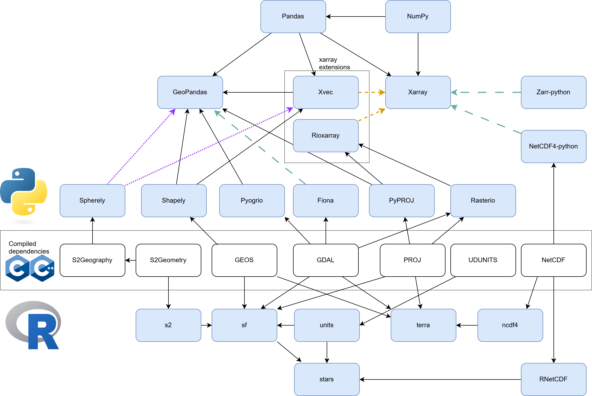
Árbol de dependencias específico para el paquete sf (Simple Features) en R, el motor fundamental de la geomática moderna en este entorno analítico.
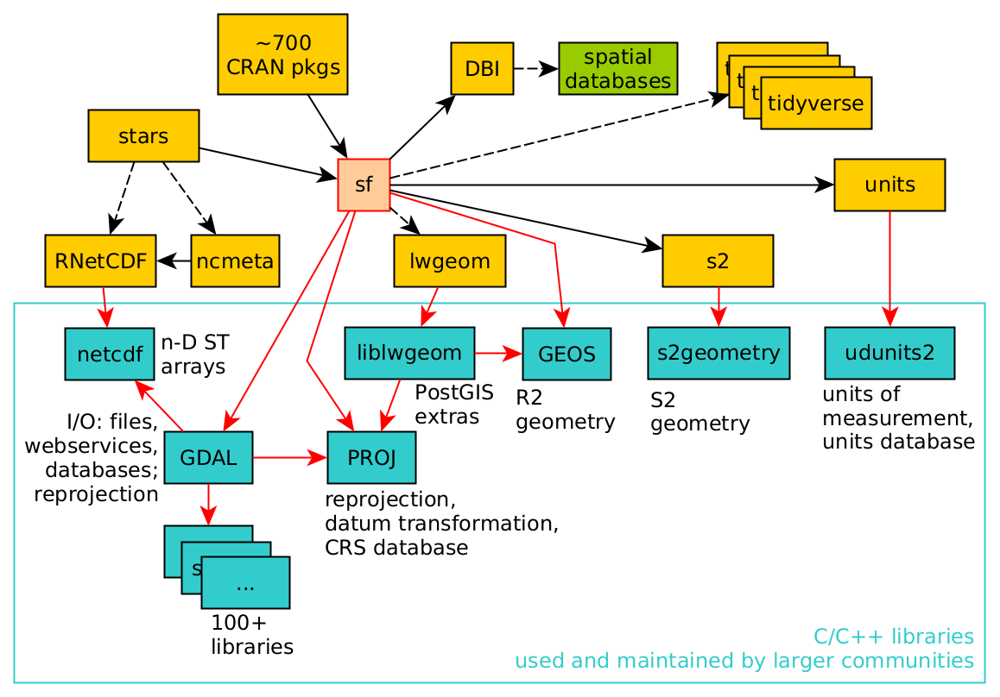
Estructura de la pila de dependencias dentro del ecosistema de Julia (GeoStack), destacando las envolturas directas (GDAL.jl, GEOS.jl, Proj.jl) hacia las API en lenguaje C.
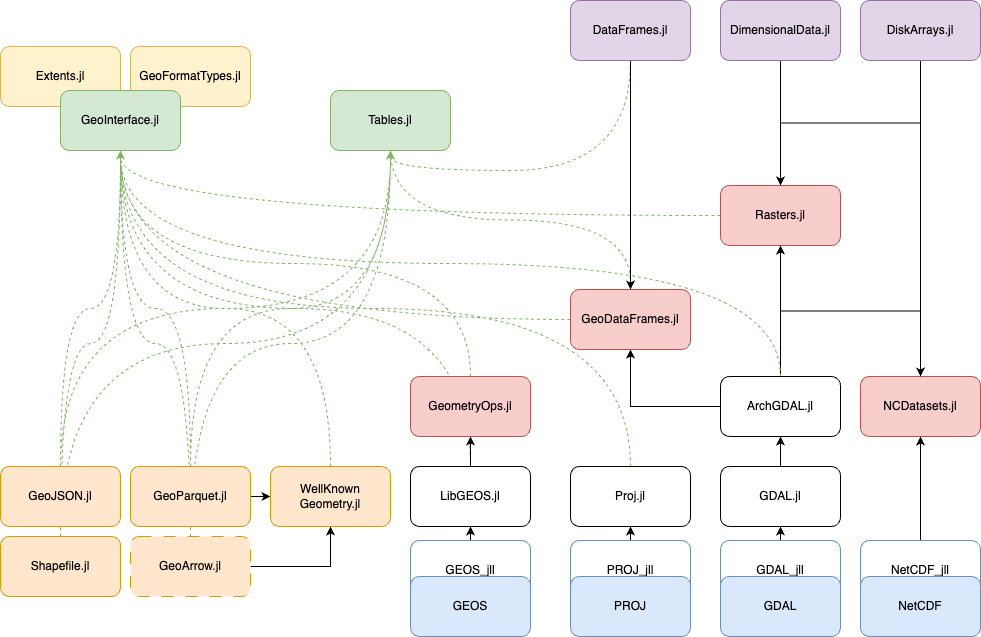
El enfoque alternativo consiste en instanciar directamente los objetos de la clase “Punto” proporcionando sus coordenadas numéricas al constructor de la librería correspondiente, para posteriormente apilarlos en una columna espacial.
import geopandas as gpd
from shapely.geometry import Point
import matplotlib.pyplot as plt
# 1. Instanciación explícita de las primitivas geométricas (Point)
p1 = Point(-72.9553, 4.0903)
p2 = Point(-74.0760, 4.5981)
p3 = Point(-75.1792, 6.2205)
# 2. Inspección de la primitiva geométrica
print("--- Primitiva p3 ---")--- Primitiva p3 ---print(p3)POINT (-75.1792 6.2205)print(type(p3), "\n")<class 'shapely.geometry.point.Point'> # 3. Ensamblaje directo de atributos y lista de primitivas en un GeoDataFrame
gdf_prim = gpd.GeoDataFrame(
{"Lugar": ["Centro Geográfico", "Plaza de Bolívar", "Piedra del Peñol"]},
geometry=[p1, p2, p3],
crs="EPSG:4326"
)
# 4. Inspección de la columna espacial y la tabla completa
# En Python se accede a las columnas con el punto (.) o corchetes ['columna']
print("--- Columna de Geometría ---")--- Columna de Geometría ---print(gdf_prim.geometry)0 POINT (-72.9553 4.0903)
1 POINT (-74.076 4.5981)
2 POINT (-75.1792 6.2205)
Name: geometry, dtype: geometryprint(type(gdf_prim.geometry), "\n")<class 'geopandas.geoseries.GeoSeries'> print("--- Estructura de la Tabla ---")--- Estructura de la Tabla ---print(gdf_prim) Lugar geometry
0 Centro Geográfico POINT (-72.9553 4.0903)
1 Plaza de Bolívar POINT (-74.076 4.5981)
2 Piedra del Peñol POINT (-75.1792 6.2205)print(type(gdf_prim), "\n")<class 'geopandas.geodataframe.GeoDataFrame'> # 5. Visualización
fig, ax = plt.subplots(figsize=(8, 6))
gdf_prim.plot(ax=ax, column="Lugar", legend=True, markersize=100, cmap="Dark2")
ax.set_title("Lugares Representativos (Primitivas)")
plt.show()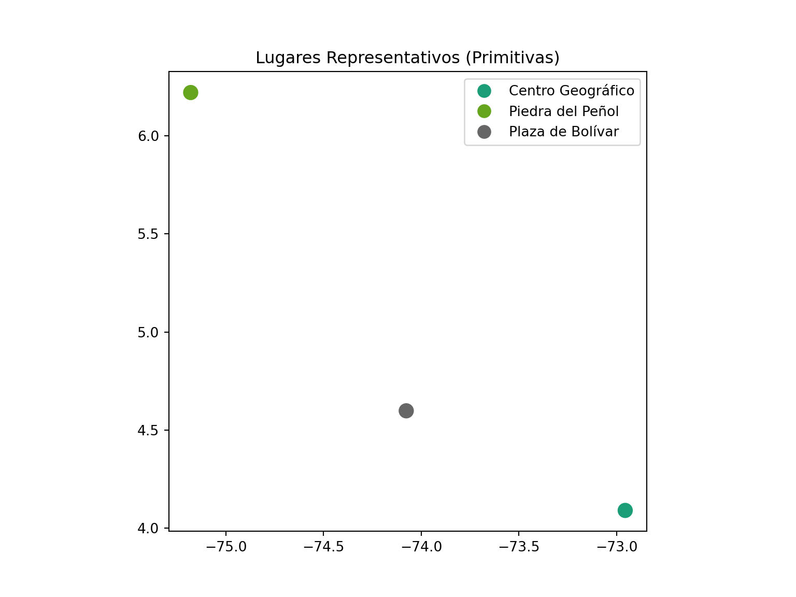
library(sf)Linking to GEOS 3.12.1, GDAL 3.8.4, PROJ 9.4.0; sf_use_s2() is TRUE# 1. Instanciación de las primitivas individuales (sfg)
p1 <- st_point(c(-72.9553, 4.0903))
p2 <- st_point(c(-74.0760, 4.5981))
p3 <- st_point(c(-75.1792, 6.2205))
# 2. Inspección de la primitiva geométrica
print(p3)POINT (-75.1792 6.2205)print(class(p3))[1] "XY" "POINT" "sfg" # 3. Agrupación en una columna espacial (sfc)
columna_sfc <- st_sfc(p1, p2, p3, crs = 4326)
# 4. Ensamblaje en la tabla espacial (sf)
gdf_prim <- st_sf(
Lugar = c("Centro Geográfico", "Plaza de Bolívar", "Piedra del Peñol"),
geometry = columna_sfc
)
# 5. Inspección de la columna espacial y la tabla completa
print(gdf_prim$geometry)Geometry set for 3 features
Geometry type: POINT
Dimension: XY
Bounding box: xmin: -75.1792 ymin: 4.0903 xmax: -72.9553 ymax: 6.2205
Geodetic CRS: WGS 84POINT (-72.9553 4.0903)POINT (-74.076 4.5981)POINT (-75.1792 6.2205)print(class(gdf_prim$geometry))[1] "sfc_POINT" "sfc" print(gdf_prim)Simple feature collection with 3 features and 1 field
Geometry type: POINT
Dimension: XY
Bounding box: xmin: -75.1792 ymin: 4.0903 xmax: -72.9553 ymax: 6.2205
Geodetic CRS: WGS 84
Lugar geometry
1 Centro Geográfico POINT (-72.9553 4.0903)
2 Plaza de Bolívar POINT (-74.076 4.5981)
3 Piedra del Peñol POINT (-75.1792 6.2205)print(class(gdf_prim))[1] "sf" "data.frame"# 6. Visualización
plot(
gdf_prim["Lugar"],
main = "Lugares Representativos (Primitivas)",
pch = 17, cex = 2, axes = TRUE, key.pos = 4
)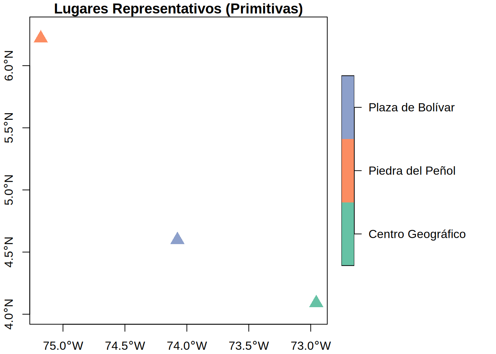
j_eval('
using ArchGDAL
using DataFrames
using Plots
# 1. Instanciación de las primitivas geométricas
p1 = ArchGDAL.createpoint(-72.9553, 4.0903)
p2 = ArchGDAL.createpoint(-74.0760, 4.5981)
p3 = ArchGDAL.createpoint(-75.1792, 6.2205)
# 2. Inspección de la primitiva geométrica
println(p3)
println(typeof(p3))
# 3. Ensamblaje en el DataFrame utilizando un arreglo de geometrías
df_prim = DataFrame(
Lugar = ["Centro Geográfico", "Plaza de Bolívar", "Piedra del Peñol"],
geometry = [p1, p2, p3]
)
# 4. Inspección de la columna espacial y la tabla completa
columna_geo = df_prim.geometry
println("Tipo de la columna completa: ", typeof(columna_geo))
println("Tipo de la tabla espacial: ", typeof(df_prim))
# 5. Visualización y exportación
x_coords = ArchGDAL.getx.(df_prim.geometry, 0)
y_coords = ArchGDAL.gety.(df_prim.geometry, 0)
p_prim = Plots.scatter(
x_coords, y_coords,
group = df_prim.Lugar,
title = "Lugares Representativos (Primitivas)",
markershape = :utriangle, markersize = 8, aspect_ratio = :equal,
legend = :outertopright
)
Plots.savefig(p_prim, "images/c14_plot_primitivas_lugares_julia.png")
')Starting Julia ...julia> using ArchGDAL
julia> using DataFrames
julia> using Plots
julia> # 1. Instanciación de las primitivas geométricas
julia> p1 = ArchGDAL.createpoint(-72.9553, 4.0903)
Geometry: POINT (-72.9553 4.0903)
julia> p2 = ArchGDAL.createpoint(-74.0760, 4.5981)
Geometry: POINT (-74.076 4.5981)
julia> p3 = ArchGDAL.createpoint(-75.1792, 6.2205)
Geometry: POINT (-75.1792 6.2205)
julia> # 2. Inspección de la primitiva geométrica
julia> println(p3)
Geometry: POINT (-75.1792 6.2205)
julia> println(typeof(p3))
ArchGDAL.IGeometry{ArchGDAL.wkbPoint}
julia> # 3. Ensamblaje en el DataFrame utilizando un arreglo de geometrías
julia> df_prim = DataFrame( Lugar = ["Centro Geográfico", "Plaza de Bolívar", "Piedra del Peñol"], geometry = [p1, p2, p3] )
3×2 DataFrame
Row │ Lugar geometry
│ String IGeometr…
─────┼───────────────────────────────────────
1 │ Centro Geográfico Geometry: wkbPoint
2 │ Plaza de Bolívar Geometry: wkbPoint
3 │ Piedra del Peñol Geometry: wkbPoint
julia> # 4. Inspección de la columna espacial y la tabla completa
julia> columna_geo = df_prim.geometry
3-element Vector{ArchGDAL.IGeometry{ArchGDAL.wkbPoint}}:
Geometry: POINT (-72.9553 4.0903)
Geometry: POINT (-74.076 4.5981)
Geometry: POINT (-75.1792 6.2205)
julia> println("Tipo de la columna completa: ", typeof(columna_geo))
Tipo de la columna completa: Vector{ArchGDAL.IGeometry{ArchGDAL.wkbPoint}}
julia> println("Tipo de la tabla espacial: ", typeof(df_prim))
Tipo de la tabla espacial: DataFrame
julia> # 5. Visualización y exportación
julia> x_coords = ArchGDAL.getx.(df_prim.geometry, 0)
3-element Vector{Float64}:
-72.9553
-74.076
-75.1792
julia> y_coords = ArchGDAL.gety.(df_prim.geometry, 0)
3-element Vector{Float64}:
4.0903
4.5981
6.2205
julia> p_prim = Plots.scatter( x_coords, y_coords, group = df_prim.Lugar, title = "Lugares Representativos (Primitivas)", markershape = :utriangle, markersize = 8, aspect_ratio = :equal, legend = :outertopright )
julia> Plots.savefig(p_prim, "images/c14_plot_primitivas_lugares_julia.png")
"/home/rstudio/work/01_prog_sig/images/c14_plot_primitivas_lugares_julia.png"
knitr::include_graphics("images/c14_plot_primitivas_lugares_julia.png")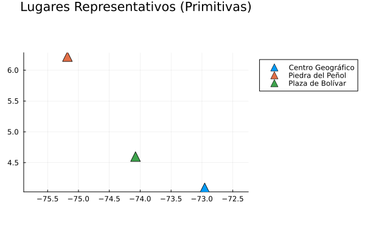
Nota técnica: Graficación modular en Julia
A diferencia de Python y R, Julia no posee un objeto “GeoDataFrame” monolítico con métodos de ploteo integrados. La diferencia radica en la arquitectura del lenguaje:
sf y geopandas contienen métodos que iteran automáticamente sobre las geometrías para extraer coordenadas al llamar a plot().DataFrames.jl gestiona tablas planas, ArchGDAL.jl procesa geometrías puras y Plots.jl funciona como un motor gráfico genérico.Al no existir una receta gráfica pre-programada para tablas espaciales, es obligatorio desensamblar las geometrías en sus vectores numéricos \(X\) e \(Y\). La aproximación más cercana a una sintaxis tabular requiere StatsPlots.jl y la macro @df:
# 1. Importación de StatsPlots: Esta librería extiende 'Plots.jl' y proporciona
# la macro '@df', permitiendo que las funciones gráficas reconozcan DataFrames.
using StatsPlots
# 2. Uso de la macro @df para graficación tabular:
# @df actúa como un 'traductor'; recibe el DataFrame (df_wkt) y permite que
# las columnas sean llamadas como símbolos (:nombre_columna). Sin esto,
# scatter() no sabría buscar ':geometry' o ':Lugar' dentro de la tabla.
@df df_wkt scatter(
# Extrae la coordenada X (Longitud) de forma vectorizada (operador punto '.')
# ArchGDAL.getx requiere la geometría y el índice del punto (0 para POINT).
# Al usar ':geometry', @df pasa toda la columna a la operación.
ArchGDAL.getx.(:geometry, 0),
# Extrae la coordenada Y (Latitud) de forma vectorizada (operador punto '.')
# Devuelve un vector numérico que el motor gráfico puede interpretar.
ArchGDAL.gety.(:geometry, 0),
# Atributo 'group': Es el equivalente a 'column' en GeoPandas o 'sf'.
# Categoriza los datos por los valores únicos de la columna ':Lugar',
# asignando colores automáticamente y construyendo la leyenda.
group = :Lugar,
# Parámetros estéticos:
title = "Visualización Espacial Modular (StatsPlots + ArchGDAL)",
xlabel = "Longitud",
ylabel = "Latitud",
markersize = 7,
# aspect_ratio = :equal es crítico en SIG para evitar la distorsión visual
# de las coordenadas geográficas en el plano.
aspect_ratio = :equal
)| Operación | Python (shapely/geopandas) 🐍 |
R (sf) 🔵 |
Julia (ArchGDAL) 🟣 |
|---|---|---|---|
| Instanciar primitiva | p = Point(x, y) |
p <- st_point(c(x, y)) |
p = ArchGDAL.createpoint(x, y) |
| Columna espacial | gpd.GeoSeries([p1, p2]) |
st_sfc(p1, p2) |
[p1, p2] (Vector de IGeometry) |
| Tabla espacial | gpd.GeoDataFrame(df, geometry=[p1, ...]) |
st_sf(df, geometry = sfc) |
DataFrame(df, geometry = [p1, ...]) |
Hasta ahora hemos trabajado con la primitiva espacial más elemental: el punto (una geometría de cero dimensiones). Sin embargo, para representar la geografía real necesitamos estructuras de mayor complejidad. Las carreteras, el cauce del Río Magdalena o las fronteras departamentales requieren geometrías de 1 y 2 dimensiones.
| Dimensión | Tipo de Geometría (OGC) | Propiedades Matemáticas | Ejemplos Cartográficos |
|---|---|---|---|
| 0D | Point, MultiPoint |
Solo posee coordenadas exactas de ubicación (X, Y). No tiene longitud ni área calculable. | Postes de luz, pozos de extracción, epicentros de sismos, ciudades (a escala global o nacional). |
| 1D | LineString, MultiLineString |
Posee longitud euclidiana o geodésica, pero carece de área. Conecta dos o más vértices en el espacio. | Red vial (carreteras), redes de acueducto, fallas geológicas, cauces de ríos (como líneas de flujo). |
| 2D | Polygon, MultiPolygon |
Posee longitud (perímetro) y un área bidimensional interna delimitada por anillos topológicos cerrados. | Fronteras departamentales, lagos y ciénagas, predios catastrales, reservas naturales. |
Independientemente del lenguaje de programación (Python, R o Julia), todos los ecosistemas GIS construyen estas geometrías complejas basándose en una arquitectura estricta de “muñecas rusas” (anidamiento de coordenadas):
POINT (Punto): El pilar fundamental. Matemáticamente es un simple vector numérico o tupla \([X, Y]\). Ejemplo: La plaza central de Villa de Leyva.
LINESTRING (Línea): Una secuencia de múltiples puntos conectados por segmentos rectos. En código, esto se representa como una matriz o una lista de coordenadas: \([[X_1, Y_1], [X_2, Y_2], ...]\). Ejemplo: Un tramo de la Ruta del Sol.
POLYGON (Polígono): Una geometría bidimensional con área. Estructuralmente es una lista de anillos (donde un anillo es un LINESTRING cerrado cuyo primer y último punto coinciden). El primer elemento de la lista siempre es el límite exterior, y los elementos subsiguientes representan huecos o “islas” vacías en su interior. Ejemplos:
Hueco puro (Enclave): La Comuna El Oso en Pereira, cuyo polígono base contiene un anillo interior que delimita íntegramente a la Comuna Perla del Otún.
Isla (Exclave): El departamento de Bolívar, cuya definición geométrica incluye polígonos disjuntos para las Islas del Rosario y la Isla de Tierra Bomba.
En muchas ocasiones cartográficas, una entidad espacial única no forma una figura geométrica continua. El mejor ejemplo en Colombia es el departamento de San Andrés, Providencia y Santa Catalina. Aunque es una sola entidad administrativa (que ocuparía una sola fila en nuestra tabla espacial), está compuesto por múltiples masas de tierra separadas por el mar.
Para solucionar esto, el estándar Simple Features define las colecciones o Multigeometrías:
MULTIPOINT: Un conjunto de puntos independientes tratados como un solo registro.MULTILINESTRING: Un conjunto de líneas separadas. Ejemplo: Una red fluvial donde un río principal y sus afluentes no están topológicamente conectados en los datos.MULTIPOLYGON: Una lista que agrupa múltiples polígonos independientes. En el código, esto implica un nivel adicional de profundidad matemática (una lista que contiene listas de anillos, que a su vez contienen listas de coordenadas).GEOMETRYCOLLECTION: La estructura más laxa. Es un contenedor que puede agrupar geometrías mixtas (por ejemplo, un punto, una línea y un polígono) en un único objeto espacial.Entender esta jerarquía (Punto \(\rightarrow\) Matriz \(\rightarrow\) Lista de Matrices \(\rightarrow\) Lista de Listas) es crucial, ya que al crear, extraer o modificar estas geometrías mediante código, la profundidad de los corchetes o índices aumentará en función de la complejidad estructural de la entidad.
A continuación, recreamos estas estructuras complejas simulando geometrías abstractas para visualizar el anidamiento.
En Python, el manejo de geometrías vectoriales se realiza nativamente con Shapely, mientras que la visualización y estructuración de datos espaciales se apoya en GeoPandas y Matplotlib.
La lógica en Shapely es directa: se construyen las geometrías a partir de listas de tuplas (coordenadas XY). Los polígonos complejos se definen pasando explícitamente un anillo exterior (shell) y una lista de anillos interiores (holes).
Detalles de visualización: Para garantizar consistencia gráfica a través de los diferentes lenguajes, se aplican argumentos específicos en la función .plot() de GeoPandas.
color='red': Asigna el color rojo a las geometrías unidimensionales y de dimensión cero (líneas y puntos).facecolor='lightgrey': Define el color de relleno interno para los polígonos (escala de grises).edgecolor='red': Controla el color del trazo perimetral (borde) de los polígonos.linewidth=1.5: Establece el grosor de las líneas y los contornos geométricos en 1.5 puntos.markersize=25: Amplía el diámetro de los vértices puntuales para facilitar su lectura en pantalla.# Importación de clases espaciales de Shapely (estándar geométrico en Python)
from shapely.geometry import MultiPoint, LineString, MultiLineString
from shapely.geometry import Polygon, MultiPolygon, GeometryCollection
# GeoPandas para manejo vectorial espacial y Matplotlib para el motor de renderizado
import geopandas as gpd
import matplotlib.pyplot as plt
# --- 1. MULTIPOINT ---
# Se instancian múltiples puntos discretos a partir de una lista de tuplas (coordenadas X, Y correspondientes al sistema SIRGAS o local)
p = [(3.2, 4), (3, 4.6), (3.8, 4.4), (3.5, 3.8), (3.4, 3.6), (3.9, 4.5)]
mp = MultiPoint(p)
# --- 2. LINESTRING ---
# Geometría unidimensional formada por una secuencia conectada y ordenada de coordenadas
s1 = [(0, 3), (0, 4), (1, 5), (2, 5)]
ls = LineString(s1)
# --- 3. MULTILINESTRING ---
# Colección de múltiples líneas que componen segmentos desconectados espacialmente
s2 = [(0.2, 3), (0.2, 4), (1, 4.8), (2, 4.8)]
s3 = [(0, 4.4), (0.6, 5)]
mls = MultiLineString([s1, s2, s3]) # Se consolidan pasando una lista contenedora
# --- 4. POLYGON ---
# Geometría bidimensional de área. Requiere obligatoriamente un anillo exterior cerrado
p1 = [(0, 0), (1, 0), (3, 2), (2, 4), (1, 4), (0, 0)] # Límite principal (shell)
p2 = [(1, 1), (1, 2), (2, 2), (1, 1)] # Límite interior de vaciado topológico (hole)
pol = Polygon(shell=p1, holes=[p2]) # Asignación explícita durante la instanciación
# --- 5. MULTIPOLYGON ---
# Agrupación de polígonos totalmente independientes
p3 = [(3, 0), (4, 0), (4, 1), (3, 1), (3, 0)]
p4 = [(3.3, 0.3), (3.8, 0.3), (3.8, 0.8), (3.3, 0.8), (3.3, 0.3)]
p5 = [(3, 3), (4, 2), (4, 3), (3, 3)]
# Estructuración jerárquica mediante tuplas anidadas: (matriz_exterior, [lista_matrices_huecos])
mpol = MultiPolygon([
(p1, [p2]), # Bloque polinuclear 1 (integra un hueco)
(p3, [p4]), # Bloque polinuclear 2 (integra un hueco)
(p5, []) # Bloque polinuclear 3 (conglomerado sólido sin perforaciones)
])
# --- 6. GEOMETRYCOLLECTION ---
# Contenedor heterogéneo universal apto para amalgamar dimensionalidades cruzadas (0D, 1D, 2D)
gc = GeometryCollection([mp, mpol, ls])
# Comprobación de integridad del objeto en consola
print("--- Inspección de topología espacial ---")--- Inspección de topología espacial ---print("Objeto MultiPolygon (mpol) inicializado correctamente.")Objeto MultiPolygon (mpol) inicializado correctamente.print("Tipo de clase: ", type(mpol), "\n")Tipo de clase: <class 'shapely.geometry.multipolygon.MultiPolygon'> # --- Renderizado gráfico (Grid matricial de 2x3 con ejes cartesianos activos) ---
# plt.subplots particiona el lienzo base y delimita sus cotas físicas (pulgadas)
fig, axs = plt.subplots(2, 3, figsize=(12, 8))
# Ejecución del método visualizador .plot() forzando conversión temporal a GeoSeries.
# ax asegura la ubicación dentro del cuadrante, asimilando argumentos semánticos de diseño.
# Dibujar la geometría en el eje específico
gpd.GeoSeries([mp]).plot(ax=axs[0,0], color='red', markersize=25)
# Configurar el título de ese mismo eje
axs[0,0].set_title('MULTIPOINT')
gpd.GeoSeries([ls]).plot(ax=axs[0,1], color='red', linewidth=1.5)
axs[0,1].set_title('LINESTRING')
gpd.GeoSeries([mls]).plot(ax=axs[0,2], color='red', linewidth=1.5)
axs[0,2].set_title('MULTILINESTRING')
gpd.GeoSeries([pol]).plot(ax=axs[1,0], facecolor='lightgrey', edgecolor='red', linewidth=1.5)
axs[1,0].set_title('POLYGON')
gpd.GeoSeries([mpol]).plot(ax=axs[1,1], facecolor='lightgrey', edgecolor='red', linewidth=1.5)
axs[1,1].set_title('MULTIPOLYGON')
# Algoritmo de superposición Z-index en la colección mixta:
# GeoPandas asigna colores automáticos no uniformes en subgeometrías complejas.
# Se sobreescribe secuencialmente
# primero el polígono gris
gpd.GeoSeries([gc]).plot(ax=axs[1,2], facecolor='lightgrey', edgecolor='red', linewidth=1.5)
# y se imprimen luego vectores ...
gpd.GeoSeries([ls]).plot(ax=axs[1,2], color='red', linewidth=1.5)
# ... y puntos en primer plano.
gpd.GeoSeries([mp]).plot(ax=axs[1,2], color='red', markersize=25)
axs[1,2].set_title('GEOMETRYCOLLECTION')
# Restricción topológica de interfaz para mitigar cruces de etiquetas de coordenadas espaciales
plt.tight_layout()
plt.show()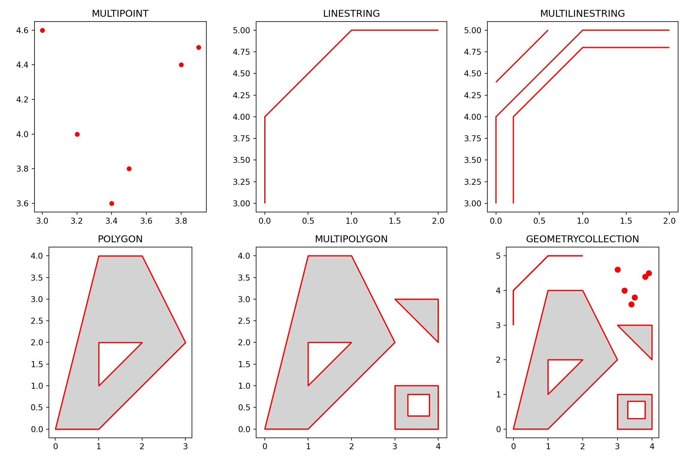
En R, el ecosistema estándar para operaciones espaciales se apoya en el paquete sf (Simple Features). A diferencia del enfoque de tuplas utilizado en Python, R construye las geometrías a partir de matrices numéricas, empleando funciones base como rbind para concatenar coordenadas por filas.
La estructuración de polígonos con huecos exige el anidamiento de matrices dentro de listas: la primera matriz de la lista asume automáticamente el rol de anillo exterior, mientras que las matrices subsecuentes operan geométrica y topológicamente como perforaciones.
Detalles de visualización: La función genérica plot() en R interactúa con métodos específicos de clase. Para igualar el estilo visual, se manejan los siguientes parámetros parágraficos base.
col: Define el color primario. Para geometrías cerradas representa el relleno ('lightgrey'), y para geometrías abiertas representa la línea o el vértice ('red').border: Sobrescribe el color del contorno perimetral en los polígonos. Se utiliza 'red'.lwd (Line Width): Controla el grosor de las líneas y contornos. Se estandariza en 1.5.pch (Point Character): Modifica la simbología del vértice. El código numérico 16 renderiza un círculo completamente sólido.cex (Character Expansion): Factor de escala que multiplica el tamaño base del pch. Se fija en 1.2.axes = TRUE: Obliga al motor gráfico a dibujar las reglas de coordenadas cartesianas X e Y.xlim y ylim: Vectores numéricos que imponen un recorte duro (Bounding Box manual) sobre el lienzo para maximizar el uso del espacio y evitar vacíos derivados del cálculo automático de R.# Carga de las rutinas primarias orientadas a la interoperabilidad espacial
library(sf)
# --- 1. MULTIPOINT ---
# La función rbind unifica listas de vectores como filas matrices bidimensionales continuas.
p <- rbind(c(3.2,4), c(3,4.6), c(3.8,4.4), c(3.5,3.8), c(3.4,3.6), c(3.9,4.5))
# El constructor st_multipoint compila formalmente la matriz hacia un Simple Feature Geometry (sfg)
mp <- st_multipoint(p)
# --- 2. LINESTRING ---
# Serie correlativa de nodos que pautan una estructura lineal.
s1 <- rbind(c(0,3),c(0,4),c(1,5),c(2,5))
ls <- st_linestring(s1)
# --- 3. MULTILINESTRING ---
# Definición paramétrica para líneas de rutas segmentadas no dependientes.
s2 <- rbind(c(0.2,3), c(0.2,4), c(1,4.8), c(2,4.8))
s3 <- rbind(c(0,4.4), c(0.6,5))
# Acepta el encapsulamiento de múltiples s1, s2, s3 como entradas iterativas de una lista global
mls <- st_multilinestring(list(s1,s2,s3))
# --- 4. POLYGON ---
# p1 determina el confín espacial. Su evaluación métrica exige cierre (nodo inicial == nodo terminal).
p1 <- rbind(c(0,0), c(1,0), c(3,2), c(2,4), c(1,4), c(0,0))
# p2 opera lógicamente de zona vacía o hueco en la extensión total.
p2 <- rbind(c(1,1), c(1,2), c(2,2), c(1,1))
# Al someter la lista a st_polygon, el algoritmo efectúa el vaciado geométrico con base al orden.
pol <- st_polygon(list(p1,p2))
# --- 5. MULTIPOLYGON ---
# Estructuración de recintos independientes a gran escala
p3 <- rbind(c(3,0), c(4,0), c(4,1), c(3,1), c(3,0))
# Se introduce un factor de inversión sobre el vector ([5:1,]) probando la resistencia
# de la regla de dirección topológica implementada en GEOS / sf
p4 <- rbind(c(3.3,0.3), c(3.8,0.3), c(3.8,0.8), c(3.3,0.8), c(3.3,0.3))[5:1,]
p5 <- rbind(c(3,3), c(4,2), c(4,3), c(3,3))
# Reclamo de jerarquías avanzadas: lista de listas conteniendo las mallas matrices
mpol <- st_multipolygon(list(list(p1,p2), list(p3,p4), list(p5)))
# --- 6. GEOMETRYCOLLECTION ---
# Soporte misceláneo universal aglutinante de las abstracciones precedentes (0D, 1D, 2D)
gc <- st_geometrycollection(list(mp, mpol, ls))
# Inspección diagnóstica a nivel terminal.
print("--- Inspección de topología espacial ---")[1] "--- Inspección de topología espacial ---"print("Objeto mpol creado.")[1] "Objeto mpol creado."print(paste("Tipo de clase:", class(mpol)[2])) # Exposición de la subclase matriz sfg[1] "Tipo de clase: MULTIPOLYGON"# --- Configuración del Lienzo Multipanel (Layout 2x3) ---
# La función par() (graphical parameters) define la persistencia del área de dibujo:
# mfrow: Organiza la matriz de gráficos (2 filas, 3 columnas).
# El orden de renderizado es por FILAS (de izquierda a derecha).
# mar: Ajusta los márgenes internos de cada cuadrante en líneas de texto
# c(abajo, izquierda, arriba, derecha). Se reducen para maximizar el área espacial.
par(mfrow = c(2, 3), mar = c(3, 3, 2, 1))
# --- Renderizado de Primitivas Geométricas (OGC Simple Features) ---
# 1. MULTIPOINT
# pch: (point character) define el símbolo; 16 es un círculo sólido.
# cex: (character expansion) escala el tamaño del punto (1.2 = 120%).
plot(mp, col = 'red', pch = 16, cex = 1.2, axes = TRUE,
xlim = c(2.8, 4.2), ylim = c(3.4, 4.8))
title("MULTIPOINT", cex.main = 0.9) # Título con escala ajustada
# 2. LINESTRING
# lwd: (line width) grosor de la línea.
plot(ls, col = 'red', lwd = 2, axes = TRUE,
xlim = c(-0.2, 2.2), ylim = c(2.8, 5.2))
title("LINESTRING", cex.main = 0.9)
# 3. MULTILINESTRING
plot(mls, col = 'red', lwd = 2, axes = TRUE,
xlim = c(-0.2, 2.2), ylim = c(2.8, 5.2))
title("MULTILINESTRING", cex.main = 0.9)
# 4. POLYGON
# border: Color del perímetro. col: Color del relleno (fill).
plot(pol, border = 'red', col = '#EEEEEE', lwd = 1.5, axes = TRUE,
xlim = c(-0.2, 3.2), ylim = c(-0.2, 4.2))
title("POLYGON", cex.main = 0.9)
# 5. MULTIPOLYGON
# Se mantienen límites (xlim/ylim) consistentes para permitir comparación visual directa.
plot(mpol, border = 'red', col = '#EEEEEE', lwd = 1.5, axes = TRUE,
xlim = c(-0.2, 4.2), ylim = c(-0.2, 4.2))
title("MULTIPOLYGON", cex.main = 0.9)
# 6. GEOMETRYCOLLECTION
# Secuencia estratificada asíncrona sobre GeometryCollection.
# La inyección de `add = TRUE` previene la eliminación
# del canvas polígono gris al dibujar las capas primarias vectoriales
# y asegurar fidelidad de escala y color.
plot(gc, border = 'red', col = 'lightgrey', lwd = 1.5, axes = TRUE,
xlim=c(-0.2, 4.2), ylim=c(-0.2, 5.2))
plot(ls, col = 'red', lwd = 1.5, add = TRUE)
plot(mp, col = 'red', pch = 16, cex = 1.2, add = TRUE)
title("GEOMETRYCOLLECTION")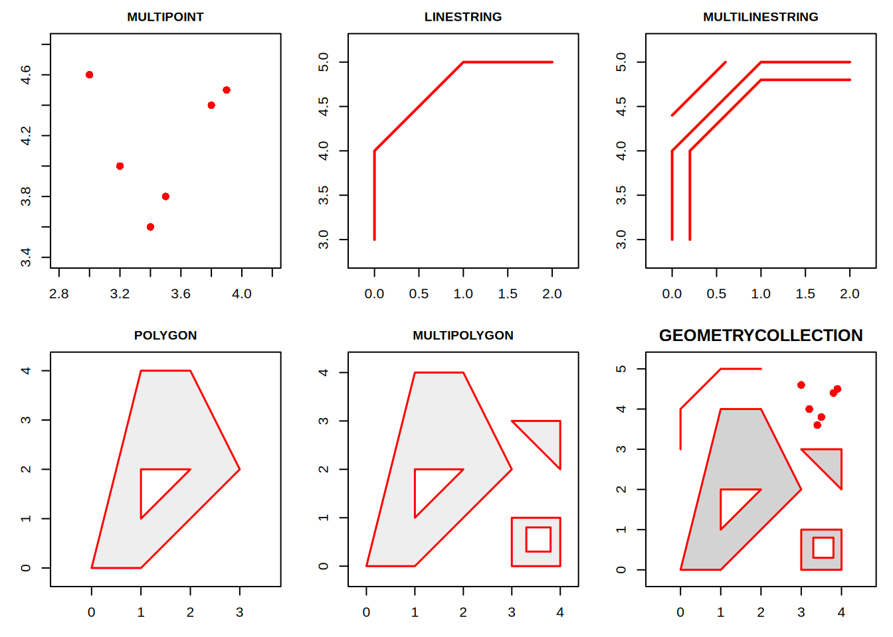
# Depuración del buffer de diseño
par(mfrow = c(1, 1))En el entorno algorítmico espacial de Julia se utiliza ArchGDAL.jl para asegurar una base C++ robusta en la validación topológica, y la librería CairoMakie.jl para orquestar la renderización del lienzo.
Julia estructura sus primitivas mediante tuplas () y vectores [].
Detalles de visualización: Para homologar el estilo estético con Python y R bajo la sintaxis específica del ecosistema Makie, se aplican descriptores semánticos durante las llamadas a funciones como scatter! y poly!.
color: Controla el matiz central geométrico. Se emplea el símbolo base rojo (:red) para primitivas y puntos, y gris (:lightgray) para mallas cerradas.strokecolor: Argumento exclusivo del método poly!, encargado de perfilar perimetralmente las mallas (utilizando :red).strokewidth: Argumento numérico que fuerza la anchura del vector envolvente al mismo nivel industrial definido en Python (valor 1.5).markersize: Determina la amplitud absoluta del vértice disperso en pantalla (fijado en un tamaño visible de 10).Notas técnicas sobre el flujo de geometría en Julia
Plots.jl vs CairoMakie.jl): En el ecosistema general de Julia, librerías como Plots.jl tienen dificultades manejando topologías complejas (especialmente la renderización nativa de huecos dentro de polígonos), requiriendo a menudo sobreponer geometrías blancas para “engañar” a la gráfica. Por esto se usa CairoMakie.jl, cuyo tipo Makie.Polygon está diseñado específicamente para interpretar anillos exteriores y perforar huecos interiores con total transparencia topológica.ArchGDAL, un polígono con huecos se conforma de un anillo exterior (índice 0) y n anillos interiores (índice 1 en adelante). Para que Makie lo dibuje correctamente, se extraen los puntos del exterior como un arreglo de Point2f, y los huecos como un “arreglo de arreglos” de Point2f. Makie ejecuta el cálculo de recorte geométrico final.wkb): A diferencia de las otras geometrías, donde se usan constructores explícitos y directos (como createpolygon o createmultipoint), la librería ArchGDAL.jl omite una función constructora de alto nivel equivalente llamada creategeometrycollection. Frente a esta deficiencia en la capa de software, se debe forzar una asignación de bajo nivel invocando el estándar de representación en lenguaje C (Well-Known Binary). Esto demanda instanciar un contenedor lógico hueco bajo el tipo escalar ArchGDAL.wkbGeometryCollection, operando posteriormente sobre sus direcciones de memoria mediante la inyección concurrente provista por la macrofunción base addgeom!.Plots.jl, el núcleo procesador C++ base mantendrá persistente la definición de las macros en estado estático. Tanto Plots como CairoMakie resuelven rutinas compartiendo macros reservadas asimétricas (ej. scatter! y poly!). Para anular el colapso del compilador por ambigüedad al momento de derivar el puntero, se aplican sentencias de blindaje de nivel operativo invocando expresamente las funciones mediante la definición explícita de su contenedor macro global o namespace asociado: CairoMakie.scatter!(...), CairoMakie.poly!(...) y CairoMakie.lines!(...).map(): En Julia, la técnica estandarizada, óptima y computacionalmente transparente de extracción iterativa de arreglos vectoriales multidimensionales consiste en explotar las listas de comprensión en línea (operación basada en sintaxis [... for ... in ...], ver ejemplo después de este párrafo). Esto facilita la recolección en bloque sobre las jerarquías internas topológicas de ArchGDAL. Nota técnica del motor: En etapas iniciales de la estructura del curso, el analizador léxico (j_eval) de interconexión R-Julia manifestaba severos problemas de colisión de evaluación, interpretando el operador for interno del arreglo como una directiva de iteración multilínea que disparaba una exigencia de compilación nula buscando el operador end. Esta colisión de arquitecturas obligaba a forzar un parche en el flujo recurriendo a la función macro map(i -> ...). Se reporta que la refactorización arquitectónica implementada sobre la función interpretativa (j_eval) en el ambiente de Quarto ha resuelto la anomalía introduciendo una validación semántica regida por expresiones regulares, estabilizando el parseo. A partir de este nivel operativo, el uso provisorio del enmascaramiento macro map es innecesario, permitiendo correr las evaluaciones nativas del código de manera íntegra, transparente y con las métricas de rendimiento estables del entorno original.Ejemplo de lista de compresión:
cuadrados = [x^2 for x in 1:5]
# Devuelve: 5-element Vector{Int64}: [1, 4, 9, 16, 25]# El puente j_eval orquesta iterativamente la ejecución Julia dentro del entorno host R.
j_eval(r"-(
using ArchGDAL
using CairoMakie
# --- 1. CONSTRUCCIÓN DE MULTIPOINT ---
# ArchGDAL instancía geometrías recibiendo vectores unidimensionales con tuplas de coordenadas
mp = ArchGDAL.createmultipoint([(3.2, 4.0), (3.0, 4.6), (3.8, 4.4), (3.5, 3.8), (3.4, 3.6), (3.9, 4.5)])
# --- 2. LINESTRING ---
# Secuencia ordenada de vértices espaciales
ls = ArchGDAL.createlinestring([(0.0, 3.0), (0.0, 4.0), (1.0, 5.0), (2.0, 5.0)])
# --- 3. MULTILINESTRING ---
# Requiere un arreglo contenedor que envuelve las diferentes rutas segmentadas
mls = ArchGDAL.createmultilinestring([
[(0.0, 3.0), (0.0, 4.0), (1.0, 5.0), (2.0, 5.0)],
[(0.2, 3.0), (0.2, 4.0), (1.0, 4.8), (2.0, 4.8)],
[(0.0, 4.4), (0.6, 5.0)]
])
# --- 4. POLYGON ---
# Construcción mediante un arreglo de arreglos. El índice inicial es el anillo exterior estricto.
# Los arreglos secundarios se interpretan operativamente como sustracciones topológicas (huecos).
pol = ArchGDAL.createpolygon([
[(0.0, 0.0), (1.0, 0.0), (3.0, 2.0), (2.0, 4.0), (1.0, 4.0), (0.0, 0.0)],
[(1.0, 1.0), (1.0, 2.0), (2.0, 2.0), (1.0, 1.0)]
])
# --- 5. MULTIPOLYGON ---
# Agrupación jerárquica tridimensional. Colección de entidades poligonales independientes.
mpol = ArchGDAL.createmultipolygon([
[[(0.0, 0.0), (1.0, 0.0), (3.0, 2.0), (2.0, 4.0), (1.0, 4.0), (0.0, 0.0)], [(1.0, 1.0), (1.0, 2.0), (2.0, 2.0), (1.0, 1.0)]],
[[(3.0, 0.0), (4.0, 0.0), (4.0, 1.0), (3.0, 1.0), (3.0, 0.0)]],
[[(3.0, 3.0), (4.0, 2.0), (4.0, 3.0), (3.0, 3.0)]]
])
# --- 6. GEOMETRYCOLLECTION (Excepción WKB) ---
# ArchGDAL exige instanciar la colección vacía directamente bajo el estándar Well-Known Binary
gc = ArchGDAL.creategeom(ArchGDAL.wkbGeometryCollection)
# Inserción dinámica de las sub-geometrías iterando sobre el bloque de memoria
ArchGDAL.addgeom!(gc, ArchGDAL.createmultipoint([(3.2, 4.0), (3.0, 4.6), (3.8, 4.4), (3.5, 3.8), (3.4, 3.6), (3.9, 4.5)]))
ArchGDAL.addgeom!(gc, ArchGDAL.createlinestring([(0.0, 3.0), (0.0, 4.0), (1.0, 5.0), (2.0, 5.0)]))
ArchGDAL.addgeom!(gc, ArchGDAL.createmultipolygon([
[[(0.0, 0.0), (1.0, 0.0), (3.0, 2.0), (2.0, 4.0), (1.0, 4.0), (0.0, 0.0)], [(1.0, 1.0), (1.0, 2.0), (2.0, 2.0), (1.0, 1.0)]],
[[(3.0, 0.0), (4.0, 0.0), (4.0, 1.0), (3.0, 1.0), (3.0, 0.0)]],
[[(3.0, 3.0), (4.0, 2.0), (4.0, 3.0), (3.0, 3.0)]]
]))
# --- FUNCIONES AUXILIARES: CONVERSIÓN VECTORIAL ARCHGDAL -> CAIROMAKIE ---
# 1. Función para procesamiento matricial de polígonos
function to_makie_poly(gdal_poly)
# Extracción del anillo principal (índice geométrico 0)
ext = ArchGDAL.getgeom(gdal_poly, 0)
# Comprensión de lista para mapear iterativamente los nodos hacia estructuras Point2f de Makie
ext_pts = [Point2f(ArchGDAL.getx(ext, i), ArchGDAL.gety(ext, i)) for i in 0:ArchGDAL.ngeom(ext)-1]
# Recolección condicional de anillos interiores (índices > 0)
holes = Vector{Vector{Point2f}}()
for i in 1:ArchGDAL.ngeom(gdal_poly)-1
hole = ArchGDAL.getgeom(gdal_poly, i)
push!(holes, [Point2f(ArchGDAL.getx(hole, j), ArchGDAL.gety(hole, j)) for j in 0:ArchGDAL.ngeom(hole)-1])
end
return Makie.Polygon(ext_pts, holes)
end
# 2. Función recursiva de evaluación para geometrías lineales
function plot_lines!(ax, linesgeom)
# Evalúa si corresponde a tipo simple unidimensional
if ArchGDAL.getgeomtype(linesgeom) == ArchGDAL.wkbLineString
pts = [Point2f(ArchGDAL.getx(linesgeom, i), ArchGDAL.gety(linesgeom, i)) for i in 0:ArchGDAL.ngeom(linesgeom)-1]
CairoMakie.lines!(ax, pts, color=:red, linewidth=1.5)
else
# Iteración en profundidad en caso de detectar arreglos compuestos (MultiLineString)
for i in 0:ArchGDAL.ngeom(linesgeom)-1
plot_lines!(ax, ArchGDAL.getgeom(linesgeom, i))
end
end
end
# Control de almacenamiento en el sistema base de Quarto (evita rutas nulas al almacenar PNG)
# Si la carpeta NO existe créala
# isdir("images") || mkpath("images")
# --- RENDERIZADO PRINCIPAL (GRID 2x3 CON EJES CARTESIANOS ACTIVADOS) ---
# Declaración global de la figura y su área espacial
fig = Figure(size = (800, 500))
# Asignación discreta de ejes coordenados a subcuadrantes matriciales
ax1 = Axis(fig[1, 1], title = "MULTIPOINT")
ax2 = Axis(fig[1, 2], title = "LINESTRING")
ax3 = Axis(fig[1, 3], title = "MULTILINESTRING")
ax4 = Axis(fig[2, 1], title = "POLYGON")
ax5 = Axis(fig[2, 2], title = "MULTIPOLYGON")
ax6 = Axis(fig[2, 3], title = "GEOMETRYCOLLECTION")
# Bloqueo global de ratio paramétrico.
# Se omite explícitamente hidedecorations! para forzar la visibilidad gráfica transversal de ejes.
for ax in [ax1, ax2, ax3, ax4, ax5, ax6]
ax.aspect = DataAspect()
end
# Operaciones algorítmicas de visualización capa por capa
pts_x = [ArchGDAL.getx(ArchGDAL.getgeom(mp, i), 0) for i in 0:ArchGDAL.ngeom(mp)-1]
pts_y = [ArchGDAL.gety(ArchGDAL.getgeom(mp, i), 0) for i in 0:ArchGDAL.ngeom(mp)-1]
CairoMakie.scatter!(ax1, pts_x, pts_y, color=:red, markersize=10)
plot_lines!(ax2, ls)
plot_lines!(ax3, mls)
# Para las mallas continuas se asignan parámetros de relleno uniforme (gris) y borde (rojo)
CairoMakie.poly!(ax4, to_makie_poly(pol), color=:lightgray, strokecolor=:red, strokewidth=1.5)
for i in 0:ArchGDAL.ngeom(mpol)-1
CairoMakie.poly!(ax5, to_makie_poly(ArchGDAL.getgeom(mpol, i)), color=:lightgray, strokecolor=:red, strokewidth=1.5)
end
# Renderizado de GeometryCollection. Se invierte la superposición para ubicar primero
# los polígonos, asegurando un contraste nítido frente a la red de líneas vectoriales.
gc_mpol = ArchGDAL.getgeom(gc, 2)
for i in 0:ArchGDAL.ngeom(gc_mpol)-1
CairoMakie.poly!(ax6, to_makie_poly(ArchGDAL.getgeom(gc_mpol, i)), color=:lightgray, strokecolor=:red, strokewidth=1.5)
end
plot_lines!(ax6, ArchGDAL.getgeom(gc, 1))
pts_gc_x = [ArchGDAL.getx(ArchGDAL.getgeom(ArchGDAL.getgeom(gc, 0), i), 0) for i in 0:ArchGDAL.ngeom(ArchGDAL.getgeom(gc, 0))-1]
pts_gc_y = [ArchGDAL.gety(ArchGDAL.getgeom(ArchGDAL.getgeom(gc, 0), i), 0) for i in 0:ArchGDAL.ngeom(ArchGDAL.getgeom(gc, 0))-1]
CairoMakie.scatter!(ax6, pts_gc_x, pts_gc_y, color=:red, markersize=10)
# Guardado con denominación estructural única requerida por el renderizador LaTeX/HTML de Quarto
CairoMakie.save("images/c01_plot_multigeom_julia.png", fig)
)-")julia> using ArchGDAL
julia> using CairoMakie
julia> # --- 1. CONSTRUCCIÓN DE MULTIPOINT ---
julia> # ArchGDAL instancía geometrías recibiendo vectores unidimensionales con tuplas de coordenadas
julia> mp = ArchGDAL.createmultipoint([(3.2, 4.0), (3.0, 4.6), (3.8, 4.4), (3.5, 3.8), (3.4, 3.6), (3.9, 4.5)])
Geometry: MULTIPOINT (3.2 4.0,3.0 4.6,3.8 4.4,3.5 3.8,3.4 3.6,3.9 4.5)
julia> # --- 2. LINESTRING ---
julia> # Secuencia ordenada de vértices espaciales
julia> ls = ArchGDAL.createlinestring([(0.0, 3.0), (0.0, 4.0), (1.0, 5.0), (2.0, 5.0)])
Geometry: LINESTRING (0 3,0 4,1 5,2 5)
julia> # --- 3. MULTILINESTRING ---
julia> # Requiere un arreglo contenedor que envuelve las diferentes rutas segmentadas
julia> mls = ArchGDAL.createmultilinestring([ [(0.0, 3.0), (0.0, 4.0), (1.0, 5.0), (2.0, 5.0)], [(0.2, 3.0), (0.2, 4.0), (1.0, 4.8), (2.0, 4.8)], [(0.0, 4.4), (0.6, 5.0)] ])
Geometry: MULTILINESTRING ((0 3,0 4,1 5,2 5),(0.2 3.0,0.2 4. ... 5.0))
julia> # --- 4. POLYGON ---
julia> # Construcción mediante un arreglo de arreglos. El índice inicial es el anillo exterior estricto.
julia> # Los arreglos secundarios se interpretan operativamente como sustracciones topológicas (huecos).
julia> pol = ArchGDAL.createpolygon([ [(0.0, 0.0), (1.0, 0.0), (3.0, 2.0), (2.0, 4.0), (1.0, 4.0), (0.0, 0.0)], [(1.0, 1.0), (1.0, 2.0), (2.0, 2.0), (1.0, 1.0)] ])
Geometry: POLYGON ((0 0,1 0,3 2,2 4,1 4,0 0),(1 1,1 2,2 2,1 1))
julia> # --- 5. MULTIPOLYGON ---
julia> # Agrupación jerárquica tridimensional. Colección de entidades poligonales independientes.
julia> mpol = ArchGDAL.createmultipolygon([ [[(0.0, 0.0), (1.0, 0.0), (3.0, 2.0), (2.0, 4.0), (1.0, 4.0), (0.0, 0.0)], [(1.0, 1.0), (1.0, 2.0), (2.0, 2.0), (1.0, 1.0)]], [[(3.0, 0.0), (4.0, 0.0), (4.0, 1.0), (3.0, 1.0), (3.0, 0.0)]], [[(3.0, 3.0), (4.0, 2.0), (4.0, 3.0), (3.0, 3.0)]] ])
Geometry: MULTIPOLYGON (((0 0,1 0,3 2,2 4,1 4,0 0),(1 1,1 2, ... 3)))
julia> # --- 6. GEOMETRYCOLLECTION (Excepción WKB) ---
julia> # ArchGDAL exige instanciar la colección vacía directamente bajo el estándar Well-Known Binary
julia> gc = ArchGDAL.creategeom(ArchGDAL.wkbGeometryCollection)
Geometry: GEOMETRYCOLLECTION EMPTY
julia> # Inserción dinámica de las sub-geometrías iterando sobre el bloque de memoria
julia> ArchGDAL.addgeom!(gc, ArchGDAL.createmultipoint([(3.2, 4.0), (3.0, 4.6), (3.8, 4.4), (3.5, 3.8), (3.4, 3.6), (3.9, 4.5)]))
Geometry: GEOMETRYCOLLECTION (MULTIPOINT (3.2 4.0,3.0 4.6,3. ... 4.5))
julia> ArchGDAL.addgeom!(gc, ArchGDAL.createlinestring([(0.0, 3.0), (0.0, 4.0), (1.0, 5.0), (2.0, 5.0)]))
Geometry: GEOMETRYCOLLECTION (MULTIPOINT (3.2 4.0,3.0 4.6,3. ... 2 5))
julia> ArchGDAL.addgeom!(gc, ArchGDAL.createmultipolygon([ [[(0.0, 0.0), (1.0, 0.0), (3.0, 2.0), (2.0, 4.0), (1.0, 4.0), (0.0, 0.0)], [(1.0, 1.0), (1.0, 2.0), (2.0, 2.0), (1.0, 1.0)]], [[(3.0, 0.0), (4.0, 0.0), (4.0, 1.0), (3.0, 1.0), (3.0, 0.0)]], [[(3.0, 3.0), (4.0, 2.0), (4.0, 3.0), (3.0, 3.0)]] ]))
Geometry: GEOMETRYCOLLECTION (MULTIPOINT (3.2 4.0,3.0 4.6,3. ... 3))))
julia> # --- FUNCIONES AUXILIARES: CONVERSIÓN VECTORIAL ARCHGDAL -> CAIROMAKIE ---
julia> # 1. Función para procesamiento matricial de polígonos
julia> function to_makie_poly(gdal_poly) # Extracción del anillo principal (índice geométrico 0) ext = ArchGDAL.getgeom(gdal_poly, 0) # Comprensión de lista para mapear iterativamente los nodos hacia estructuras Point2f de Makie ext_pts = [Point2f(ArchGDAL.getx(ext, i), ArchGDAL.gety(ext, i)) for i in 0:ArchGDAL.ngeom(ext)-1] # Recolección condicional de anillos interiores (índices > 0) holes = Vector{Vector{Point2f}}() for i in 1:ArchGDAL.ngeom(gdal_poly)-1 hole = ArchGDAL.getgeom(gdal_poly, i) push!(holes, [Point2f(ArchGDAL.getx(hole, j), ArchGDAL.gety(hole, j)) for j in 0:ArchGDAL.ngeom(hole)-1]) end return Makie.Polygon(ext_pts, holes) end
to_makie_poly (generic function with 1 method)
julia> # 2. Función recursiva de evaluación para geometrías lineales
julia> function plot_lines!(ax, linesgeom) # Evalúa si corresponde a tipo simple unidimensional if ArchGDAL.getgeomtype(linesgeom) == ArchGDAL.wkbLineString pts = [Point2f(ArchGDAL.getx(linesgeom, i), ArchGDAL.gety(linesgeom, i)) for i in 0:ArchGDAL.ngeom(linesgeom)-1] CairoMakie.lines!(ax, pts, color=:red, linewidth=1.5) else # Iteración en profundidad en caso de detectar arreglos compuestos (MultiLineString) for i in 0:ArchGDAL.ngeom(linesgeom)-1 plot_lines!(ax, ArchGDAL.getgeom(linesgeom, i)) end end end
plot_lines! (generic function with 1 method)
julia> # Control de almacenamiento en el sistema base de Quarto (evita rutas nulas al almacenar PNG)
julia> # Si la carpeta NO existe créala
julia> # isdir("images") || mkpath("images")
julia> # --- RENDERIZADO PRINCIPAL (GRID 2x3 CON EJES CARTESIANOS ACTIVADOS) ---
julia> # Declaración global de la figura y su área espacial
julia> fig = Figure(size = (800, 500))
Figure()
julia> # Asignación discreta de ejes coordenados a subcuadrantes matriciales
julia> ax1 = Axis(fig[1, 1], title = "MULTIPOINT")
Axis with 0 plots:
julia> ax2 = Axis(fig[1, 2], title = "LINESTRING")
Axis with 0 plots:
julia> ax3 = Axis(fig[1, 3], title = "MULTILINESTRING")
Axis with 0 plots:
julia> ax4 = Axis(fig[2, 1], title = "POLYGON")
Axis with 0 plots:
julia> ax5 = Axis(fig[2, 2], title = "MULTIPOLYGON")
Axis with 0 plots:
julia> ax6 = Axis(fig[2, 3], title = "GEOMETRYCOLLECTION")
Axis with 0 plots:
julia> # Bloqueo global de ratio paramétrico.
julia> # Se omite explícitamente hidedecorations! para forzar la visibilidad gráfica transversal de ejes.
julia> for ax in [ax1, ax2, ax3, ax4, ax5, ax6] ax.aspect = DataAspect() end
julia> # Operaciones algorítmicas de visualización capa por capa
julia> pts_x = [ArchGDAL.getx(ArchGDAL.getgeom(mp, i), 0) for i in 0:ArchGDAL.ngeom(mp)-1]
6-element Vector{Float64}:
3.2
3.0
3.8
3.5
3.4
3.9
julia> pts_y = [ArchGDAL.gety(ArchGDAL.getgeom(mp, i), 0) for i in 0:ArchGDAL.ngeom(mp)-1]
6-element Vector{Float64}:
4.0
4.6
4.4
3.8
3.6
4.5
julia> CairoMakie.scatter!(ax1, pts_x, pts_y, color=:red, markersize=10)
Scatter{Tuple{Vector{Point{2, Float64}}}}
julia> plot_lines!(ax2, ls)
Lines{Tuple{Vector{Point{2, Float32}}}}
julia> plot_lines!(ax3, mls)
julia> # Para las mallas continuas se asignan parámetros de relleno uniforme (gris) y borde (rojo)
julia> CairoMakie.poly!(ax4, to_makie_poly(pol), color=:lightgray, strokecolor=:red, strokewidth=1.5)
Poly{Tuple{GeometryBasics.Polygon{2, Float32}}}
julia> for i in 0:ArchGDAL.ngeom(mpol)-1 CairoMakie.poly!(ax5, to_makie_poly(ArchGDAL.getgeom(mpol, i)), color=:lightgray, strokecolor=:red, strokewidth=1.5) end
julia> # Renderizado de GeometryCollection. Se invierte la superposición para ubicar primero
julia> # los polígonos, asegurando un contraste nítido frente a la red de líneas vectoriales.
julia> gc_mpol = ArchGDAL.getgeom(gc, 2)
Geometry: MULTIPOLYGON (((0 0,1 0,3 2,2 4,1 4,0 0),(1 1,1 2, ... 3)))
julia> for i in 0:ArchGDAL.ngeom(gc_mpol)-1 CairoMakie.poly!(ax6, to_makie_poly(ArchGDAL.getgeom(gc_mpol, i)), color=:lightgray, strokecolor=:red, strokewidth=1.5) end
julia> plot_lines!(ax6, ArchGDAL.getgeom(gc, 1))
Lines{Tuple{Vector{Point{2, Float32}}}}
julia> pts_gc_x = [ArchGDAL.getx(ArchGDAL.getgeom(ArchGDAL.getgeom(gc, 0), i), 0) for i in 0:ArchGDAL.ngeom(ArchGDAL.getgeom(gc, 0))-1]
6-element Vector{Float64}:
3.2
3.0
3.8
3.5
3.4
3.9
julia> pts_gc_y = [ArchGDAL.gety(ArchGDAL.getgeom(ArchGDAL.getgeom(gc, 0), i), 0) for i in 0:ArchGDAL.ngeom(ArchGDAL.getgeom(gc, 0))-1]
6-element Vector{Float64}:
4.0
4.6
4.4
3.8
3.6
4.5
julia> CairoMakie.scatter!(ax6, pts_gc_x, pts_gc_y, color=:red, markersize=10)
Scatter{Tuple{Vector{Point{2, Float64}}}}
julia> # Guardado con denominación estructural única requerida por el renderizador LaTeX/HTML de Quarto
julia> CairoMakie.save("images/c01_plot_multigeom_julia.png", fig)
knitr::include_graphics("images/c01_plot_multigeom_julia.png")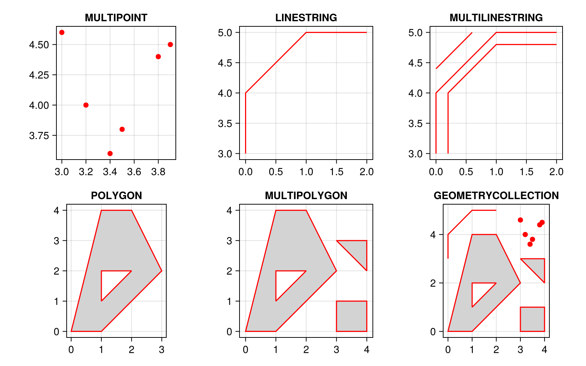
En la siguiente tabla se consolida la sintaxis para la creación de estructuras geométricas complejas. Es evidente el incremento en la profundidad de la anidación de coordenadas (uso de listas [] y tuplas () en Python; listas list() y matrices rbind() en R; y arreglos indexados [] en Julia).
| Operación geométrica | Python (shapely) 🐍 |
R (sf) 🔵 |
Julia (ArchGDAL) 🟣 |
|---|---|---|---|
MULTIPOINT |
MultiPoint([(X1,Y1), (X2,Y2)]) |
st_multipoint(rbind(c(X1,Y1),c(X2,Y2))) |
ArchGDAL.createmultipoint([(X1,Y1), (X2,Y2)]) |
LINESTRING |
LineString([(X1,Y1), (X2,Y2)]) |
st_linestring(rbind(c(X1,Y1),c(X2,Y2))) |
ArchGDAL.createlinestring([(X1,Y1), (X2,Y2)]) |
MULTILINESTRING |
MultiLineString([lin1, lin2]) |
st_multilinestring(list(lin1, lin2)) |
ArchGDAL.createmultilinestring([lin1, lin2]) |
POLYGON(Exterior + Hueco) |
Polygon(shell=ext, holes=[int1]) |
st_polygon(list(ext, int1)) |
ArchGDAL.createpolygon([ext, int1]) |
MULTIPOLYGON |
MultiPolygon([(ext, [int]),(ext2, [])]) |
st_multipolygon(list(list(ext, int),list(ext2))) |
ArchGDAL.createmultipolygon([[ext, int], [ext2]]) |
GEOMETRYCOLLECTION |
GeometryCollection([mp, pol]) |
st_geometrycollection(list(mp, pol)) |
gc = ArchGDAL.creategeom(ArchGDAL.wkbGeometryCollection)ArchGDAL.addgeom!(gc, mp) |
En la siguiente tabla se compara la manera de orquestar estructuras heterogéneas (GEOMETRYCOLLECTION) y de inicializar la interfaz gráfica del dispositivo de ploteo. Obsérvese la discrepancia fundamental en Julia para la instanciación de la colección basada intrínsecamente en el estándar C/C++ Well-Known Binary (WKB).
| Operación | Python (geopandas /matplotlib) 🐍 |
R (sf /Base Graphics) 🔵 |
Julia (ArchGDAL /CairoMakie) 🟣 |
|---|---|---|---|
GEOMETRYCOLLECTION |
GeometryCollection([p1, pol1, ls1]) |
st_geometrycollection(list(p1, pol1, ls1)) |
gc = ArchGDAL.creategeom(ArchGDAL.wkbGeometryCollection)ArchGDAL.addgeom!(gc, p1)ArchGDAL.addgeom!(gc, pol1) |
| Inicializar Lienzo Múltiple |
fig, axs = plt.subplots(filas, col,figsize=(ancho, alto)) |
par(mfrow = c(filas, col)) |
fig = Figure(size = (ancho, alto)) |
| Pintar Relleno Polígono |
gpd.GeoSeries([pol]).plot(facecolor='color') |
plot(pol,col = 'color') |
CairoMakie.poly!(ax,to_makie_poly(pol),color=:color) |
| Pintar Borde Polígono |
gpd.GeoSeries([pol]).plot(edgecolor='color') |
plot(pol,border = 'color') |
CairoMakie.poly!(ax,to_makie_poly(pol),strokecolor=:color) |
| Superponer capas | El método .plot()sobre el mismo subgráfico superpone las capas automáticamente. |
Argumento add = TRUEen la llamada a la función plot(). |
Mutar (!) sobre elmismo objeto referencial ax de Makie. |
Dado que el manejo de geometrías mixtas y polígonos perforados requiere acceder a sus componentes internos (especialmente en Julia donde el renderizado no es automático para huecos), a continuación se exponen las rutinas de inspección espacial.
| Operación | Python (shapely) 🐍 |
R (sf) 🔵 |
Julia (ArchGDAL) 🟣 |
|---|---|---|---|
| Consultar clase/tipo | type(geom) / geom.geom_type |
class(geom) |
ArchGDAL.getgeomtype(geom) |
| Conteo de sub-entidades (vértices o anillos) | len(geom.geoms) |
length(geom) |
ArchGDAL.ngeom(geom) |
| Extraer componente (índice de anillo exterior/interior) | geom.exterior / geom.interiors[i] |
geom[[i]] |
ArchGDAL.getgeom(geom, i)(Índice 0 = exterior) |
| Extraer coordenadas absolutas | Objeto nativo de lista/tupla | st_coordinates(geom) |
ArchGDAL.getx(geom, i)ArchGDAL.gety(geom, i) |
Desglose de los argumentos estéticos y las funciones de enrutamiento espacial utilizados para garantizar un renderizado coherente de los datos (simulando los estándares de visualización de entidades cartográficas).
| Configuración visual | Python (geopandas/matplotlib) 🐍 |
R (sf/Base Graphics) 🔵 |
Julia (CairoMakie) 🟣 |
|---|---|---|---|
| Matriz de subgráficos (Grid) | fig, axs = plt.subplots(filas, col, figsize=(W, H)) |
par(mfrow = c(filas, col)) |
fig = Figure(size = (W, H))ax = Axis(fig[f, c]) |
| Control de márgenes y ejes | plt.tight_layout()ax.set_xticks([]) |
par(mar = c(B, L, T, R))axes = TRUE |
ax.aspect = DataAspect()hidedecorations!(ax) |
| Encuadre geográfico (Bounding Box) | Automático por GeoPandas | Argumentos xlim=c(), ylim=c() |
Automático por CairoMakie |
| Color de relleno (Áreas) | .plot(facecolor='lightgrey') |
plot(..., col = 'lightgrey') |
poly!(..., color=:lightgray) |
| Color de trazo (Líneas y bordes) | .plot(color='red', edgecolor='red') |
plot(..., border = 'red') |
lines!(..., color=:red)poly!(..., strokecolor=:red) |
| Grosor vectorial | linewidth=1.5 |
lwd=1.5 |
linewidth=1.5 / strokewidth=1.5 |
| Simbología de puntos | markersize=25 |
pch=16, cex=1.2 |
markersize=10 |
| Superposición de capas (Z-index) | Llamadas sucesivas al mismo ax |
Llamadas sucesivas con add = TRUE |
Mutación (!) sucesiva sobre el mismo ax |
El formato WKT (Well-Known Text) es un estándar de la OGC para representar geometrías en formato de texto.
A continuación, se define un conjunto de tres lugares representativos de Colombia utilizando cadenas WKT. Se asigna un atributo de texto (Lugar), se ensambla la tabla espacial y se genera un mapa categorizado por dicho atributo, incluyendo su respectiva leyenda.
import pandas as pd
import geopandas as gpd
import matplotlib.pyplot as plt
# 1. Definición de atributos y geometrías en formato WKT
datos_wkt = {
"Lugar": ["Centro Geográfico", "Plaza de Bolívar", "Piedra del Peñol"],
"WKT": [
"POINT (-72.9553 4.0903)",
"POINT (-74.0760 4.5981)",
"POINT (-75.1792 6.2205)"
]
}
# 2. Conversión a GeoDataFrame usando from_wkt
gdf_wkt = gpd.GeoDataFrame(
datos_wkt,
geometry=gpd.GeoSeries.from_wkt(datos_wkt["WKT"]),
crs="EPSG:4326"
)
# 3. Inspección de la arquitectura espacial
print("--- Primitiva Geométrica (Registro 0) ---")--- Primitiva Geométrica (Registro 0) ---print(gdf_wkt.geometry[0])POINT (-72.9553 4.0903)print(type(gdf_wkt.geometry[0]), "\n")<class 'shapely.geometry.point.Point'> print("--- Columna de Geometría ---")--- Columna de Geometría ---print(gdf_wkt.geometry)0 POINT (-72.9553 4.0903)
1 POINT (-74.076 4.5981)
2 POINT (-75.1792 6.2205)
Name: geometry, dtype: geometryprint(type(gdf_wkt.geometry), "\n")<class 'geopandas.geoseries.GeoSeries'> print("--- Estructura de la Tabla ---")--- Estructura de la Tabla ---print(gdf_wkt) Lugar WKT geometry
0 Centro Geográfico POINT (-72.9553 4.0903) POINT (-72.9553 4.0903)
1 Plaza de Bolívar POINT (-74.0760 4.5981) POINT (-74.076 4.5981)
2 Piedra del Peñol POINT (-75.1792 6.2205) POINT (-75.1792 6.2205)print(type(gdf_wkt), "\n")<class 'geopandas.geodataframe.GeoDataFrame'> # 4. Visualización categorizada por el atributo 'Lugar'
fig, ax = plt.subplots(figsize=(8, 6))
gdf_wkt.plot(
ax=ax,
column="Lugar",
legend=True,
markersize=100,
cmap="Set1"
)
ax.set_title("Lugares Representativos - Colombia (WKT)")
ax.set_xlabel("Longitud")
ax.set_ylabel("Latitud")
plt.show()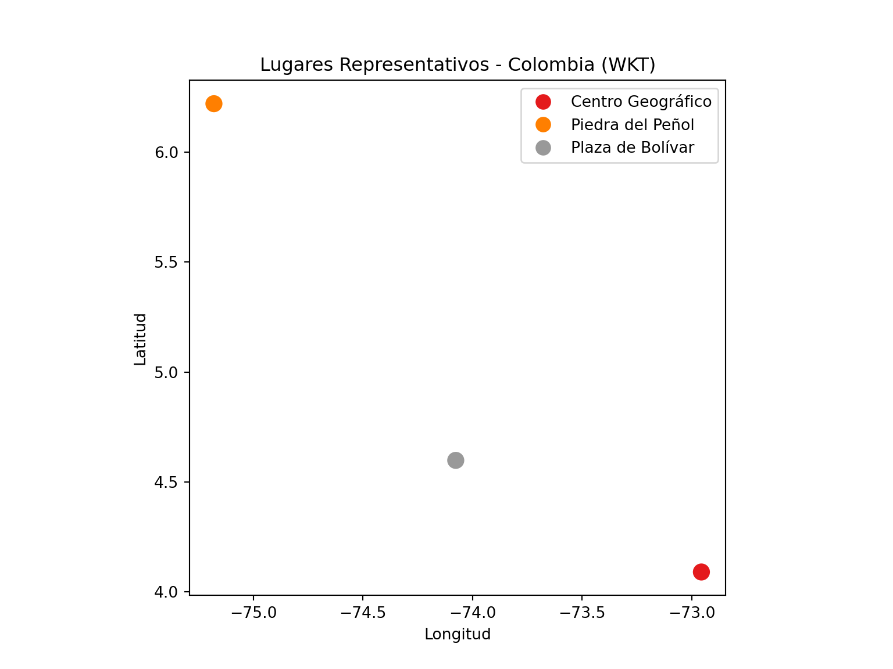
library(sf)
# 1. Definición de vectores de atributos y cadenas WKT
lugares <- c("Centro Geográfico", "Plaza de Bolívar", "Piedra del Peñol")
wkt_cadenas <- c(
"POINT (-72.9553 4.0903)",
"POINT (-74.0760 4.5981)",
"POINT (-75.1792 6.2205)"
)
# 2. Construcción de la jerarquía espacial
geom_sfc <- st_as_sfc(wkt_cadenas, crs = 4326)
gdf_wkt <- st_sf(Lugar = lugares, geometry = geom_sfc)
# 3. Inspección de la arquitectura espacial
print("--- Primitiva Geométrica ---")[1] "--- Primitiva Geométrica ---"print(geom_sfc[[1]])POINT (-72.9553 4.0903)print(class(geom_sfc[[1]]))[1] "XY" "POINT" "sfg" print("--- Columna de Geometría ---")[1] "--- Columna de Geometría ---"print(gdf_wkt$geometry)Geometry set for 3 features
Geometry type: POINT
Dimension: XY
Bounding box: xmin: -75.1792 ymin: 4.0903 xmax: -72.9553 ymax: 6.2205
Geodetic CRS: WGS 84POINT (-72.9553 4.0903)POINT (-74.076 4.5981)POINT (-75.1792 6.2205)print(class(gdf_wkt$geometry))[1] "sfc_POINT" "sfc" print("--- Estructura de la Tabla ---")[1] "--- Estructura de la Tabla ---"print(gdf_wkt)Simple feature collection with 3 features and 1 field
Geometry type: POINT
Dimension: XY
Bounding box: xmin: -75.1792 ymin: 4.0903 xmax: -72.9553 ymax: 6.2205
Geodetic CRS: WGS 84
Lugar geometry
1 Centro Geográfico POINT (-72.9553 4.0903)
2 Plaza de Bolívar POINT (-74.076 4.5981)
3 Piedra del Peñol POINT (-75.1792 6.2205)print(class(gdf_wkt))[1] "sf" "data.frame"# 4. Visualización gráfica categorizada
plot(
gdf_wkt["Lugar"],
main = "Lugares Representativos - Colombia (WKT)",
pch = 16,
cex = 2,
axes = TRUE,
key.pos = 4
)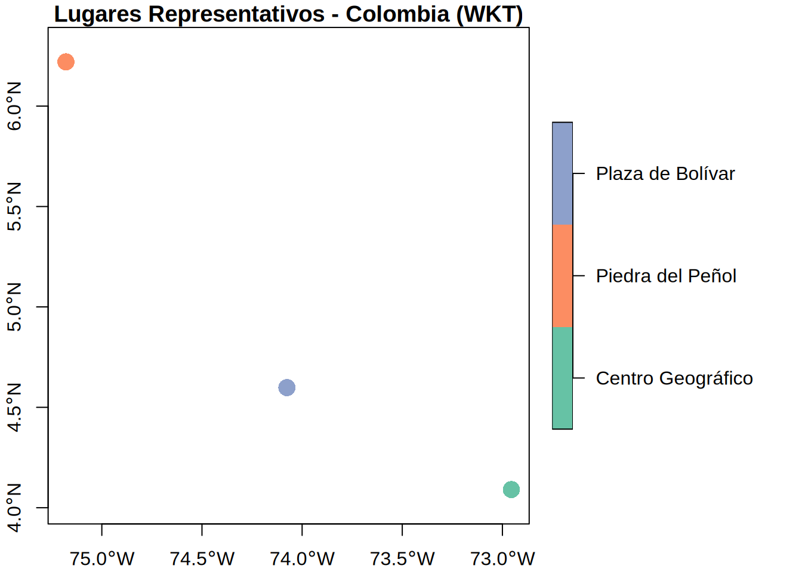
j_eval('
using ArchGDAL
using DataFrames
using Plots
# 1. Definición de vectores base
lugares = ["Centro Geográfico", "Plaza de Bolívar", "Piedra del Peñol"]
wkt_cadenas = [
"POINT (-72.9553 4.0903)",
"POINT (-74.0760 4.5981)",
"POINT (-75.1792 6.2205)"
]
# 2. Conversión vectorial a primitivas IGeometry
geometrias = ArchGDAL.fromWKT.(wkt_cadenas)
# Ensamblaje de la tabla espacial
df_wkt = DataFrame(Lugar = lugares, geometry = geometrias)
# 3. Inspección de la arquitectura espacial
println("--- Primitiva Geométrica ---")
println("Tipo: ", typeof(geometrias[1]))
println("\\n--- Columna de Geometría ---")
println("Tipo: ", typeof(df_wkt.geometry))
println("\\n--- Estructura de la Tabla ---")
println("Tipo: ", typeof(df_wkt))
# 4. Visualización gráfica y exportación
x_coords = ArchGDAL.getx.(df_wkt.geometry, 0)
y_coords = ArchGDAL.gety.(df_wkt.geometry, 0)
p = Plots.scatter(
x_coords, y_coords,
group = df_wkt.Lugar,
title = "Lugares Representativos (WKT)",
xlabel = "Longitud", ylabel = "Latitud",
markersize = 8, aspect_ratio = :equal,
legend = :outertopright
)
Plots.savefig(p, "images/c14_plot_wkt_lugares_julia.png")
')julia> using ArchGDAL
julia> using DataFrames
julia> using Plots
julia> # 1. Definición de vectores base
julia> lugares = ["Centro Geográfico", "Plaza de Bolívar", "Piedra del Peñol"]
3-element Vector{String}:
"Centro Geográfico"
"Plaza de Bolívar"
"Piedra del Peñol"
julia> wkt_cadenas = [ "POINT (-72.9553 4.0903)", "POINT (-74.0760 4.5981)", "POINT (-75.1792 6.2205)" ]
3-element Vector{String}:
"POINT (-72.9553 4.0903)"
"POINT (-74.0760 4.5981)"
"POINT (-75.1792 6.2205)"
julia> # 2. Conversión vectorial a primitivas IGeometry
julia> geometrias = ArchGDAL.fromWKT.(wkt_cadenas)
3-element Vector{ArchGDAL.IGeometry{ArchGDAL.wkbPoint}}:
Geometry: POINT (-72.9553 4.0903)
Geometry: POINT (-74.076 4.5981)
Geometry: POINT (-75.1792 6.2205)
julia> # Ensamblaje de la tabla espacial
julia> df_wkt = DataFrame(Lugar = lugares, geometry = geometrias)
3×2 DataFrame
Row │ Lugar geometry
│ String IGeometr…
─────┼───────────────────────────────────────
1 │ Centro Geográfico Geometry: wkbPoint
2 │ Plaza de Bolívar Geometry: wkbPoint
3 │ Piedra del Peñol Geometry: wkbPoint
julia> # 3. Inspección de la arquitectura espacial
julia> println("--- Primitiva Geométrica ---")
--- Primitiva Geométrica ---
julia> println("Tipo: ", typeof(geometrias[1]))
Tipo: ArchGDAL.IGeometry{ArchGDAL.wkbPoint}
julia> println("\n--- Columna de Geometría ---")
--- Columna de Geometría ---
julia> println("Tipo: ", typeof(df_wkt.geometry))
Tipo: Vector{ArchGDAL.IGeometry{ArchGDAL.wkbPoint}}
julia> println("\n--- Estructura de la Tabla ---")
--- Estructura de la Tabla ---
julia> println("Tipo: ", typeof(df_wkt))
Tipo: DataFrame
julia> # 4. Visualización gráfica y exportación
julia> x_coords = ArchGDAL.getx.(df_wkt.geometry, 0)
3-element Vector{Float64}:
-72.9553
-74.076
-75.1792
julia> y_coords = ArchGDAL.gety.(df_wkt.geometry, 0)
3-element Vector{Float64}:
4.0903
4.5981
6.2205
julia> p = Plots.scatter( x_coords, y_coords, group = df_wkt.Lugar, title = "Lugares Representativos (WKT)", xlabel = "Longitud", ylabel = "Latitud", markersize = 8, aspect_ratio = :equal, legend = :outertopright )
julia> Plots.savefig(p, "images/c14_plot_wkt_lugares_julia.png")
"/home/rstudio/work/01_prog_sig/images/c14_plot_wkt_lugares_julia.png"
knitr::include_graphics("images/c14_plot_wkt_lugares_julia.png")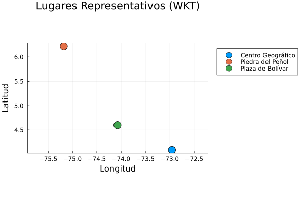
| Operación | Python (geopandas) 🐍 |
R (sf) 🔵 |
Julia (ArchGDAL + Plots) 🟣 |
|---|---|---|---|
| Conversión WKT | gpd.GeoSeries.from_wkt(lista_wkt) |
st_as_sfc(vector_wkt) |
ArchGDAL.fromWKT.(arreglo_wkt) |
| Integración Tabla | gpd.GeoDataFrame(df, geometry=geom) |
st_sf(df, geometry = geom) |
DataFrame(df, geometry = geom) |
| Plot categórico | gdf.plot(column="Attr", legend=True) |
plot(gdf["Attr"]) |
Nativo: scatter(x, y, group=df.Attr)StatsPlots: @df df scatter(x, y, group=:Attr) |
El formato WKT no se limita exclusivamente a la definición de puntos individuales. Su versatilidad estructural permite codificar geometrías de mayor dimensionalidad y complejidad topológica, tales como líneas, polígonos, y colecciones de estas primitivas, utilizando una sintaxis anidada mediante paréntesis.
A continuación, se estructuran tres representaciones geográficas en Colombia utilizando WKT: una sede universitaria particionada (Multipunto), el trazo de un río (Línea) y los límites simplificados de una reserva natural (Polígono). Estos objetos disímiles se consolidan en una única tabla espacial para su renderizado simultáneo.
import pandas as pd
import geopandas as gpd
import matplotlib.pyplot as plt
# 1. Definición de atributos y geometrías complejas en formato WKT
# Se modelan tres entidades representativas del territorio colombiano
datos_wkt = {
"Entidad": ["Sedes UNAL Bogotá (MultiPoint)", "Tramo Río Magdalena (LineString)", "PNN Chingaza (Polygon)"],
"WKT": [
"MULTIPOINT (-74.0990 4.6386, -74.0830 4.6360)",
"LINESTRING (-74.7700 5.2000, -74.7000 5.5000, -74.6500 5.8000)",
"POLYGON ((-73.8000 4.7000, -73.6000 4.7000, -73.6000 4.5000, -73.8000 4.5000, -73.8000 4.7000))"
]
}
# 2. Conversión a GeoDataFrame usando from_wkt
# El método from_wkt interpreta la cadena de texto y construye la topología vectorial sin importar su dimensionalidad
gdf_complejo = gpd.GeoDataFrame(
datos_wkt,
geometry=gpd.GeoSeries.from_wkt(datos_wkt["WKT"]),
crs="EPSG:4326"
)
# 3. Inspección de la arquitectura espacial
print("--- Estructura de la Tabla con Multigeometrías ---")--- Estructura de la Tabla con Multigeometrías ---print(gdf_complejo) Entidad ... geometry
0 Sedes UNAL Bogotá (MultiPoint) ... MULTIPOINT ((-74.099 4.6386), (-74.083 4.636))
1 Tramo Río Magdalena (LineString) ... LINESTRING (-74.77 5.2, -74.7 5.5, -74.65 5.8)
2 PNN Chingaza (Polygon) ... POLYGON ((-73.8 4.7, -73.6 4.7, -73.6 4.5, -73...
[3 rows x 3 columns]print("\n--- Tipos geométricos generados ---")
--- Tipos geométricos generados ---print(gdf_complejo.geom_type)0 MultiPoint
1 LineString
2 Polygon
dtype: object# 4. Visualización categorizada por el atributo 'Entidad'
fig, ax = plt.subplots(figsize=(8, 6))
# La función plot de GeoPandas discrimina automáticamente cómo dibujar áreas, líneas y puntos
gdf_complejo.plot(
ax=ax,
column="Entidad", # Columna de categorización cromática
legend=True, # Despliegue automático de la leyenda
cmap="Dark2", # Paleta de colores para elementos categóricos
linewidth=2, # Grosor de visualización para líneas y bordes
markersize=80 # Diámetro de visualización para puntos
)
# Activar la Grilla
ax.grid(True)
# Personaliar la Grilla
ax.grid(
True,
linestyle="--",
linewidth=0.5,
alpha=0.7
)
# Espaciado entre líneas de la grilla
import matplotlib.ticker as ticker
# Cada 0.5 grados
ax.xaxis.set_major_locator(ticker.MultipleLocator(0.5))
ax.yaxis.set_major_locator(ticker.MultipleLocator(0.5))
ax.set_title("Multigeometrías en Colombia (WKT)")
ax.set_xlabel("Longitud")
ax.set_ylabel("Latitud")
plt.show()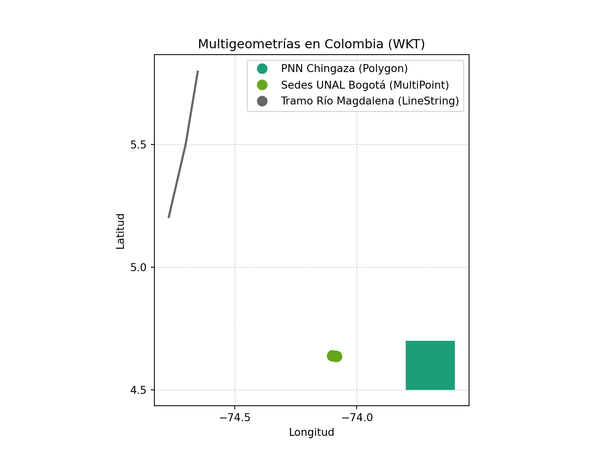
library(sf)
# 1. Definición de vectores de atributos y cadenas WKT complejas
entidades <- c("Sedes UNAL Bogotá (MultiPoint)", "Tramo Río Magdalena (LineString)", "PNN Chingaza (Polygon)")
wkt_complejos <- c(
"MULTIPOINT (-74.0990 4.6386, -74.0830 4.6360)",
"LINESTRING (-74.7700 5.2000, -74.7000 5.5000, -74.6500 5.8000)",
"POLYGON ((-73.8000 4.7000, -73.6000 4.7000, -73.6000 4.5000, -73.8000 4.5000, -73.8000 4.7000))"
)
# 2. Construcción de la jerarquía espacial multigeométrica
# st_as_sfc procesa de forma transparente diferentes tipos WKT en una misma columna de lista geométrica (sfc)
geom_compleja_sfc <- st_as_sfc(wkt_complejos, crs = 4326)
# Ensamblaje del objeto sf final uniendo atributos a la columna geométrica
gdf_complejo <- st_sf(Entidad = entidades, geometry = geom_compleja_sfc)
# 3. Inspección de la arquitectura espacial
print("--- Estructura de la Tabla con Multigeometrías ---")[1] "--- Estructura de la Tabla con Multigeometrías ---"print(gdf_complejo)Simple feature collection with 3 features and 1 field
Geometry type: GEOMETRY
Dimension: XY
Bounding box: xmin: -74.77 ymin: 4.5 xmax: -73.6 ymax: 5.8
Geodetic CRS: WGS 84
Entidad geometry
1 Sedes UNAL Bogotá (MultiPoint) MULTIPOINT ((-74.099 4.6386...
2 Tramo Río Magdalena (LineString) LINESTRING (-74.77 5.2, -74...
3 PNN Chingaza (Polygon) POLYGON ((-73.8 4.7, -73.6 ...# 4. Aumentar márgenes del gráfico
# El vector es:
# c(abajo, izquierda, arriba, derecha)
# c(bottom, left, top, right)
# Recuarda la palabra BoLsTeR (reforzar)
par(mar = c(5, 4, 6, 2))
# 5. Visualización gráfica categorizada
# El plot nativo mapea el factor cromático según los valores de la columna referenciada
plot(
gdf_complejo["Entidad"],
main = "Multigeometrías en Colombia (WKT)",
cex.main = 0.9, # Tamaño de título más pequeño
pch = 16, # Código de símbolo sólido para geometrías MultiPoint
cex = 1.5, # Escala de renderizado del símbolo
lwd = 2, # Grosor aplicable a trazados LineString y contornos Polygon
axes = TRUE, # Habilitar reglas de coordenadas cartesianas X/Y
graticule = st_graticule(lon = seq(-75.0, -73.0, by = 0.5), lat = seq(4.0, 6.0, by = 0.5)), # Control de espaciado en X y Y
key.pos = 4 # Instrucción paramétrica para situar la leyenda a la derecha
)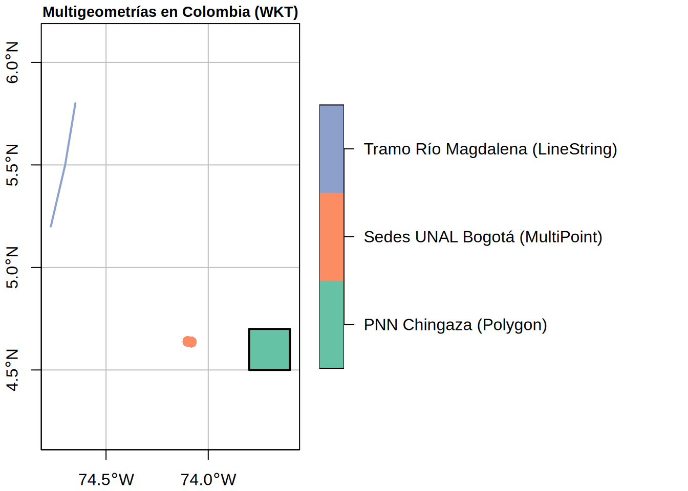
j_eval('
using ArchGDAL
using DataFrames
using Plots
# 1. Definición de vectores base con delimitaciones WKT complejas
entidades = ["Sedes UNAL Bogotá (MultiPoint)", "Tramo Río Magdalena (LineString)", "PNN Chingaza (Polygon)"]
wkt_complejos = [
"MULTIPOINT (-74.0990 4.6386, -74.0830 4.6360)",
"LINESTRING (-74.7700 5.2000, -74.7000 5.5000, -74.6500 5.8000)",
"POLYGON ((-73.8000 4.7000, -73.6000 4.7000, -73.6000 4.5000, -73.8000 4.5000, -73.8000 4.7000))"
]
# 2. Conversión vectorial a primitivas IGeometry abstractas
geometrias = ArchGDAL.fromWKT.(wkt_complejos)
# Ensamblaje de la tabla espacial
df_complejo = DataFrame(Entidad = entidades, geometry = geometrias)
# 3. Inspección de la arquitectura espacial y tipología
println("--- Estructura de la Tabla ---")
println(df_complejo)
println("\\n--- Clases geométricas detectadas ---")
for g in df_complejo.geometry
println(typeof(g))
end
# 4. Visualización gráfica iterativa
# Se inicializa el lienzo global estipulando los parámetros base
p = Plots.plot(
title = "Multigeometrías en Colombia (WKT)",
xlabel = "Longitud", ylabel = "Latitud",
aspect_ratio = :equal,
legend = :outertopright,
grid = true, # Activar la visualización de la grilla
gridstyle = :dash, # Establecer el tipo de línea (intermitente)
gridlinewidth = 0.5, # Fijar el grosor geométrico de la grilla
gridalpha = 0.7, # Ajustar el canal de opacidad (transparencia)
xticks = -75.0:0.5:-73.0, # Definir marcas paramétricas cada 0.5 grados en X
yticks = 4.0:0.5:6.0 # Definir marcas paramétricas cada 0.5 grados en Y
)
for i in 1:nrow(df_complejo)
Plots.plot!(
p, df_complejo.geometry[i],
label = df_complejo.Entidad[i],
linewidth = 2,
markersize = 6
)
end
Plots.savefig(p, "images/c14_plot_wkt_multigeom_julia.png")
')julia> using ArchGDAL
julia> using DataFrames
julia> using Plots
julia> # 1. Definición de vectores base con delimitaciones WKT complejas
julia> entidades = ["Sedes UNAL Bogotá (MultiPoint)", "Tramo Río Magdalena (LineString)", "PNN Chingaza (Polygon)"]
3-element Vector{String}:
"Sedes UNAL Bogotá (MultiPoint)"
"Tramo Río Magdalena (LineString)"
"PNN Chingaza (Polygon)"
julia> wkt_complejos = [ "MULTIPOINT (-74.0990 4.6386, -74.0830 4.6360)", "LINESTRING (-74.7700 5.2000, -74.7000 5.5000, -74.6500 5.8000)", "POLYGON ((-73.8000 4.7000, -73.6000 4.7000, -73.6000 4.5000, -73.8000 4.5000, -73.8000 4.7000))" ]
3-element Vector{String}:
"MULTIPOINT (-74.0990 4.6386, -74.0830 4.6360)"
"LINESTRING (-74.7700 5.2000, -74.7000 5.5000, -74.6500 5.8000)"
"POLYGON ((-73.8000 4.7000, -73.6000 4.7000, -73.6000 4.5000, -73.8000 4.5000, -73.8000 4.7000))"
julia> # 2. Conversión vectorial a primitivas IGeometry abstractas
julia> geometrias = ArchGDAL.fromWKT.(wkt_complejos)
3-element Vector{ArchGDAL.IGeometry}:
Geometry: MULTIPOINT (-74.099 4.6386,-74.083 4.636)
Geometry: LINESTRING (-74.77 5.2,-74.7 5.5,-74.65 5.8)
Geometry: POLYGON ((-73.8 4.7,-73.6 4.7,-73.6 4.5,-73.8 4.5, ... 4.7))
julia> # Ensamblaje de la tabla espacial
julia> df_complejo = DataFrame(Entidad = entidades, geometry = geometrias)
3×2 DataFrame
Row │ Entidad geometry
│ String IGeometry
─────┼───────────────────────────────────────────────────────────
1 │ Sedes UNAL Bogotá (MultiPoint) Geometry: wkbMultiPoint
2 │ Tramo Río Magdalena (LineString) Geometry: wkbLineString
3 │ PNN Chingaza (Polygon) Geometry: wkbPolygon
julia> # 3. Inspección de la arquitectura espacial y tipología
julia> println("--- Estructura de la Tabla ---")
--- Estructura de la Tabla ---
julia> println(df_complejo)
3×2 DataFrame
Row │ Entidad geometry
│ String IGeometry
─────┼───────────────────────────────────────────────────────────
1 │ Sedes UNAL Bogotá (MultiPoint) Geometry: wkbMultiPoint
2 │ Tramo Río Magdalena (LineString) Geometry: wkbLineString
3 │ PNN Chingaza (Polygon) Geometry: wkbPolygon
julia> println("\n--- Clases geométricas detectadas ---")
--- Clases geométricas detectadas ---
julia> for g in df_complejo.geometry println(typeof(g)) end
ArchGDAL.IGeometry{ArchGDAL.wkbMultiPoint}
ArchGDAL.IGeometry{ArchGDAL.wkbLineString}
ArchGDAL.IGeometry{ArchGDAL.wkbPolygon}
julia> # 4. Visualización gráfica iterativa
julia> # Se inicializa el lienzo global estipulando los parámetros base
julia> p = Plots.plot( title = "Multigeometrías en Colombia (WKT)", xlabel = "Longitud", ylabel = "Latitud", aspect_ratio = :equal, legend = :outertopright, grid = true, # Activar la visualización de la grilla gridstyle = :dash, # Establecer el tipo de línea (intermitente) gridlinewidth = 0.5, # Fijar el grosor geométrico de la grilla gridalpha = 0.7, # Ajustar el canal de opacidad (transparencia) xticks = -75.0:0.5:-73.0, # Definir marcas paramétricas cada 0.5 grados en X yticks = 4.0:0.5:6.0 # Definir marcas paramétricas cada 0.5 grados en Y )
julia> for i in 1:nrow(df_complejo) Plots.plot!( p, df_complejo.geometry[i], label = df_complejo.Entidad[i], linewidth = 2, markersize = 6 ) end
julia> Plots.savefig(p, "images/c14_plot_wkt_multigeom_julia.png")
"/home/rstudio/work/01_prog_sig/images/c14_plot_wkt_multigeom_julia.png"
knitr::include_graphics("images/c14_plot_wkt_multigeom_julia.png")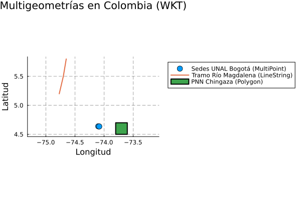
En la siguiente tabla se detalla el esquema textual OGC necesario para la definición de clases vectoriales de dimensión superior utilizando Well-Known Text. El patrón de anidamiento de paréntesis refleja la jerarquía dimensional interna (ej. listas de listas).
| Tipo espacial WKT | Convención estructural de la cadena |
|---|---|
MULTIPOINT |
"MULTIPOINT (X1 Y1, X2 Y2, ...)" |
LINESTRING |
"LINESTRING (X1 Y1, X2 Y2, ...)" |
MULTILINESTRING |
"MULTILINESTRING ((X1 Y1, ...), (Xn Yn, ...))" |
POLYGON |
"POLYGON ((X1 Y1, ..., X1 Y1), (Xn Yn, ..., Xn Yn))"(Nota: El primer anillo es exterior; los consecutivos son huecos. Todos deben cerrarse). |
MULTIPOLYGON |
"MULTIPOLYGON (((X1 Y1, ...)), ((Xn Yn, ...)))" |
Para el control cartográfico de precisión en la visualización de geometrías, se aplican rutinas específicas en cada lenguaje que permiten gobernar la densidad de la cuadrícula (graticule) y los intervalos de las marcas de coordenadas (ticks).
| Operación gráfica | Python (matplotlib) 🐍 |
R (sf) 🔵 |
Julia (Plots) 🟣 |
|---|---|---|---|
| Activar y dar formato a la grilla | ax.grid(True,linestyle="--",linewidth=0.5,alpha=0.7) |
Atributo integrado en la función st_graticule() |
plot(..., grid=true,gridstyle=:dash,gridlinewidth=0.5,gridalpha=0.7) |
| Control de espaciado (Marcas / Ticks) | import matplotlib.ticker as tkrax.xaxis.set_major_locator(tkr.MultipleLocator(0.5)) |
plot(...,graticule = st_graticule(lon = seq(-75, -73, by=0.5),lat = seq(4, 6, by=0.5))) |
plot(...,xticks = -75.0:0.5:-73.0,yticks = 4.0:0.5:6.0) |
Aunque la mayoría de los análisis SIG se realizan en un plano bidimensional (XY), el estándar Simple Features permite integrar dimensiones adicionales para representar la complejidad del mundo real:
Esto genera cuatro combinaciones posibles: XY, XYZ, XYM y XYZM.
La Referenciación Lineal (LRS) es un método de localización que sitúa elementos geográficos basándose en su posición relativa a lo largo de un eje lineal medido, en lugar de depender exclusivamente de coordenadas cartesianas \((X, Y)\). Este paradigma es esencial en la gestión de infraestructuras (carreteras, tuberías) y redes hídricas, donde el concepto de Segmentación Dinámica permite asociar múltiples atributos a porciones de una vía sin necesidad de fragmentar físicamente la geometría base.
knitr::include_graphics("images/c14_plot_segmentacion_dinamica_julia.png")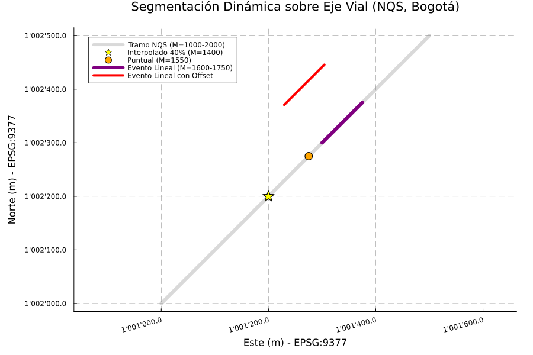
En este modelo, la información se almacena a través de eventos: los eventos puntuales marcan hitos en una medida específica (ej. un bache en el km 15.2), mientras que los eventos lineales describen tramos definidos por una medida de inicio y una de fin (ej. un cambio de pavimento entre el km 20 y el km 45). Para que este sistema funcione, la geometría debe soportar una cuarta dimensión denominada eje \(M\) (Medida), que almacena el kilometraje acumulado independientemente de la longitud euclidiana del dibujo.
En el ecosistema de Python, la manipulación de dimensiones adicionales presenta una dualidad técnica. Por un lado, Shapely (la librería estándar) es sumamente eficiente para geometrías 2D y 3D (\(XYZ\)), pero carece de un eje \(M\) (Medida) nativo. Para suplir esto en análisis de Referenciación Lineal (LRS), es una práctica común “secuestrar” el eje \(Z\) para almacenar valores de medida o kilometraje.
Por otro lado, cuando se requiere un soporte estricto de cuatro dimensiones (\(XYZM\)), debemos recurrir a OGR (GDAL). OGR es un motor de bajo nivel que permite la persistencia de atributos escalares (Medida) vinculados directamente a la geometría, cumpliendo con el estándar ISO de Simple Features.
# =============================================================================
# MANEJO DE DIMENSIONES EN PYTHON: SHAPELY (3D) VS. OGR (4D)
# =============================================================================
from shapely.geometry import Point, LineString
from osgeo import ogr
# -----------------------------------------------------------------------------
# OPCIÓN A: Usando Shapely (Estándar para 2D y 3D / XYZ)
# -----------------------------------------------------------------------------
# 1. Creación de puntos con diferentes dimensiones
p_2d = Point(10, 20) # Plano XY
p_3d = Point(1001200.0, 1002300.0, 2560.0) # XYZ (Edificio 401 UNAL)
# 2. Inspección: Shapely usa el booleano 'has_z' para detectar la 3ra dimensión
print(f"Punto 2D: {p_2d} | ¿Tiene Z?: {p_2d.has_z}")Punto 2D: POINT (10 20) | ¿Tiene Z?: Falseprint(f"Punto 3D: {p_3d} | ¿Tiene Z?: {p_3d.has_z}")Punto 3D: POINT Z (1001200 1002300 2560) | ¿Tiene Z?: True# 3. Acceso: Si existe Z, se accede directamente como atributo
if p_3d.has_z:
print(f"Elevación extraída: {p_3d.z} msnm")Elevación extraída: 2560.0 msnm# 4. Segmentación Dinámica (Interpolación Lineal)
# NOTA: Usamos el eje Z como "M" (Medida) ya que Shapely no tiene eje M nativo.
# Tramo NQS: Km 1.0 (1000m) a Km 2.0 (2000m)
ruta_nqs = LineString([
(1001000, 1002000, 1000),
(1001500, 1002500, 2000)
])
# Ubicar un punto al 40% del recorrido (normalized=True para usar 0.0 a 1.0)
punto_interp = ruta_nqs.interpolate(0.4, normalized=True)
print(f"Posición al 40%: {punto_interp}")Posición al 40%: POINT Z (1001200 1002200 1400)print(f"Valor M (vía eje Z) interpolado: {punto_interp.z}") # Resultado: 1400.0Valor M (vía eje Z) interpolado: 1400.0# -----------------------------------------------------------------------------
# OPCIÓN B: OGR para 3D (El "puente" hacia el bajo nivel)
# -----------------------------------------------------------------------------
# wkbPoint25D es la constante de OGR para representar XYZ (2.5 dimensiones)
punto_3d_ogr = ogr.Geometry(ogr.wkbPoint25D)
punto_3d_ogr.AddPoint(1001200, 1002300, 2560)0# Ver la caja de memoria:
punto_3d_ogr<osgeo.ogr.Geometry; proxy of <Swig Object of type 'OGRGeometryShadow *' at 0x725dd4e28150> ># Para ver el contenido:
print(punto_3d_ogr.ExportToWkt())POINT (1001200 1002300 2560)# Resultado: POINT (1001200 1002300 2560)
# O para extraer las coordenadas como una tupla:
print(punto_3d_ogr.GetPoint())(1001200.0, 1002300.0, 2560.0)# Resultado: (1001200.0, 1002300.0, 2560.0)
# -----------------------------------------------------------------------------
# OPCIÓN C: OGR para 4D (XYZM) - Carga desde WKT
# -----------------------------------------------------------------------------
# El estándar WKT ISO requiere el prefijo "ZM" para habilitar la 4ta dimensión
wkt_bogota = "POINT ZM (1001200 1002300 2560 10.5)"
punto_4d = ogr.CreateGeometryFromWkt(wkt_bogota)
print(f"\n--- Análisis XYZM (OGR) ---")
--- Análisis XYZM (OGR) ---print(f"Dimensión espacial (X,Y,Z): {punto_4d.GetCoordinateDimension()}")Dimensión espacial (X,Y,Z): 3print(f"¿Tiene medida M registrada?: {punto_4d.IsMeasured()}")¿Tiene medida M registrada?: 1# ExportToIsoWkt() es vital para ver 'ZM' en el texto de salida
print(f"WKT ISO (Formato Correcto): {punto_4d.ExportToIsoWkt()}")WKT ISO (Formato Correcto): POINT ZM (1001200 1002300 2560 10.5)# Extracción individual de componentes
print(f"Z (Altitud): {punto_4d.GetZ()} | M (Medida LRS): {punto_4d.GetM()}")Z (Altitud): 2560.0 | M (Medida LRS): 10.5# -----------------------------------------------------------------------------
# OPCIÓN D: La forma infalible para 4D en Python (WKT dinámico)
# -----------------------------------------------------------------------------
from osgeo import ogr
# En lugar de pelear con AddPoint, construimos la cadena de texto (WKT)
x, y, z, m = 1001200.0, 1002300.0, 2560.0, 10.5
wkt_dinamico = f"POINT ZM ({x} {y} {z} {m})"
# El motor de OGR parsea el ZM sin quejarse de los argumentos
otro_punto_4d = ogr.CreateGeometryFromWkt(wkt_dinamico)
# Verificación
print(f"WKT ISO: {otro_punto_4d.ExportToIsoWkt()}")WKT ISO: POINT ZM (1001200 1002300 2560 10.5)print(f"Tipo OGR detectado: {otro_punto_4d.GetGeometryName()}")Tipo OGR detectado: POINTprint(f"Z recuperada con éxito: {otro_punto_4d.GetZ()}")Z recuperada con éxito: 2560.0print(f"M recuperada con éxito: {otro_punto_4d.GetM()}")M recuperada con éxito: 10.5En la gestión vial, muchos eventos no ocurren sobre el eje central (p. ej., señales, andenes o fallas en berma). Para representar esto gráficamente, utilizamos el concepto de Offset. En Shapely, offset_curve genera una geometría paralela a una distancia determinada; un valor positivo desplaza la línea hacia la izquierda del sentido de digitalización, permitiendo separar visualmente los eventos del eje de referencia vial.
Para cumplir con los estándares cartográficos colombianos (IGAC), el siguiente código formatea los ejes utilizando la comilla (') como separador de miles y un punto para decimales, garantizando legibilidad en coordenadas de gran magnitud.
import matplotlib.pyplot as plt
import matplotlib.ticker as ticker
from shapely.geometry import Point, LineString
import numpy as np
# 1. Definición de la geometría base (Tramo NQS en Bogotá)
# Coordenadas en EPSG:9377. Se incluye la medida M (en el eje Z) de 1000m a 2000m.
coords_nqs = [(1001000, 1002000, 1000), (1001500, 1002500, 2000)]
ruta_nqs = LineString(coords_nqs)
# 2. Definición de parámetros para referenciación lineal
m_inicio, m_fin = 1000, 2000
rango_m = m_fin - m_inicio
# Evento A: Interpolación al 40% del recorrido (Abscisa M=1400)
# normalized=True permite usar una escala de 0 a 1 independientemente de la longitud real
punto_interp = ruta_nqs.interpolate(0.4, normalized=True)
# Evento B: Evento puntual específico en la abscisa K1+550 (M=1550)
# Se calcula la fracción relativa: (M_deseado - M_inicial) / Rango_total
frac_puntual = (1550 - m_inicio) / rango_m
punto_evento_puntual = ruta_nqs.interpolate(frac_puntual, normalized=True)
# Evento C: Evento lineal (segmento) entre K1+600 y K1+750
f_ini = (1600 - m_inicio) / rango_m
f_fin = (1750 - m_inicio) / rango_m
segmento_evento_lineal = LineString([
ruta_nqs.interpolate(f_ini, normalized=True),
ruta_nqs.interpolate(f_fin, normalized=True)
])
# Ejemplo: Desplazar el evento 100 unidades a la izquierda de la vía
#En Shapely 2.0+, se recomienda usar .offset_curve(distancia) ya que parallel_offset está siendo deprecado. Si la distancia es positiva, el offset es a la izquierda; si es negativa, a la derecha.
segmento_offset = segmento_evento_lineal.offset_curve(100)
# 3. Configuración de la visualización cartográfica
fig, ax = plt.subplots(figsize=(10, 6))
# Definición de formateador para etiquetas de coordenadas (Estilo IGAC: 1'000.000)
def format_coordenadas(x, pos):
return "{:,.1f}".format(x).replace(",", "'")
# Aplicación del formateador a los ejes X y Y
ax.xaxis.set_major_formatter(ticker.FuncFormatter(format_coordenadas))
ax.yaxis.set_major_formatter(ticker.FuncFormatter(format_coordenadas))
# Renderizado de la ruta base (Tramo NQS)
x_b, y_b = ruta_nqs.xy
ax.plot(x_b, y_b, color='grey', linewidth=3, alpha=0.3, label='Tramo NQS (M=1000-2000)')
# Renderizado de eventos puntuales con simbología diferenciada
ax.plot(punto_interp.x, punto_interp.y, '*', color='yellow', ms=12, label='Interpolado 40% (M=1400)')
ax.plot(punto_evento_puntual.x, punto_evento_puntual.y, 'o', color='orange', ms=10, label='Puntual (M=1550)')
# Renderizado del evento lineal con realce visual (Grosor aumentado)
x_l, y_l = segmento_evento_lineal.xy
ax.plot(x_l, y_l, color='purple', linewidth=6, label='Evento Lineal con Offset (M=1600-1750)')
# Renderizado del evento lineal con offset con realce
xo_l, yo_l = segmento_offset.xy
ax.plot(xo_l, yo_l, color='red', linewidth=4, label='Evento Lineal con Offset (M=1600-1750)')
# Ajustes de anotación y cuadrícula
ax.set_title('Segmentación Dinámica sobre Eje Vial (NQS, Bogotá)', fontsize=14)
ax.set_xlabel('Este (m) - EPSG:9377', fontsize=12)
ax.set_ylabel('Norte (m) - EPSG:9377', fontsize=12)
ax.legend(loc='upper left')
ax.grid(True, linestyle='--', alpha=0.5)
ax.axis('equal') # Garantiza que la escala sea 1:1(np.float64(1000975.0), np.float64(1001525.0), np.float64(1001975.0), np.float64(1002525.0))# Rotación de etiquetas para mejorar legibilidad
plt.xticks(rotation=15)(array([1000900., 1001000., 1001100., 1001200., 1001300., 1001400.,
1001500., 1001600.]), [Text(1000900.0, 0, "1'000'900.0"), Text(1001000.0, 0, "1'001'000.0"), Text(1001100.0, 0, "1'001'100.0"), Text(1001200.0, 0, "1'001'200.0"), Text(1001300.0, 0, "1'001'300.0"), Text(1001400.0, 0, "1'001'400.0"), Text(1001500.0, 0, "1'001'500.0"), Text(1001600.0, 0, "1'001'600.0")])plt.tight_layout()
plt.show()
En el ecosistema de R, la manipulación de dimensiones espaciales se centraliza de manera eficiente en el paquete sf (Simple Features). A diferencia de la dualidad en Python entre Shapely y OGR, sf integra nativamente las librerías base GDAL y GEOS. Esto significa que soporta de forma directa y unificada geometrías en 2D (\(XY\)), 3D (\(XYZ\) o \(XYM\)) y 4D (\(XYZM\)), alineándose estrictamente con el estándar ISO de Simple Features sin necesidad de recurrir a estructuras de bajo nivel externas.
# =============================================================================
# MANEJO DE DIMENSIONES EN R: PAQUETE SF (GDAL/GEOS NATIVO)
# =============================================================================
library(sf)
# -----------------------------------------------------------------------------
# OPCIÓN A: Creación de geometrías 2D y 3D (sf nativo)
# -----------------------------------------------------------------------------
# 1. Creación de puntos con diferentes dimensiones
p_2d <- st_point(c(10, 20)) # Plano XY
p_3d <- st_point(c(1001200.0, 1002300.0, 2560.0), dim = "XYZ") # XYZ (Edificio 401 UNAL)
# 2. Inspección: sf reconoce la clase y dimensiones automáticamente
cat(sprintf("Clase 2D: %s | Dimensiones: %s\n", class(p_2d)[1], st_geometry_type(p_2d)))Clase 2D: XY | Dimensiones: POINTcat(sprintf("Clase 3D: %s | Dimensiones: %s\n", class(p_3d)[1], st_geometry_type(p_3d)))Clase 3D: XYZ | Dimensiones: POINT# Verificación de rango Z para confirmar la tercera dimensión
sfc_3d <- st_sfc(p_3d)
cat("Rango Z del punto 3D:\n")Rango Z del punto 3D:print(st_z_range(sfc_3d))zmin zmax
2560 2560 # 3. Acceso: Extracción de coordenadas mediante matriz
coords_3d <- st_coordinates(sfc_3d)
cat(sprintf("Elevación extraída: %f msnm\n", coords_3d[1, "Z"]))Elevación extraída: 2560.000000 msnm# 4. Segmentación dinámica (Interpolación lineal)
# Tramo NQS: Km 1.0 (1000m) a Km 2.0 (2000m)
# Usar la M en el lugar de la Z
matriz_nqs <- rbind(
c(1001000, 1002000, 1000),
c(1001500, 1002500, 2000)
)
ruta_nqs <- st_sfc(st_linestring(matriz_nqs), dim = "XYZ")
# st_line_sample ubica un punto dada una fracción (0.0 a 1.0)
# Se opera vectorialmente para extraer la ubicación 2D y se interpola Z (usada como M)
# Nota: Devuelve MULTIPOINT así sea solo un punto. Use st_cast para convertir a POINT
punto_interp_2d <- st_line_sample(ruta_nqs, sample = 0.4)
coords_interp <- st_coordinates(punto_interp_2d)
coords_interp X Y Z L1
[1,] 1001200 1002200 1400 1# Interpolación manual del atributo M (alojado en Z)
z_interp <- 1000 + (2000 - 1000) * 0.4
punto_interp_3d <- st_point(c(coords_interp[1,"X"], coords_interp[1,"Y"], z_interp), dim = "XYZ")
cat("\nPosición al 40% (XYZ):\n")
Posición al 40% (XYZ):print(punto_interp_3d)POINT Z (1001200 1002200 1400)cat(sprintf("Valor M (vía eje Z) interpolado: %f\n", z_interp)) # Resultado: 1400.0Valor M (vía eje Z) interpolado: 1400.000000# -----------------------------------------------------------------------------
# OPCIÓN B: Geometrías 4D (XYZM) - Integración vía WKT
# -----------------------------------------------------------------------------
# El estándar WKT ISO permite instanciar XYZM directamente, y sf lo parsea sin fricción
wkt_bogota <- "POINT ZM (1001200 1002300 2560 10.5)"
punto_4d <- st_as_sfc(wkt_bogota)
cat("\n--- Análisis XYZM (sf / GDAL) ---\n")
--- Análisis XYZM (sf / GDAL) ---cat(sprintf("Tipo de geometría detectada: %s\n", st_geometry_type(punto_4d, by_geometry = FALSE)))Tipo de geometría detectada: POINTcat(sprintf("Clase 3D + M: %s", class(punto_4d[[1]])[1]))Clase 3D + M: XYZM# Extracción de componentes individuales
coords_4d <- st_coordinates(punto_4d)
cat(sprintf("Z (Altitud): %f | M (Medida LRS): %f\n", coords_4d[1, "Z"], coords_4d[1, "M"]))Z (Altitud): 2560.000000 | M (Medida LRS): 10.500000# -----------------------------------------------------------------------------
# OPCIÓN C: WKT dinámico en R
# -----------------------------------------------------------------------------
# Construcción de la cadena de texto (WKT) programáticamente
x <- 1001200.0
y <- 1002300.0
z <- 2560.0
m <- 10.5
wkt_dinamico <- sprintf("POINT ZM (%f %f %f %f)", x, y, z, m)
otro_punto_4d <- st_as_sfc(wkt_dinamico)
# Verificación de salida WKT
cat(sprintf("\nWKT ISO: %s\n", st_as_text(otro_punto_4d)))
WKT ISO: POINT ZM (1001200 1002300 2560 10.5)coords_otro <- st_coordinates(otro_punto_4d)
cat(sprintf("Z recuperada con éxito: %f\n", coords_otro[1, "Z"]))Z recuperada con éxito: 2560.000000cat(sprintf("M recuperada con éxito: %f\n", coords_otro[1, "M"]))M recuperada con éxito: 10.500000En la gestión vial, diversos elementos no se ubican exactamente sobre el eje principal de la vía (p. ej., señalización vertical o paraderos). Para representar esto de manera adecuada en un entorno SIG, se implementa el concepto de Offset. En R, no hay una función bien definida para realizar ese desplazamiento a lo largo de la línea. Se hizo manualmente a partir de las coordenadas de la línea segmentada. Por convención topológica, un valor positivo genera un desplazamiento hacia la izquierda respecto al sentido de digitalización de la línea base.
Para cumplir con los estándares cartográficos colombianos (IGAC), el siguiente código formatea los ejes utilizando la función label_number del paquete scales, configurando la comilla (') como separador de miles y un punto para posiciones decimales, lo que previene errores de lectura en coordenadas planas.
library(sf)
library(ggplot2)
library(scales)
# 1. Definición de la geometría base (Tramo NQS en Bogotá)
# Coordenadas en EPSG:9377.
# En la posición de la Z ponemos la M
coords_nqs <- rbind(c(1001000, 1002000, 1000), c(1001500, 1002500, 2000))
ruta_nqs <- st_sfc(st_linestring(coords_nqs, dim = "XYZ"), crs = 9377)
# 2. Definición de parámetros para referenciación lineal
m_inicio <- 1000
m_fin <- 2000
rango_m <- m_fin - m_inicio
# Evento A: Interpolación al 40% del recorrido (Abscisa M=1400)
punto_interp <- st_line_sample(ruta_nqs, sample = 0.4)
# La interpolación no se realiza también en Z
punto_interpGeometry set for 1 feature
Geometry type: MULTIPOINT
Dimension: XYZ
Bounding box: xmin: 1001200 ymin: 1002200 xmax: 1001200 ymax: 1002200
z_range: zmin: 1400 zmax: 1400
Projected CRS: MAGNA-SIRGAS 2018 / Origen-NacionalMULTIPOINT Z ((1001200 1002200 1400))# Evento B: Evento puntual específico en la abscisa K1+550 (M=1550)
frac_puntual <- (1550 - m_inicio) / rango_m
punto_evento_puntual <- st_line_sample(ruta_nqs, sample = frac_puntual)
# Evento C: Evento lineal (segmento) entre K1+600 y K1+750
f_ini <- (1600 - m_inicio) / rango_m
f_fin <- (1750 - m_inicio) / rango_m
# Extracción de coordenadas base para interpolación exacta del subsegmento
c_ini <- st_coordinates(st_line_sample(ruta_nqs, sample = f_ini))
c_fin <- st_coordinates(st_line_sample(ruta_nqs, sample = f_fin))
segmento_evento_lineal <- st_sfc(st_linestring(rbind(c_ini, c_fin)), crs = 9377)
# Ejemplo: Desplazar el evento 100 unidades a la izquierda de la vía
# Aplicación de álgebra vectorial para calcular la ortogonal del segmento recto
dx <- c_fin[1, "X"] - c_ini[1, "X"]
dy <- c_fin[1, "Y"] - c_ini[1, "Y"]
norma <- sqrt(dx^2 + dy^2)
# Vector perpendicular unitario (rotación +90 grados para dirección izquierda)
ux <- -dy / norma
uy <- dx / norma
# Traslación escalar de 100 unidades sobre el vector normal
c_ini_off <- c(c_ini[1, "X"] + (100 * ux), c_ini[1, "Y"] + (100 * uy))
c_fin_off <- c(c_fin[1, "X"] + (100 * ux), c_fin[1, "Y"] + (100 * uy))
segmento_offset <- st_sfc(st_linestring(rbind(c_ini_off, c_fin_off)), crs = 9377)
# Convertir a formato tabular (data.frame espacial) para facilitar la ingesta en ggplot2
df_nqs <- st_sf(geometria = ruta_nqs, tipo = "Tramo NQS (M=1000-2000)")
df_interp <- st_sf(geometria = st_cast(punto_interp, "POINT"), tipo = "Interpolado 40% (M=1400)")
df_puntual <- st_sf(geometria = st_cast(punto_evento_puntual, "POINT"), tipo = "Puntual (M=1550)")
df_lineal <- st_sf(geometria = segmento_evento_lineal, tipo = "Evento Lineal (M=1600-1750)")
df_offset <- st_sf(geometria = segmento_offset, tipo = "Evento Lineal con Offset")
# 3. Configuración de la visualización cartográfica
ggplot() +
# Renderizado de la ruta base (Tramo NQS)
geom_sf(data = df_nqs, color = 'grey', linewidth = 2, alpha = 0.5) +
# Renderizado de eventos puntuales con simbología diferenciada
geom_sf(data = df_interp, color = 'yellow', size = 5, shape = 8) +
geom_sf(data = df_puntual, color = 'orange', size = 4, shape = 16) +
# Renderizado del evento lineal central y el desplazado
geom_sf(data = df_lineal, color = 'purple', linewidth = 3) +
geom_sf(data = df_offset, color = 'red', linewidth = 2) +
# Garantiza que la escala sea 1:1 en el sistema proyectado
coord_sf(datum = st_crs(9377)) +
# Aplicación del formateador a los ejes X y Y (Estilo IGAC: 1'000.000)
scale_x_continuous(labels = label_number(big.mark = "'", decimal.mark = ".", accuracy = 0.1)) +
scale_y_continuous(labels = label_number(big.mark = "'", decimal.mark = ".", accuracy = 0.1)) +
# Ajustes de anotación
labs(
title = "Segmentación Dinámica sobre Eje Vial (NQS, Bogotá)",
x = "Este (m) - EPSG:9377",
y = "Norte (m) - EPSG:9377"
) +
# Ajustes de cuadrícula y tema
theme_minimal() +
theme(
# Teto inclunado 15 grados, justificación Horizontal (alineado a la derecha)
axis.text.x = element_text(angle = 15, hjust = 1),
# Líneas a trazos con 50% de transparencia
panel.grid.major = element_line(linetype = "dashed", color = scales::alpha("gray", 0.5))
)
En el entorno de Julia, la manipulación de dimensiones espaciales y operaciones topológicas se fundamenta en envoltorios directos hacia las bibliotecas C/C++ subyacentes. El paquete ArchGDAL.jl centraliza el acceso al motor OGR, permitiendo la definición estricta de geometrías \(XYZM\).
Sin embargo, las librerías de geometría computacional como LibGEOS.jl descartan por defecto las cotas altimétricas (\(Z\)) y los atributos escalares (\(M\)) durante operaciones topológicas de referenciación lineal.
Para ejecutar una segmentación dinámica estricta sin pérdida de datos en el eje \(M\), es necesario implementar un algoritmo de álgebra vectorial directo sobre la matriz de vértices extraída de la geometría base, asegurando la retención de las cuatro dimensiones.
j_eval('
# =============================================================================
# MANEJO DE DIMENSIONES EN JULIA: ARCHGDAL Y LIBGEOS
# =============================================================================
import ArchGDAL as AG
import LibGEOS as LG
# -----------------------------------------------------------------------------
# OPCIÓN A: Creación e inspección de geometrías 2D y 3D
# -----------------------------------------------------------------------------
# 1. Creación de punto tridimensional (XYZ) y bidimensional (XY)
p_xy = AG.createpoint(10.0, 20.0)
p_xyz = AG.createpoint(10.0, 20.0, 500.0)
# 2. Inspección de dimensiones
# Se utiliza getcoorddim para verificar la estructura del vector instanciado
dim_xy = AG.getcoorddim(p_xy)
println("Dimensiones de coordenadas p_xy: $dim_xy")
dim_xyz = AG.getcoorddim(p_xyz)
println("Dimensiones de coordenadas p_xyz: $dim_xyz")
# 3. Acceso a valor altimétrico (Z)
println("p_xyz - Z: ", AG.getz(p_xyz, 0))
println("p_xy - Z: ", AG.getz(p_xy, 0)) # Retorna 0.0 por defecto al no existir cota
# 4. Extracción de coordenadas mediante estándar WKT
println("p_xyz - WKT: ", AG.toWKT(p_xyz))
println("p_xy - WKT: ", AG.toWKT(p_xy))
# -----------------------------------------------------------------------------
# OPCIÓN B: Segmentación dinámica con LibGEOS (Interpolación LRS 3D)
# -----------------------------------------------------------------------------
# Definición de la línea base en tres dimensiones (XYZ)
# Nota: Para propósitos de LRS bidimensional, el eje Z suele secuestrarse para almacenar la medida (M)
wkt_coords_nqs = "LINESTRING Z (1001000 1002000 1000, 1001250 1002200 2000)"
ruta_nqs = LG.readgeom(wkt_coords_nqs)
# Interpolación fraccional
# El motor GEOS calcula la longitud sobre el plano XY y ejecuta una interpolación lineal para el eje Z
punto_interp_norm = LG.interpolateNormalized(ruta_nqs, 0.4)
# Interpolación por distancia absoluta
# Se utiliza flotante estricto (1250.0) para mantener la estabilidad del tipado paramétrico en Julia
punto_distancia = LG.interpolate(ruta_nqs, 1250.0)
println("\n--- Interpolación dinámica 3D (LibGEOS) ---")
println("Punto 3D interpolado al 40%: ", LG.writegeom(punto_interp_norm))
println("Punto 3D a 1250m exactos: ", LG.writegeom(punto_distancia))
# -----------------------------------------------------------------------------
# OPCIÓN C: Segmentación dinámica (Interpolación Manual 3D)
# -----------------------------------------------------------------------------
# Segmentación dinámica calculada vía álgebra vectorial sin dependencias topológicas
# Tramo NQS: Km 1.0 (1000m) a Km 2.0 (2000m)
x1, y1, z1 = 1001000.0, 1002000.0, 1000.0
x2, y2, z2 = 1001500.0, 1002500.0, 2000.0
frac = 0.4
x_int = x1 + (x2 - x1) * frac
y_int = y1 + (y2 - y1) * frac
z_int = z1 + (z2 - z1) * frac # Uso del eje Z para almacenar la medida M transitoria
punto_interp_3d = AG.createpoint(x_int, y_int, z_int)
println("\n--- Interpolación Manual 3D ---")
println("Posición al 40% (XYZ): ", AG.toWKT(punto_interp_3d))
println("Valor M (vía eje Z) interpolado: ", z_int)
# -----------------------------------------------------------------------------
# OPCIÓN D: Geometrías 4D (XYZM) - Integración vía WKT
# -----------------------------------------------------------------------------
# El estándar OGR soporta 4 dimensiones nativas sin requerir extensiones adicionales
# Las variables comentadas ilustran la interpolación dinámica de cadenas WKT
# x, y, z, m = 1001200.0, 1002300.0, 2560.0, 10.5
# punto_4d_str = "POINT ZM ($x $y $z $m)"
wkt_bogota = "POINT ZM (1001200 1002300 2560 10.5)"
punto_4d = AG.fromWKT(wkt_bogota)
println("\n--- Análisis XYZM (ArchGDAL) ---")
println("¿Tiene coordenada Z registrada?: ", AG.is3d(punto_4d))
println("¿Tiene medida M registrada?: ", AG.ismeasured(punto_4d))
println("Z (Altitud): ", AG.getz(punto_4d, 0), " | M (Medida LRS): ", AG.getm(punto_4d, 0))
println("WKT ISO (Formato Correcto): ", AG.toWKT(punto_4d))
# -----------------------------------------------------------------------------
# OPCIÓN E: Segmentación dinámica estricta en 4D (LRS Algorítmico)
# -----------------------------------------------------------------------------
# Definición de la línea base compleja en cuatro dimensiones
# Formato WKT: X Y Z (msnm) M (Abscisado/Km)
wkt_ruta_4d = "LINESTRING ZM (1001000 1002000 2600 1000.0, 1001500 1002500 2550 2000.0)"
ruta_nqs_4d = AG.fromWKT(wkt_ruta_4d)
# Función algorítmica para interpolación cuatridimensional
# Esta arquitectura mantiene la integridad del eje M que se descarta en operaciones topológicas estándar
function interpole_xyzm(linea::AG.IGeometry, fraccion::Float64)
n_vertices = AG.ngeom(linea)
# Extracción de matriz de vértices [X, Y, Z, M]
coords = [
(AG.getx(linea, i-1), AG.gety(linea, i-1), AG.getz(linea, i-1), AG.getm(linea, i-1))
for i in 1:n_vertices
]
# Cálculo de distancias acumuladas en el plano euclidiano 2D
distancias = zeros(n_vertices)
for i in 2:n_vertices
dx = coords[i][1] - coords[i-1][1]
dy = coords[i][2] - coords[i-1][2]
distancias[i] = distancias[i-1] + sqrt(dx^2 + dy^2)
end
longitud_total = distancias[end]
dist_objetivo = longitud_total * fraccion
# Búsqueda del segmento topológico correspondiente
idx = findfirst(d -> d >= dist_objetivo, distancias)
if idx == 1
return AG.fromWKT("POINT ZM ($(coords[1][1]) $(coords[1][2]) $(coords[1][3]) $(coords[1][4]))")
end
# Parámetros del segmento interceptado
d_ini = distancias[idx-1]
d_fin = distancias[idx]
f_local = (dist_objetivo - d_ini) / (d_fin - d_ini)
# Interpolación vectorial para las cuatro dimensiones
p_ini = coords[idx-1]
p_fin = coords[idx]
x_int = p_ini[1] + (p_fin[1] - p_ini[1]) * f_local
y_int = p_ini[2] + (p_fin[2] - p_ini[2]) * f_local
z_int = p_ini[3] + (p_fin[3] - p_ini[3]) * f_local
m_int = p_ini[4] + (p_fin[4] - p_ini[4]) * f_local
# Ensamblaje forzando la firma ZM para persistencia OGR
return AG.fromWKT("POINT ZM ($x_int $y_int $z_int $m_int)")
end
# Ejecución de la muestra equivalente a st_line_sample reteniendo Z y M
punto_interp_4d = interpole_xyzm(ruta_nqs_4d, 0.4)
println("\n--- Interpolación dinámica 4D (40% del recorrido) ---")
println("Geometría instanciada: ", AG.toWKT(punto_interp_4d))
println("Medida interpolada (M): ", AG.getm(punto_interp_4d, 0))
# Resultado esperado para M: 1400.0
')julia> # =============================================================================
julia> # MANEJO DE DIMENSIONES EN JULIA: ARCHGDAL Y LIBGEOS
julia> # =============================================================================
julia> import ArchGDAL as AG
julia> import LibGEOS as LG
julia> # -----------------------------------------------------------------------------
julia> # OPCIÓN A: Creación e inspección de geometrías 2D y 3D
julia> # -----------------------------------------------------------------------------
julia> # 1. Creación de punto tridimensional (XYZ) y bidimensional (XY)
julia> p_xy = AG.createpoint(10.0, 20.0)
Geometry: POINT (10 20)
julia> p_xyz = AG.createpoint(10.0, 20.0, 500.0)
Geometry: POINT (10 20 500)
julia> # 2. Inspección de dimensiones
julia> # Se utiliza getcoorddim para verificar la estructura del vector instanciado
julia> dim_xy = AG.getcoorddim(p_xy)
2
julia> println("Dimensiones de coordenadas p_xy: $dim_xy")
Dimensiones de coordenadas p_xy: 2
julia> dim_xyz = AG.getcoorddim(p_xyz)
3
julia> println("Dimensiones de coordenadas p_xyz: $dim_xyz")
Dimensiones de coordenadas p_xyz: 3
julia> # 3. Acceso a valor altimétrico (Z)
julia> println("p_xyz - Z: ", AG.getz(p_xyz, 0))
p_xyz - Z: 500.0
julia> println("p_xy - Z: ", AG.getz(p_xy, 0)) # Retorna 0.0 por defecto al no existir cota
p_xy - Z: 0.0
julia> # 4. Extracción de coordenadas mediante estándar WKT
julia> println("p_xyz - WKT: ", AG.toWKT(p_xyz))
p_xyz - WKT: POINT (10 20 500)
julia> println("p_xy - WKT: ", AG.toWKT(p_xy))
p_xy - WKT: POINT (10 20)
julia> # -----------------------------------------------------------------------------
julia> # OPCIÓN B: Segmentación dinámica con LibGEOS (Interpolación LRS 3D)
julia> # -----------------------------------------------------------------------------
julia> # Definición de la línea base en tres dimensiones (XYZ)
julia> # Nota: Para propósitos de LRS bidimensional, el eje Z suele secuestrarse para almacenar la medida (M)
julia> wkt_coords_nqs = "LINESTRING Z (1001000 1002000 1000, 1001250 1002200 2000)"
"LINESTRING Z (1001000 1002000 1000, 1001250 1002200 2000)"
julia> ruta_nqs = LG.readgeom(wkt_coords_nqs)
LINESTRING Z (1001000 1002000 1000, 1001250 1002200 2000)
julia> # Interpolación fraccional
julia> # El motor GEOS calcula la longitud sobre el plano XY y ejecuta una interpolación lineal para el eje Z
julia> punto_interp_norm = LG.interpolateNormalized(ruta_nqs, 0.4)
POINT Z (1001100 1002080 1400)
julia> # Interpolación por distancia absoluta
julia> # Se utiliza flotante estricto (1250.0) para mantener la estabilidad del tipado paramétrico en Julia
julia> punto_distancia = LG.interpolate(ruta_nqs, 1250.0)
POINT Z (1001250 1002200 2000)
julia> println(" --- Interpolación dinámica 3D (LibGEOS) ---")
--- Interpolación dinámica 3D (LibGEOS) ---
julia> println("Punto 3D interpolado al 40%: ", LG.writegeom(punto_interp_norm))
Punto 3D interpolado al 40%: POINT Z (1001100 1002080 1400)
julia> println("Punto 3D a 1250m exactos: ", LG.writegeom(punto_distancia))
Punto 3D a 1250m exactos: POINT Z (1001250 1002200 2000)
julia> # -----------------------------------------------------------------------------
julia> # OPCIÓN C: Segmentación dinámica (Interpolación Manual 3D)
julia> # -----------------------------------------------------------------------------
julia> # Segmentación dinámica calculada vía álgebra vectorial sin dependencias topológicas
julia> # Tramo NQS: Km 1.0 (1000m) a Km 2.0 (2000m)
julia> x1, y1, z1 = 1001000.0, 1002000.0, 1000.0
(1.001e6, 1.002e6, 1000.0)
julia> x2, y2, z2 = 1001500.0, 1002500.0, 2000.0
(1.0015e6, 1.0025e6, 2000.0)
julia> frac = 0.4
0.4
julia> x_int = x1 + (x2 - x1) * frac
1.0012e6
julia> y_int = y1 + (y2 - y1) * frac
1.0022e6
julia> z_int = z1 + (z2 - z1) * frac # Uso del eje Z para almacenar la medida M transitoria
1400.0
julia> punto_interp_3d = AG.createpoint(x_int, y_int, z_int)
Geometry: POINT (1001200 1002200 1400)
julia> println(" --- Interpolación Manual 3D ---")
--- Interpolación Manual 3D ---
julia> println("Posición al 40% (XYZ): ", AG.toWKT(punto_interp_3d))
Posición al 40% (XYZ): POINT (1001200 1002200 1400)
julia> println("Valor M (vía eje Z) interpolado: ", z_int)
Valor M (vía eje Z) interpolado: 1400.0
julia> # -----------------------------------------------------------------------------
julia> # OPCIÓN D: Geometrías 4D (XYZM) - Integración vía WKT
julia> # -----------------------------------------------------------------------------
julia> # El estándar OGR soporta 4 dimensiones nativas sin requerir extensiones adicionales
julia> # Las variables comentadas ilustran la interpolación dinámica de cadenas WKT
julia> # x, y, z, m = 1001200.0, 1002300.0, 2560.0, 10.5
julia> # punto_4d_str = "POINT ZM ($x $y $z $m)"
julia> wkt_bogota = "POINT ZM (1001200 1002300 2560 10.5)"
"POINT ZM (1001200 1002300 2560 10.5)"
julia> punto_4d = AG.fromWKT(wkt_bogota)
Geometry: POINT (1001200 1002300 2560)
julia> println(" --- Análisis XYZM (ArchGDAL) ---")
--- Análisis XYZM (ArchGDAL) ---
julia> println("¿Tiene coordenada Z registrada?: ", AG.is3d(punto_4d))
¿Tiene coordenada Z registrada?: true
julia> println("¿Tiene medida M registrada?: ", AG.ismeasured(punto_4d))
¿Tiene medida M registrada?: true
julia> println("Z (Altitud): ", AG.getz(punto_4d, 0), " | M (Medida LRS): ", AG.getm(punto_4d, 0))
Z (Altitud): 2560.0 | M (Medida LRS): 10.5
julia> println("WKT ISO (Formato Correcto): ", AG.toWKT(punto_4d))
WKT ISO (Formato Correcto): POINT (1001200 1002300 2560)
julia> # -----------------------------------------------------------------------------
julia> # OPCIÓN E: Segmentación dinámica estricta en 4D (LRS Algorítmico)
julia> # -----------------------------------------------------------------------------
julia> # Definición de la línea base compleja en cuatro dimensiones
julia> # Formato WKT: X Y Z (msnm) M (Abscisado/Km)
julia> wkt_ruta_4d = "LINESTRING ZM (1001000 1002000 2600 1000.0, 1001500 1002500 2550 2000.0)"
"LINESTRING ZM (1001000 1002000 2600 1000.0, 1001500 1002500 2550 2000.0)"
julia> ruta_nqs_4d = AG.fromWKT(wkt_ruta_4d)
Geometry: LINESTRING (1001000 1002000 2600,1001500 1002500 2550)
julia> # Función algorítmica para interpolación cuatridimensional
julia> # Esta arquitectura mantiene la integridad del eje M que se descarta en operaciones topológicas estándar
julia> function interpole_xyzm(linea::AG.IGeometry, fraccion::Float64) n_vertices = AG.ngeom(linea) # Extracción de matriz de vértices [X, Y, Z, M] coords = [ (AG.getx(linea, i-1), AG.gety(linea, i-1), AG.getz(linea, i-1), AG.getm(linea, i-1)) for i in 1:n_vertices ] # Cálculo de distancias acumuladas en el plano euclidiano 2D distancias = zeros(n_vertices) for i in 2:n_vertices dx = coords[i][1] - coords[i-1][1] dy = coords[i][2] - coords[i-1][2] distancias[i] = distancias[i-1] + sqrt(dx^2 + dy^2) end longitud_total = distancias[end] dist_objetivo = longitud_total * fraccion # Búsqueda del segmento topológico correspondiente idx = findfirst(d -> d >= dist_objetivo, distancias) if idx == 1 return AG.fromWKT("POINT ZM ($(coords[1][1]) $(coords[1][2]) $(coords[1][3]) $(coords[1][4]))") end # Parámetros del segmento interceptado d_ini = distancias[idx-1] d_fin = distancias[idx] f_local = (dist_objetivo - d_ini) / (d_fin - d_ini) # Interpolación vectorial para las cuatro dimensiones p_ini = coords[idx-1] p_fin = coords[idx] x_int = p_ini[1] + (p_fin[1] - p_ini[1]) * f_local y_int = p_ini[2] + (p_fin[2] - p_ini[2]) * f_local z_int = p_ini[3] + (p_fin[3] - p_ini[3]) * f_local m_int = p_ini[4] + (p_fin[4] - p_ini[4]) * f_local # Ensamblaje forzando la firma ZM para persistencia OGR return AG.fromWKT("POINT ZM ($x_int $y_int $z_int $m_int)") end
interpole_xyzm (generic function with 1 method)
julia> # Ejecución de la muestra equivalente a st_line_sample reteniendo Z y M
julia> punto_interp_4d = interpole_xyzm(ruta_nqs_4d, 0.4)
Geometry: POINT (1001200 1002200 2580)
julia> println(" --- Interpolación dinámica 4D (40% del recorrido) ---")
--- Interpolación dinámica 4D (40% del recorrido) ---
julia> println("Geometría instanciada: ", AG.toWKT(punto_interp_4d))
Geometría instanciada: POINT (1001200 1002200 2580)
julia> println("Medida interpolada (M): ", AG.getm(punto_interp_4d, 0))
Medida interpolada (M): 1400.0
julia> # Resultado esperado para M: 1400.0
La implementación en Julia aborda el problema calculando la ortogonal al segmento de forma vectorial, garantizando la consistencia geométrica sin importar la versión de las dependencias externas.
La macro @sprintf de la biblioteca estándar, combinada con el reemplazo de caracteres, permite emular la convención cartográfica del IGAC directamente dentro de las funciones de formato de los ejes del paquete Plots.
j_eval(r"---(
using Printf
# 1. PARAMETRIZACIÓN DE LA GEOMETRÍA BASE
# Definición del tramo vial principal (Ej. NQS en Bogotá).
# Sistema de referencia proyectado (EPSG:9377) para garantizar unidades métricas precisas.
x1, y1, m_inicio = 1001000.0, 1002000.0, 1000.0
x2, y2, m_fin = 1001500.0, 1002500.0, 2000.0
rango_m = m_fin - m_inicio
# 2. REFERENCIACIÓN LINEAL ESPACIAL (LRS) Y EVENTOS
# Evento A: Interpolación analítica por fracción (40 perc del recorrido / Abscisa M=1400)
f_interp = 0.4
px_interp = x1 + (x2 - x1) * f_interp
py_interp = y1 + (y2 - y1) * f_interp
# Evento B: Evento puntual definido por abscisa absoluta (K1+550 o M=1550)
# Se calcula la fracción paramétrica respecto al rango total disponible
f_puntual = (1550.0 - m_inicio) / rango_m
px_puntual = x1 + (x2 - x1) * f_puntual
py_puntual = y1 + (y2 - y1) * f_puntual
# Evento C: Evento lineal (Subsegmento entre K1+600 y K1+750)
f_ini = (1600.0 - m_inicio) / rango_m
f_fin = (1750.0 - m_inicio) / rango_m
lx_ini = x1 + (x2 - x1) * f_ini
ly_ini = y1 + (y2 - y1) * f_ini
lx_fin = x1 + (x2 - x1) * f_fin
ly_fin = y1 + (y2 - y1) * f_fin
# 3. TRANSFORMACIÓN ESPACIAL: OFFSET LATERAL VECTORIAL
# Cálculo de la curva paralela (Offset) sin depender de librerías topológicas.
# Se requiere desplazar el segmento lineal 100 metros a la izquierda del sentido de la vía.
# 3.1. Extracción del vector director del segmento
dx = lx_fin - lx_ini
dy = ly_fin - ly_ini
norma = sqrt(dx^2 + dy^2)
# 3.2. Cálculo del vector normal unitario (Rotación ortogonal de +90 grados)
# Aplicación directa de matriz de rotación 2D sobre el vector (dx, dy): [-dy, dx]
ux = -dy / norma
uy = dx / norma
dist_offset = 100.0
# 3.3. Traslación espacial de los vértices mediante escalado del vector normal
ox_ini = lx_ini + (dist_offset * ux)
oy_ini = ly_ini + (dist_offset * uy)
ox_fin = lx_fin + (dist_offset * ux)
oy_fin = ly_fin + (dist_offset * uy)
)---")julia> using Printf
julia> # 1. PARAMETRIZACIÓN DE LA GEOMETRÍA BASE
julia> # Definición del tramo vial principal (Ej. NQS en Bogotá).
julia> # Sistema de referencia proyectado (EPSG:9377) para garantizar unidades métricas precisas.
julia> x1, y1, m_inicio = 1001000.0, 1002000.0, 1000.0
(1.001e6, 1.002e6, 1000.0)
julia> x2, y2, m_fin = 1001500.0, 1002500.0, 2000.0
(1.0015e6, 1.0025e6, 2000.0)
julia> rango_m = m_fin - m_inicio
1000.0
julia> # 2. REFERENCIACIÓN LINEAL ESPACIAL (LRS) Y EVENTOS
julia> # Evento A: Interpolación analítica por fracción (40 perc del recorrido / Abscisa M=1400)
julia> f_interp = 0.4
0.4
julia> px_interp = x1 + (x2 - x1) * f_interp
1.0012e6
julia> py_interp = y1 + (y2 - y1) * f_interp
1.0022e6
julia> # Evento B: Evento puntual definido por abscisa absoluta (K1+550 o M=1550)
julia> # Se calcula la fracción paramétrica respecto al rango total disponible
julia> f_puntual = (1550.0 - m_inicio) / rango_m
0.55
julia> px_puntual = x1 + (x2 - x1) * f_puntual
1.001275e6
julia> py_puntual = y1 + (y2 - y1) * f_puntual
1.002275e6
julia> # Evento C: Evento lineal (Subsegmento entre K1+600 y K1+750)
julia> f_ini = (1600.0 - m_inicio) / rango_m
0.6
julia> f_fin = (1750.0 - m_inicio) / rango_m
0.75
julia> lx_ini = x1 + (x2 - x1) * f_ini
1.0013e6
julia> ly_ini = y1 + (y2 - y1) * f_ini
1.0023e6
julia> lx_fin = x1 + (x2 - x1) * f_fin
1.001375e6
julia> ly_fin = y1 + (y2 - y1) * f_fin
1.002375e6
julia> # 3. TRANSFORMACIÓN ESPACIAL: OFFSET LATERAL VECTORIAL
julia> # Cálculo de la curva paralela (Offset) sin depender de librerías topológicas.
julia> # Se requiere desplazar el segmento lineal 100 metros a la izquierda del sentido de la vía.
julia> # 3.1. Extracción del vector director del segmento
julia> dx = lx_fin - lx_ini
75.0
julia> dy = ly_fin - ly_ini
75.0
julia> norma = sqrt(dx^2 + dy^2)
106.06601717798213
julia> # 3.2. Cálculo del vector normal unitario (Rotación ortogonal de +90 grados)
julia> # Aplicación directa de matriz de rotación 2D sobre el vector (dx, dy): [-dy, dx]
julia> ux = -dy / norma
-0.7071067811865475
julia> uy = dx / norma
0.7071067811865475
julia> dist_offset = 100.0
100.0
julia> # 3.3. Traslación espacial de los vértices mediante escalado del vector normal
julia> ox_ini = lx_ini + (dist_offset * ux)
1.0012292893218814e6
julia> oy_ini = ly_ini + (dist_offset * uy)
1.0023707106781186e6
julia> ox_fin = lx_fin + (dist_offset * ux)
1.0013042893218814e6
julia> oy_fin = ly_fin + (dist_offset * uy)
1.0024457106781186e6
j_eval(r"---(
using Plots
using Printf
# 4. RENDERIZADO CARTOGRÁFICO Y PARAMETRIZACIÓN DE ESTILOS
# Formateador numérico personalizado para cumplir con estándares cartográficos (IGAC)
# Inyecta el separador de miles definido por defecto y lo sustituye por la comilla superior
# Formateador numérico personalizado para cumplir con estándares cartográficos (IGAC)
function fmt_igac(val)
# 1. Formateo base a un decimal estricto
str_val = @sprintf("%.1f", val)
# 2. Inyección de comilla superior como separador de miles mediante regex
# Evalúa grupos de 3 dígitos anclados antes del punto decimal
# Dentro de j_eval usamos \\d en lugar de usar solo un slash
# Y tammbién escamamos la comilla simple
return replace(str_val, r"(?<=\d)(?=(\d{3})+\.)" => "a")
end
# 4.1. Inicialización del lienzo y ploteo de la vía principal
plt = Plots.plot(
[x1, x2], [y1, y2],
label="Tramo NQS (M=1000-2000)",
color=:gray, linewidth=6, alpha=0.3,
aspect_ratio=:equal, # Mantiene correspondencia 1:1 entre coordenadas planas
size=(900, 600)
)
# 4.2. Inserción de eventos puntuales
Plots.scatter!(plt, [px_interp], [py_interp], label="Interpolado 40% (M=1400)", color=:yellow, markersize=10, markerstrokewidth=1, shape=:star5)
scatter!(plt, [px_puntual], [py_puntual], label="Puntual (M=1550)", color=:orange, markersize=7)
# 4.3. Inserción de eventos lineales (Eje principal y Desplazamiento)
Plots.plot!(plt, [lx_ini, lx_fin], [ly_ini, ly_fin], label="Evento Lineal (M=1600-1750)", color=:purple, linewidth=6)
Plots.plot!(plt, [ox_ini, ox_fin], [oy_ini, oy_fin], label="Evento Lineal con Offset", color=:red, linewidth=4)
# 4.4. Configuración de elementos periféricos de diseño cartográfico
Plots.plot!(plt,
title="Segmentación Dinámica sobre Eje Vial (NQS, Bogotá)",
xlabel="Este (m) - EPSG:9377",
ylabel="Norte (m) - EPSG:9377",
xformatter=x->fmt_igac(x),
yformatter=y->fmt_igac(y),
xrotation=15,
grid=true, gridstyle=:dash, gridalpha=0.5,
legend=:topleft,
margin = 5 * Plots.mm # Evita error de parseo en versiones estrictas de Julia
)
Plots.savefig(plt, "images/c14_plot_segmentacion_dinamica_julia.png")
)---")julia> using Plots
julia> using Printf
julia> # 4. RENDERIZADO CARTOGRÁFICO Y PARAMETRIZACIÓN DE ESTILOS
julia> # Formateador numérico personalizado para cumplir con estándares cartográficos (IGAC)
julia> # Inyecta el separador de miles definido por defecto y lo sustituye por la comilla superior
julia> # Formateador numérico personalizado para cumplir con estándares cartográficos (IGAC)
julia> function fmt_igac(val) # 1. Formateo base a un decimal estricto str_val = @sprintf("%.1f", val) # 2. Inyección de comilla superior como separador de miles mediante regex # Evalúa grupos de 3 dígitos anclados antes del punto decimal # Dentro de j_eval usamos \\d en lugar de usar solo un slash # Y tammbién escamamos la comilla simple return replace(str_val, r"(?<=\d)(?=(\d{3})+\.)" => "a") end
fmt_igac (generic function with 1 method)
julia> # 4.1. Inicialización del lienzo y ploteo de la vía principal
julia> plt = Plots.plot( [x1, x2], [y1, y2], label="Tramo NQS (M=1000-2000)", color=:gray, linewidth=6, alpha=0.3, aspect_ratio=:equal, # Mantiene correspondencia 1:1 entre coordenadas planas size=(900, 600) )
julia> # 4.2. Inserción de eventos puntuales
julia> Plots.scatter!(plt, [px_interp], [py_interp], label="Interpolado 40% (M=1400)", color=:yellow, markersize=10, markerstrokewidth=1, shape=:star5)
julia> scatter!(plt, [px_puntual], [py_puntual], label="Puntual (M=1550)", color=:orange, markersize=7) julia> Error: UndefVarError(:scatter!, Main)
julia> # 4.3. Inserción de eventos lineales (Eje principal y Desplazamiento)
julia> Plots.plot!(plt, [lx_ini, lx_fin], [ly_ini, ly_fin], label="Evento Lineal (M=1600-1750)", color=:purple, linewidth=6)
julia> Plots.plot!(plt, [ox_ini, ox_fin], [oy_ini, oy_fin], label="Evento Lineal con Offset", color=:red, linewidth=4)
julia> # 4.4. Configuración de elementos periféricos de diseño cartográfico
julia> Plots.plot!(plt, title="Segmentación Dinámica sobre Eje Vial (NQS, Bogotá)", xlabel="Este (m) - EPSG:9377", ylabel="Norte (m) - EPSG:9377", xformatter=x->fmt_igac(x), yformatter=y->fmt_igac(y), xrotation=15, grid=true, gridstyle=:dash, gridalpha=0.5, legend=:topleft, margin = 5 * Plots.mm # Evita error de parseo en versiones estrictas de Julia )
julia> Plots.savefig(plt, "images/c14_plot_segmentacion_dinamica_julia.png")
"/home/rstudio/work/01_prog_sig/images/c14_plot_segmentacion_dinamica_julia.png"
# 6. Mostrar resultado
knitr::include_graphics("images/c14_plot_segmentacion_dinamica_julia.png")La persistencia de geometrías complejas varía significativamente. Mientras R integra la cuarta dimensión de forma nativa mediante su ecosistema unificado, Python y Julia requieren utilizar directamente envolturas de bajo nivel (GDAL/OGR) para evitar la pérdida de atributos escalares.
| Operación técnica | Python (shapely / osgeo.ogr) 🐍 |
R (sf) 🔵 |
Julia (ArchGDAL / LibGEOS) 🟣 |
|---|---|---|---|
| Instanciación 3D (XYZ) | Point(x, y, z) |
st_point(c(x, y, z)) |
AG.createpoint(x, y, z) |
| Punto con ZM | Soporte limitado | st_point(c(x,y,z,m), dim="XYZM") |
Vía WKB avanzado |
| Instanciación 4D (XYZM) | ogr.CreateGeometryFromWkt("POINT ZM (X Y Z M)") |
st_as_sfc("POINT ZM (X Y Z M)") |
AG.fromWKT("POINT ZM (X Y Z M)") |
| Verificación altimétrica | geom.has_z |
st_geometry_type(geom) |
AG.is3d(geom) |
| Chequear Z - VERIFICAR | st_zm(geom, what="Z") |
getcoorddim(geom) |
|
| Verificación de medida | geom_ogr.IsMeasured() |
st_geometry_type(geom) |
AG.ismeasured(geom) |
| Extracción de cota (Z) | geom.z |
st_coordinates(geom)[, "Z"] |
AG.getz(geom, 0) |
| Extracción de medida (M) | geom_ogr.GetM() |
st_coordinates(geom)[, "M"] |
AG.getm(geom, 0) |
El cálculo de eventos sobre líneas requiere algoritmos de interpolación. Los motores difieren en la sintaxis para el manejo de distancias absolutas frente a distancias relativas (normalizadas).
| Operación técnica | Python (shapely) 🐍 |
R (sf) 🔵 |
Julia (LibGEOS / Vectores) 🟣 |
|---|---|---|---|
| Interpolación normalizada (Fracción) | geom.interpolate(0.4, normalized=True) |
st_line_sample(geom, sample = 0.4) |
LG.interpolateNormalized(geom, 0.4) |
| Interpolación absoluta (Distancia) | geom.interpolate(250.0) |
st_line_sample(geom, sample = dist/total) |
LG.interpolate(geom, 250.0) |
| Curva paralela (Offset lateral) | geom.offset_curve(100) |
Álgebra vectorial | Álgebra vectorial ortogonal[ox, oy] = [lx, ly] + (dist * [ux, uy]) |
| Cálculo de longitud LRS | geom.length |
st_length(geom) |
LG.geomLength(geom) |
La generación de gráficos espaciales a nivel de publicación requiere el formateo estricto de los ejes coordenados (estándar IGAC para Colombia) y el control de la correspondencia visual 1:1 para evitar deformaciones topológicas.
| Operación técnica | Python (matplotlib) 🐍 |
R (ggplot2) 🔵 |
Julia (Plots) 🟣 |
|---|---|---|---|
| Inicialización del lienzo cartográfico | fig, ax = plt.subplots(figsize=(10, 6)) |
ggplot() |
plt = Plots.plot(size=(900, 600)) |
| Renderizado de capa lineal | ax.plot(x, y, color='grey') |
geom_sf(data = df, color = 'grey') |
Plots.plot!(plt,x, y, color=:gray) |
| Renderizado de capa puntual | ax.plot(x, y, 'o', color='red') |
geom_sf(data = df, color = 'red') |
Plots.scatter!(plt,x, y, color=:red) |
| Relación de aspecto espacial (1:1) | ax.axis('equal') |
coord_sf(datum = st_crs(9377)) |
aspect_ratio=:equal |
| Inyección de separador de miles (IGAC) | ax.xaxis.set_major_formatter(ticker.FuncFormatter(fmt)) |
scale_x_continuous(labels = label_number(...)) |
xformatter = x -> fmt_igac(x) |
| Aplicación de opacidad (Alpha) | alpha=0.5 |
color = scales::alpha("gray", 0.5) |
alpha=0.5 |
Aunque el formato textual WKT resulta idóneo por su legibilidad semántica, transferir matrices masivas de datos espaciales como cadenas de texto es sumamente ineficiente a nivel de consumo de RAM, y propenso a pérdidas de precisión flotante.
Por esta razón técnica, librerías cartográficas (GDAL, GEOS) y bases de datos espaciales (PostGIS) codifican la información geométrica en el estándar WKB (Well-Known Binary). Este empaquetamiento hexadecimal asegura transacciones compactas, ultra-rápidas y matemáticamente exactas, siendo el vehículo principal de operaciones I/O en la ciencia de datos espaciales.
A continuación, se convierte el punto representativo evaluado en la sección anterior hacia su encriptación binaria, verificando posteriormente la restauración neta hacia un objeto vectorial operable.
from shapely.geometry import Point
from shapely import wkb
# Punto semilla
p_base = Point(-74.076, 4.598)
# 1. Serialización topológica: Objeto a Binario (Dumps)
# Se expone la matriz cruda hexadecimal
p_binario = wkb.dumps(p_base)
print("--- Cadena Hexadecimal (WKB) ---")--- Cadena Hexadecimal (WKB) ---print(p_binario.hex())0101000000be9f1a2fdd8452c03108ac1c5a641240# 2. Deserialización: Binario a Objeto (Loads)
p_restaurado = wkb.loads(p_binario)
print("\n--- Geometría Restaurada ---")
--- Geometría Restaurada ---print(p_restaurado.wkt)POINT (-74.076 4.598)library(sf)
# Punto semilla
p_base <- st_point(c(-74.076, 4.598))
# 1. Serialización topológica: Objeto a Binario
# El entorno R expone un tipo nativo "raw" representativo de la memoria base
p_binario <- st_as_binary(p_base)
print("--- Arreglo Raw (WKB) ---")[1] "--- Arreglo Raw (WKB) ---"print(p_binario) [1] 01 01 00 00 00 be 9f 1a 2f dd 84 52 c0 31 08 ac 1c 5a 64 12 40# 2. Deserialización: Binario a Objeto
# Se fuerza la asignación de clase 'WKB' sobre la lista contenedora del binario
estructura_wkb <- structure(list(p_binario), class = "WKB")
p_restaurado <- st_as_sfc(estructura_wkb)[[1]]
print("--- Geometría Restaurada ---")[1] "--- Geometría Restaurada ---"print(st_as_text(p_restaurado))[1] "POINT (-74.076 4.598)"j_eval('
using ArchGDAL
# Punto semilla
p_base = ArchGDAL.createpoint(-74.076, 4.598)
# 1. Serialización topológica: Objeto a Binario
# Exportación de la geometría bajo el envoltorio C++ binario nativo
p_binario = ArchGDAL.toWKB(p_base)
println("--- Arreglo de Bytes (WKB) ---")
println(p_binario)
# 2. Deserialización: Binario a Objeto
p_restaurado = ArchGDAL.fromWKB(p_binario)
println("\\n--- Geometría Restaurada ---")
println(ArchGDAL.toWKT(p_restaurado))
')julia> using ArchGDAL
julia> # Punto semilla
julia> p_base = ArchGDAL.createpoint(-74.076, 4.598)
Geometry: POINT (-74.076 4.598)
julia> # 1. Serialización topológica: Objeto a Binario
julia> # Exportación de la geometría bajo el envoltorio C++ binario nativo
julia> p_binario = ArchGDAL.toWKB(p_base)
21-element Vector{UInt8}:
0x01
0x01
0x00
0x00
0x00
0xbe
0x9f
0x1a
0x2f
0xdd
0x84
0x52
0xc0
0x31
0x08
0xac
0x1c
0x5a
0x64
0x12
0x40
julia> println("--- Arreglo de Bytes (WKB) ---")
--- Arreglo de Bytes (WKB) ---
julia> println(p_binario)
UInt8[0x01, 0x01, 0x00, 0x00, 0x00, 0xbe, 0x9f, 0x1a, 0x2f, 0xdd, 0x84, 0x52, 0xc0, 0x31, 0x08, 0xac, 0x1c, 0x5a, 0x64, 0x12, 0x40]
julia> # 2. Deserialización: Binario a Objeto
julia> p_restaurado = ArchGDAL.fromWKB(p_binario)
Geometry: POINT (-74.076 4.598)
julia> println("\n--- Geometría Restaurada ---")
--- Geometría Restaurada ---
julia> println(ArchGDAL.toWKT(p_restaurado))
POINT (-74.076 4.598)
La codificación de primitivas espaciales mediante Well-Known Binary (WKB) es el estándar fundamental para optimizar la transferencia I/O y el almacenamiento en bases de datos espaciales. La siguiente tabla consolida las rutinas para serializar (objeto geométrico a arreglo de bytes) y deserializar (bytes a objeto geométrico) la topología vectorial en los tres ecosistemas.
| Transformación espacial | Python (shapely) 🐍 |
R (sf) 🔵 |
Julia (ArchGDAL) 🟣 |
|---|---|---|---|
| Geometría a binario (WKB) | wkb.dumps(g) |
st_as_binary(g) |
ArchGDAL.toWKB(g) |
| Binario a geometría | wkb.loads(bin_data) |
st_as_sfc(structure(list(bin_data), class="WKB")) |
ArchGDAL.fromWKB(bin_data) |
| Geometría a texto (WKT) | g.wkt |
st_as_text(g) |
ArchGDAL.toWKT(g) |
Los motores cartográficos operan internamente sobre representaciones numéricas de punto flotante (flotantes de 64 bits o double). Esta precisión absoluta puede generar fallos estructurales en cruces topológicos o uniones espaciales donde dos vértices conceptualmente idénticos difieren en el décimo lugar decimal debido al ruido de máquina.
Para mitigar estos errores o reducir el peso de almacenamiento, los atributos geométricos pueden subordinarse a un modelo de precisión. La lógica, derivada del marco C++ GEOS, opera mediante factores de escala:
round(coordenada * precision) / precision. Por ejemplo, para restringir un vértice a tres cifras decimales, se inyecta un factor de escala igual a \(1000\).A continuación, se demuestra la imposición de este control numérico sobre las coordenadas de la Plaza de Bolívar en Bogotá.
from shapely.geometry import Point
from shapely import set_precision
# 1. Instanciación de un punto con alta precisión flotante (Plaza de Bolívar)
p_bruto = Point(-74.07604539, 4.59812318)
print(f"Coordenada original: {p_bruto}")Coordenada original: POINT (-74.07604539 4.59812318)# 2. Aplicación del modelo de precisión espacial
# En shapely, grid_size=0.001 equivale a truncar a 3 posiciones decimales
p_truncado = set_precision(p_bruto, grid_size=0.001)
print(f"Coordenada truncada: {p_truncado}")Coordenada truncada: POINT (-74.076 4.598)library(sf)
# 1. Instanciación de un punto con alta precisión flotante (Plaza de Bolívar)
p_bruto <- st_sfc(st_point(c(-74.07604539, 4.59812318)), crs = 4326)
print("Coordenada original:")[1] "Coordenada original:"print(st_coordinates(p_bruto)) X Y
[1,] -74.07605 4.598123# 2. Aplicación del modelo de precisión espacial
# En sf, el atributo de precisión (1000 = 3 decimales) actúa durante operaciones
# topológicas o durante la conversión a formato WKB.
p_precision <- st_set_precision(p_bruto, 1000)
# Para materializar y visualizar el truncamiento geométrico explícitamente en memoria,
# forzamos un ciclo de serialización binaria (WKB) de ida y vuelta.
p_truncado <- st_as_sfc(st_as_binary(p_precision), crs = 4326)
print("Coordenada truncada:")[1] "Coordenada truncada:"print(st_coordinates(p_truncado)) X Y
[1,] -74.076 4.598j_eval('
using ArchGDAL
# 1. Vectores numéricos originales (Plaza de Bolívar)
coords_brutas = [-74.07604539, 4.59812318]
p_bruto = ArchGDAL.createpoint(coords_brutas...)
println("Coordenada original:")
println(ArchGDAL.toWKT(p_bruto))
# 2. Control de precisión en el entorno Julia
# Dado que la API no mapea la rutina de GEOS de forma directa para el usuario,
# la práctica algorítmica estándar es redondear la matriz numérica antes de inicializar la figura.
coords_truncadas = round.(coords_brutas, digits=3)
p_truncado = ArchGDAL.createpoint(coords_truncadas...)
println("\\nCoordenada truncada:")
println(ArchGDAL.toWKT(p_truncado))
')julia> using ArchGDAL
julia> # 1. Vectores numéricos originales (Plaza de Bolívar)
julia> coords_brutas = [-74.07604539, 4.59812318]
2-element Vector{Float64}:
-74.07604539
4.59812318
julia> p_bruto = ArchGDAL.createpoint(coords_brutas...)
Geometry: POINT (-74.07604539 4.59812318)
julia> println("Coordenada original:")
Coordenada original:
julia> println(ArchGDAL.toWKT(p_bruto))
POINT (-74.07604539 4.59812318)
julia> # 2. Control de precisión en el entorno Julia
julia> # Dado que la API no mapea la rutina de GEOS de forma directa para el usuario,
julia> # la práctica algorítmica estándar es redondear la matriz numérica antes de inicializar la figura.
julia> coords_truncadas = round.(coords_brutas, digits=3)
2-element Vector{Float64}:
-74.076
4.598
julia> p_truncado = ArchGDAL.createpoint(coords_truncadas...)
Geometry: POINT (-74.076 4.598)
julia> println("\nCoordenada truncada:")
Coordenada truncada:
julia> println(ArchGDAL.toWKT(p_truncado))
POINT (-74.076 4.598)
La imposición de un modelo de precisión permite estandarizar las tolerancias de punto flotante en operaciones topológicas. Mientras que en Python la alteración de la geometría es inmediata, en R la directiva st_set_precision() actúa como una bandera pasiva; para forzar la alteración física de los vértices en memoria, es obligatorio efectuar un ciclo de serialización binaria (WKB). En Julia, la aproximación más estable requiere el truncamiento numérico previo a la instanciación espacial.
| Transformación | Python (shapely) 🐍 |
R (sf) 🔵 |
Julia (ArchGDAL) 🟣 |
|---|---|---|---|
| :— | :— | :— | :— |
| Definir factor de escala (Ej. 3 cifras decimales) |
geom_trunc = set_precision(geom, grid_size=0.001) |
geom_prec = st_set_precision(geom, 1000) |
coords_trunc = round.(coords, digits=3) |
| Materializar redondeo (Truncamiento en RAM) |
Modificación inmediata retornada por la función. |
geom_trunc = st_as_sfc(st_as_binary(geom_prec)) |
Truncamiento de vectores crudos antes de instanciar la geometría. |
| Geometría a binario (WKB) | wkb.dumps(g) |
st_as_binary(g) |
ArchGDAL.toWKB(g) |
| Binario a geometría | wkb.loads(bin_data) |
st_as_sfc(structure(list(bin_data), class="WKB")) |
ArchGDAL.fromWKB(bin_data) |
| Geometría a texto (WKT) | g.wkt |
st_as_text(g) |
ArchGDAL.toWKT(g) |
Comprender la jerarquía anidada de las multigeometrías es fundamental para el procesamiento analítico. A nivel algorítmico, un SIG no evalúa una figura como un dibujo, sino como un tensor multidimensional de vértices.
Para ilustrar este principio, simularemos un polígono complejo inspirado en ecosistemas colombianos, como el Santuario de Flora Isla de La Corota en la Laguna de la Cocha (o una reserva análoga):
El resultado es un MULTIPOLYGON. El objetivo de esta sección es demostrar cómo “navegar” a través de los corchetes e índices de la estructura de datos para extraer una coordenada de interés (específicamente, el tercer vértice de cada anillo).
En Python, la librería shapely expone las multigeometrías iterando a través de la propiedad .geoms. Cada polígono extraído posee un atributo unívoco .exterior y una lista de atributos .interiors (huecos).
Nota: Python utiliza indexación basada en cero (0), por lo que el primer elemento es el índice [0] y el tercer vértice corresponde al índice [2].
from shapely.geometry import Polygon, MultiPolygon
import geopandas as gpd
import matplotlib.pyplot as plt
import matplotlib.ticker as ticker
# 1. Construcción de anillos topológicos
# Anillo exterior del polígono 1 (Límites de la Reserva Natural)
ext_reserva = [(-74.2, 5.2), (-73.8, 5.2), (-73.8, 4.8), (-74.2, 4.8), (-74.2, 5.2)]
# Anillo interior del polígono 1 (Cuerpo de agua / Hueco)
int_laguna = [(-74.1, 5.1), (-74.1, 4.9), (-73.9, 4.9), (-73.9, 5.1), (-74.1, 5.1)]
# Anillo exterior del polígono 2 (Isla dentro de la laguna, sin huecos)
ext_isla = [(-74.05, 5.05), (-73.95, 5.05), (-73.95, 4.95), (-74.05, 4.95), (-74.05, 5.05)]
# 2. Ensamblaje de la Multigeometría
# Estructura: [(exterior_pol1, [huecos_pol1]), (exterior_pol2, [huecos_pol2])]
mpol_reserva = MultiPolygon([
(ext_reserva, [int_laguna]),
(ext_isla, [])
])
# 3. Navegación y extracción estructurada de vértices (Tercer vértice = índice 2)
print("--- Extracción de Coordenadas (Vértice 3) ---")--- Extracción de Coordenadas (Vértice 3) ---# Extraer del Polígono 1 (índice 0) -> Exterior -> Coordenada 3
c1 = mpol_reserva.geoms[0].exterior.coords[2]
print(f"Reserva (Exterior): {c1}")Reserva (Exterior): (-73.8, 4.8)# Extraer del Polígono 1 (índice 0) -> Primer Hueco (índice 0) -> Coordenada 3
c2 = mpol_reserva.geoms[0].interiors[0].coords[2]
print(f"Laguna (Hueco) : {c2}")Laguna (Hueco) : (-73.9, 4.9)# Extraer del Polígono 2 (índice 1) -> Exterior -> Coordenada 3
c3 = mpol_reserva.geoms[1].exterior.coords[2]
print(f"Isla (Exterior) : {c3}")Isla (Exterior) : (-73.95, 4.95)# 4. Renderizado con control de grilla y marcas de ejes (ticks)
fig, ax = plt.subplots(figsize=(6, 6))
gpd.GeoSeries([mpol_reserva]).plot(
ax=ax,
facecolor='lightgreen',
edgecolor='darkgreen',
linewidth=2
)
ax.set_title("Topología de Reserva, Laguna e Isla")
ax.set_xlabel("Longitud")
ax.set_ylabel("Latitud")
# Configuración paramétrica de la cuadrícula
ax.grid(True, linestyle="--", linewidth=0.5, alpha=0.7)
# Fijar espaciado cartesiano explícito (intervalos de 0.1 grados)
ax.xaxis.set_major_locator(ticker.MultipleLocator(0.1))
ax.yaxis.set_major_locator(ticker.MultipleLocator(0.1))
plt.show()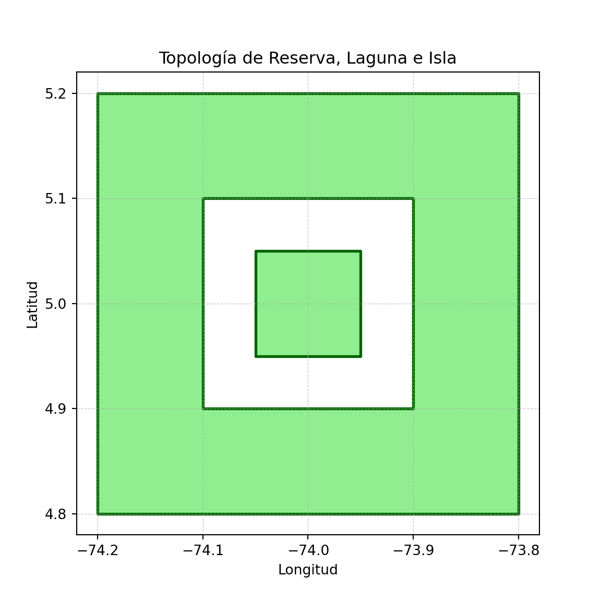
En R, la estructuración anidada del paquete sf para un MULTIPOLYGON se compone de un nivel escalar profundo: Objeto[[Polígono]][[Anillo]][Fila, Columna].
El primer anillo de cualquier sublista de polígono representa la cota externa, mientras que el índice 2 en adelante mapea las perforaciones interiores. A diferencia de Python, R utiliza indexación basada en uno (1), por lo que el tercer vértice corresponde al índice de fila [3, ].
library(sf)
# 1. Definición matricial de los anillos topológicos
ext_reserva <- rbind(c(-74.2, 5.2), c(-73.8, 5.2), c(-73.8, 4.8), c(-74.2, 4.8), c(-74.2, 5.2))
int_laguna <- rbind(c(-74.1, 5.1), c(-74.1, 4.9), c(-73.9, 4.9), c(-73.9, 5.1), c(-74.1, 5.1))
ext_isla <- rbind(c(-74.05, 5.05), c(-73.95, 5.05), c(-73.95, 4.95), c(-74.05, 4.95), c(-74.05, 5.05))
# 2. Ensamblaje en lista jerárquica (MULTIPOLYGON) - Objeto SFG
mpol_reserva <- st_multipolygon(list(
list(ext_reserva, int_laguna), # Polígono 1: Lista con matriz exterior y matriz hueco
list(ext_isla) # Polígono 2: Lista con matriz exterior únicamente
))
# Creamos el Objeto SF con coordenadas definidas
mpol_sfc <- st_sfc(mpol_reserva, crs = 4326)
# 3. Navegación algorítmica y extracción (Tercer vértice = fila 3)
cat("--- Extracción de Coordenadas (Vértice 3) ---\n")--- Extracción de Coordenadas (Vértice 3) ---# Polígono 1 [[1]] -> Anillo Exterior [[1]] -> Fila 3, Todas las columnas
c1 <- mpol_reserva[[1]][[1]][3, ]
cat(sprintf("Reserva (Exterior): [%f, %f]\n", c1[1], c1[2]))Reserva (Exterior): [-73.800000, 4.800000]# Polígono 1 [[1]] -> Anillo Interior / Hueco [[2]] -> Fila 3
c2 <- mpol_reserva[[1]][[2]][3, ]
cat(sprintf("Laguna (Hueco) : [%f, %f]\n", c2[1], c2[2]))Laguna (Hueco) : [-73.900000, 4.900000]# Polígono 2 [[2]] -> Anillo Exterior [[1]] -> Fila 3
c3 <- mpol_reserva[[2]][[1]][3, ]
cat(sprintf("Isla (Exterior) : [%f, %f]\n", c3[1], c3[2]))Isla (Exterior) : [-73.950000, 4.950000]# 4. Cálculo de límites numéricos para evitar el error 'finite xlim'
bb <- st_bbox(mpol_sfc)
# Margen del 5%
dx <- (bb$xmax - bb$xmin) * 0.05
dy <- (bb$ymax - bb$ymin) * 0.05
xlim_val <- c(as.numeric(bb$xmin - dx), as.numeric(bb$xmax + dx))
ylim_val <- c(as.numeric(bb$ymin - dy), as.numeric(bb$ymax + dy))
# 5. Renderizado: pty="s" fuerza un área cuadrada eliminando espacios arriba/abajo
par(pty = "s", mar = c(3, 3, 2, 1))
plot(
mpol_sfc,
col = 'lightgreen',
border = 'darkgreen',
lwd = 2,
axes = TRUE,
xlim = xlim_val,
ylim = ylim_val,
xaxs = "i", # "i" elimina el padding extra de R
yaxs = "i",
main = "Topología de Reserva, Laguna e Isla",
graticule = st_graticule(
lon = seq(-74.2, -73.8, by = 0.1),
lat = seq(4.8, 5.2, by = 0.1)
)
)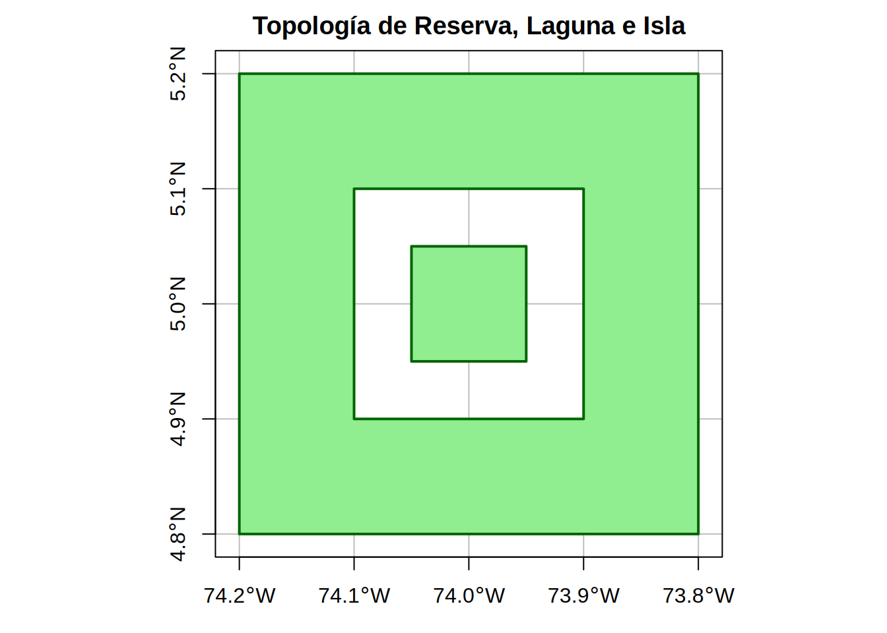
Para diseccionar geometrías complejas en Julia utilizando ArchGDAL.jl, se debe recurrir a la función extractora base getgeom(). Esta función desciende progresivamente por los niveles de anidamiento de la topología WKB.
Nota estricta sobre indexación: A nivel global, el lenguaje Julia comienza sus vectores en 1. Sin embargo, la API de ArchGDAL.jl es una envoltura sobre C++, por lo cual todos sus accesos geométricos conservan índice base cero (0). Extraer el tercer vértice exigirá solicitar el puntero número 2.
j_eval('
using ArchGDAL
using CairoMakie
using Printf
# 1. Instanciación y ensamblaje multinivel (Arreglo de Arreglos de Arreglos)
mpol_reserva = ArchGDAL.createmultipolygon([
[ # Polígono 1
[(-74.2, 5.2), (-73.8, 5.2), (-73.8, 4.8), (-74.2, 4.8), (-74.2, 5.2)], # Anillo Exterior
[(-74.1, 5.1), (-74.1, 4.9), (-73.9, 4.9), (-73.9, 5.1), (-74.1, 5.1)] # Hueco interior
],
[ # Polígono 2
[(-74.05, 5.05), (-73.95, 5.05), (-73.95, 4.95), (-74.05, 4.95), (-74.05, 5.05)] # Anillo Exterior
]
])
# 2. Descenso topológico profundo para extracción (Índice 2 para el tercer vértice)
println("--- Extracción de Coordenadas (Vértice 3) ---")
# A. Extraer Polígono 1 (índice 0) -> Anillo exterior (índice 0)
pol1 = ArchGDAL.getgeom(mpol_reserva, 0)
ext_reserva = ArchGDAL.getgeom(pol1, 0)
c1_x, c1_y = ArchGDAL.getx(ext_reserva, 2), ArchGDAL.gety(ext_reserva, 2)
@printf("Reserva (Exterior): [%f, %f]\\n", c1_x, c1_y)
# B. Anillo interior / Hueco (índice 1 del Polígono 1)
int_laguna = ArchGDAL.getgeom(pol1, 1)
c2_x, c2_y = ArchGDAL.getx(int_laguna, 2), ArchGDAL.gety(int_laguna, 2)
@printf("Laguna (Hueco) : [%f, %f]\\n", c2_x, c2_y)
# C. Extraer Polígono 2 (índice 1) -> Anillo exterior (índice 0)
pol2 = ArchGDAL.getgeom(mpol_reserva, 1)
ext_isla = ArchGDAL.getgeom(pol2, 0)
c3_x, c3_y = ArchGDAL.getx(ext_isla, 2), ArchGDAL.gety(ext_isla, 2)
@printf("Isla (Exterior) : [%f, %f]\\n", c3_x, c3_y)
# 3. Macro conversora de GDAL a Makie
function to_makie_poly(gdal_poly)
ext = ArchGDAL.getgeom(gdal_poly, 0)
ext_pts = [Point2f(ArchGDAL.getx(ext, i), ArchGDAL.gety(ext, i)) for i in 0:ArchGDAL.ngeom(ext)-1]
holes = Vector{Vector{Point2f}}()
for i in 1:ArchGDAL.ngeom(gdal_poly)-1
hole = ArchGDAL.getgeom(gdal_poly, i)
push!(holes, [Point2f(ArchGDAL.getx(hole, j), ArchGDAL.gety(hole, j)) for j in 0:ArchGDAL.ngeom(hole)-1])
end
return Makie.Polygon(ext_pts, holes)
end
# 4. Renderizado explícito controlando el vector direccional de las grillas
fig = Figure(size = (600, 600))
# Mapeo algorítmico del lienzo (Axis) con espaciado de 0.1 y grilla encendida
ax = Axis(
fig[1, 1],
title = "Topología de Reserva, Laguna e Isla",
xlabel = "Longitud",
ylabel = "Latitud",
aspect = DataAspect(),
xticks = -74.3:0.1:-73.7, # Rango manual y espaciado de marcas (X)
yticks = 4.7:0.1:5.3, # Rango manual y espaciado de marcas (Y)
xgridstyle = :dash, # Estilo lineal punteado para la grilla
ygridstyle = :dash,
xgridwidth = 0.5,
ygridwidth = 0.5
)
# Inserción de polígonos iterando sobre la colección madre
for i in 0:ArchGDAL.ngeom(mpol_reserva)-1
CairoMakie.poly!(
ax,
to_makie_poly(ArchGDAL.getgeom(mpol_reserva, i)),
color = :lightblue,
strokecolor = :darkblue,
strokewidth = 2.0
)
end
# Si la carpeta NO existe créala
# isdir("images") || mkpath("images")
CairoMakie.save("images/c14_plot_extraccion_nodos_julia.png", fig)
')julia> using ArchGDAL
julia> using CairoMakie
julia> using Printf
julia> # 1. Instanciación y ensamblaje multinivel (Arreglo de Arreglos de Arreglos)
julia> mpol_reserva = ArchGDAL.createmultipolygon([ [ # Polígono 1 [(-74.2, 5.2), (-73.8, 5.2), (-73.8, 4.8), (-74.2, 4.8), (-74.2, 5.2)], # Anillo Exterior [(-74.1, 5.1), (-74.1, 4.9), (-73.9, 4.9), (-73.9, 5.1), (-74.1, 5.1)] # Hueco interior ], [ # Polígono 2 [(-74.05, 5.05), (-73.95, 5.05), (-73.95, 4.95), (-74.05, 4.95), (-74.05, 5.05)] # Anillo Exterior ] ])
Geometry: MULTIPOLYGON (((-74.2 5.2,-73.8 5.2,-73.8 4.8,-74. ... 05)))
julia> # 2. Descenso topológico profundo para extracción (Índice 2 para el tercer vértice)
julia> println("--- Extracción de Coordenadas (Vértice 3) ---")
--- Extracción de Coordenadas (Vértice 3) ---
julia> # A. Extraer Polígono 1 (índice 0) -> Anillo exterior (índice 0)
julia> pol1 = ArchGDAL.getgeom(mpol_reserva, 0)
Geometry: POLYGON ((-74.2 5.2,-73.8 5.2,-73.8 4.8,-74.2 4.8, ... 5.1))
julia> ext_reserva = ArchGDAL.getgeom(pol1, 0)
Geometry: LINEARRING (-74.2 5.2,-73.8 5.2,-73.8 4.8,-74.2 4. ... 5.2)
julia> c1_x, c1_y = ArchGDAL.getx(ext_reserva, 2), ArchGDAL.gety(ext_reserva, 2)
(-73.8, 4.8)
julia> @printf("Reserva (Exterior): [%f, %f]\n", c1_x, c1_y)
Reserva (Exterior): [-73.800000, 4.800000]
julia> # B. Anillo interior / Hueco (índice 1 del Polígono 1)
julia> int_laguna = ArchGDAL.getgeom(pol1, 1)
Geometry: LINEARRING (-74.1 5.1,-74.1 4.9,-73.9 4.9,-73.9 5. ... 5.1)
julia> c2_x, c2_y = ArchGDAL.getx(int_laguna, 2), ArchGDAL.gety(int_laguna, 2)
(-73.9, 4.9)
julia> @printf("Laguna (Hueco) : [%f, %f]\n", c2_x, c2_y)
Laguna (Hueco) : [-73.900000, 4.900000]
julia> # C. Extraer Polígono 2 (índice 1) -> Anillo exterior (índice 0)
julia> pol2 = ArchGDAL.getgeom(mpol_reserva, 1)
Geometry: POLYGON ((-74.05 5.05,-73.95 5.05,-73.95 4.95,-74. ... .05))
julia> ext_isla = ArchGDAL.getgeom(pol2, 0)
Geometry: LINEARRING (-74.05 5.05,-73.95 5.05,-73.95 4.95,-7 ... 5.05)
julia> c3_x, c3_y = ArchGDAL.getx(ext_isla, 2), ArchGDAL.gety(ext_isla, 2)
(-73.95, 4.95)
julia> @printf("Isla (Exterior) : [%f, %f]\n", c3_x, c3_y)
Isla (Exterior) : [-73.950000, 4.950000]
julia> # 3. Macro conversora de GDAL a Makie
julia> function to_makie_poly(gdal_poly) ext = ArchGDAL.getgeom(gdal_poly, 0) ext_pts = [Point2f(ArchGDAL.getx(ext, i), ArchGDAL.gety(ext, i)) for i in 0:ArchGDAL.ngeom(ext)-1] holes = Vector{Vector{Point2f}}() for i in 1:ArchGDAL.ngeom(gdal_poly)-1 hole = ArchGDAL.getgeom(gdal_poly, i) push!(holes, [Point2f(ArchGDAL.getx(hole, j), ArchGDAL.gety(hole, j)) for j in 0:ArchGDAL.ngeom(hole)-1]) end return Makie.Polygon(ext_pts, holes) end
to_makie_poly (generic function with 1 method)
julia> # 4. Renderizado explícito controlando el vector direccional de las grillas
julia> fig = Figure(size = (600, 600))
Figure()
julia> # Mapeo algorítmico del lienzo (Axis) con espaciado de 0.1 y grilla encendida
julia> ax = Axis( fig[1, 1], title = "Topología de Reserva, Laguna e Isla", xlabel = "Longitud", ylabel = "Latitud", aspect = DataAspect(), xticks = -74.3:0.1:-73.7, # Rango manual y espaciado de marcas (X) yticks = 4.7:0.1:5.3, # Rango manual y espaciado de marcas (Y) xgridstyle = :dash, # Estilo lineal punteado para la grilla ygridstyle = :dash, xgridwidth = 0.5, ygridwidth = 0.5 )
Axis with 0 plots:
julia> # Inserción de polígonos iterando sobre la colección madre
julia> for i in 0:ArchGDAL.ngeom(mpol_reserva)-1 CairoMakie.poly!( ax, to_makie_poly(ArchGDAL.getgeom(mpol_reserva, i)), color = :lightblue, strokecolor = :darkblue, strokewidth = 2.0 ) end
julia> # Si la carpeta NO existe créala
julia> # isdir("images") || mkpath("images")
julia> CairoMakie.save("images/c14_plot_extraccion_nodos_julia.png", fig)
knitr::include_graphics("images/c14_plot_extraccion_nodos_julia.png")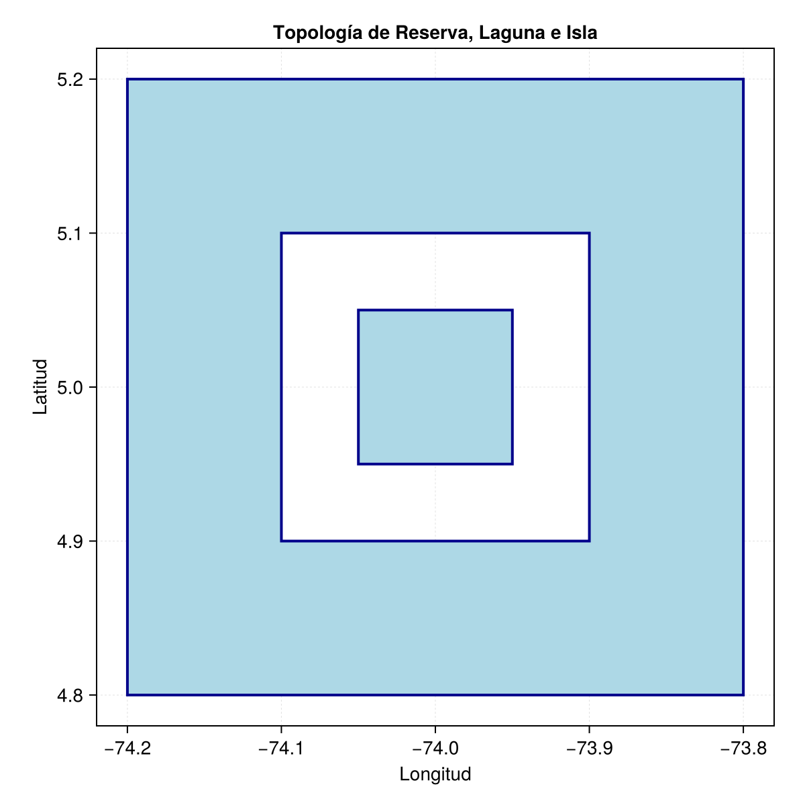
El acceso a vértices específicos dentro de geometrías espaciales complejas exige descender a través de la jerarquía topológica del objeto (Colección \(\rightarrow\) Geometría \(\rightarrow\) Anillo \(\rightarrow\) Vértice). En la siguiente tabla se comparan los métodos de indexación para aislar fronteras exteriores, enclaves (huecos) y coordenadas absolutas.
Es fundamental advertir la asimetría en los índices base de cada lenguaje: mientras Python inicia sus índices vectoriales en 0, R lo hace en 1. En el caso de Julia, aunque el lenguaje nativamente inicia en 1, la API de ArchGDAL.jl hereda la indexación en 0 de su librería C++ subyacente.
| Nivel topológico | Python (shapely) 🐍 |
R (sf) 🔵 |
Julia (ArchGDAL) 🟣 |
|---|---|---|---|
| Extraer polígono \(i\) (Desde MultiPolygon) |
mpol.geoms[i] |
mpol[[i]] |
ArchGDAL.getgeom(mpol, i) |
| Anillo exterior (Límite principal) |
pol.exterior |
pol[[1]] |
ArchGDAL.getgeom(pol, 0) |
| Anillo interior \(k\) (Hueco / Perforación) |
pol.interiors[k] |
pol[[k+1]] |
ArchGDAL.getgeom(pol, k) |
| Índice base del motor | Basado en 0 |
Basado en 1 |
Basado en 0 (C++) |
Una vez aislado el anillo unidimensional (límite o hueco), la extracción de la tupla de coordenadas cartesianas o el cálculo de la envolvente convexa rectangular (Bounding Box) se efectúa mediante los siguientes comandos escalares.
| Operación vectorial | Python (shapely / gpd) 🐍 |
R (sf) 🔵 |
Julia (ArchGDAL) 🟣 |
|---|---|---|---|
| Extraer vértice \(j\) (Coordenada aislada) |
anillo.coords[j] |
anillo[j, ] |
ArchGDAL.getx(anillo, j)ArchGDAL.gety(anillo, j) |
| Caja delimitadora (Bounding Box) |
geom.bounds(Geometría individual) |
st_bbox(geom) |
ArchGDAL.getenvelope(geom) |
Para garantizar que la representación gráfica mantenga la proporción geométrica real (1:1) y no distorsione la topología, es necesario forzar la isometría del lienzo y controlar los márgenes de los ejes utilizando las cajas delimitadoras.
| Operación paramétrica | Python (matplotlib) 🐍 |
R (Base Graphics) 🔵 | Julia (CairoMakie) 🟣 |
|---|---|---|---|
| Forzar proporción cuadrada (Aspect Ratio isométrico) |
fig, ax = plt.subplots(figsize=(6, 6)) |
par(pty = "s") |
ax = Axis(...,aspect = DataAspect()) |
| Eliminar padding nativo (Ajustar ejes al límite exacto) |
ax.margins(0) |
plot(...,xaxs = "i", yaxs = "i") |
Controlado inherentemente por <br>DataAspect() y xticks/yticks |
Comprender la jerarquía anidada de las multigeometrías es fundamental para el procesamiento analítico. A nivel algorítmico, un SIG no evalúa una figura como un dibujo, sino como un tensor multidimensional de vértices.
La topología de un POLYGON se define de manera estricta mediante anillos (Rings): un polígono está compuesto por exactamente un anillo exterior (cuya área representa masa sólida) y cero o múltiples anillos interiores (cuya área representa perforaciones o huecos). Por lo tanto, la naturaleza del espacio (tierra o agua) está dictada por su índice estructural:
MULTIPOLYGON.Para ilustrar este principio geométrico y validarlo mediante predicados espaciales, se simula un área protegida:
En Python, la librería shapely expone las multigeometrías iterando a través de la propiedad .geoms. Cada polígono posee un atributo .exterior y una lista de atributos .interiors (huecos).
Nota: Python utiliza indexación basada en cero (0), por lo que el primer hueco es el índice [0] y el tercer vértice corresponde al índice [2].
# #| eval: false
from shapely.geometry import Polygon, MultiPolygon, Point
import geopandas as gpd
import matplotlib.pyplot as plt
import matplotlib.ticker as ticker
# 1. Construcción de anillos topológicos topológicamente válidos
# Anillo exterior del polígono 1 (Límites de la Reserva Natural)
ext_reserva = [(-74.2, 5.2), (-73.8, 5.2), (-73.8, 4.8), (-74.2, 4.8), (-74.2, 5.2)]
# Anillo interior 1 del polígono 1 (Laguna principal / Hueco)
int_laguna1 = [(-74.1, 5.1), (-74.1, 4.9), (-73.95, 4.9), (-73.95, 5.1), (-74.1, 5.1)]
# Anillo interior 2 del polígono 1 (Laguna pequeña / Hueco disjunto)
int_laguna2 = [(-73.9, 5.15), (-73.9, 5.05), (-73.82, 5.05), (-73.82, 5.15), (-73.9, 5.15)]
# Anillo exterior del polígono 2 (Isla sólida dentro de la laguna 1)
ext_isla = [(-74.05, 5.05), (-73.98, 5.05), (-73.98, 4.95), (-74.05, 4.95), (-74.05, 5.05)]
# 2. Ensamblaje de la Multigeometría
# Estructura: [(exterior_pol1, [huecos_pol1]), (exterior_pol2, [huecos_pol2])]
mpol_reserva = MultiPolygon([
(ext_reserva, [int_laguna1, int_laguna2]),
(ext_isla, [])
])
# 3. Determinación estructural (Reglas OGC Simple Features)
print("--- Determinación Estructural (Basada en Atributos) ---")--- Determinación Estructural (Basada en Atributos) ---c1 = mpol_reserva.geoms[0].exterior.coords[2]
print(f"Reserva (.exterior -> Tierra firme) : {c1}")Reserva (.exterior -> Tierra firme) : (-73.8, 4.8)c2 = mpol_reserva.geoms[0].interiors[0].coords[2]
print(f"Laguna 1 (.interiors[0] -> Hueco) : {c2}")Laguna 1 (.interiors[0] -> Hueco) : (-73.95, 4.9)c3 = mpol_reserva.geoms[0].interiors[1].coords[2]
print(f"Laguna 2 (.interiors[1] -> Hueco) : {c3}")Laguna 2 (.interiors[1] -> Hueco) : (-73.82, 5.05)c4 = mpol_reserva.geoms[1].exterior.coords[2]
print(f"Isla (.exterior -> Tierra firme) : {c4}\n")Isla (.exterior -> Tierra firme) : (-73.98, 4.95)# 4. Evaluación topológica con puntos de prueba (Predicado Contains)
pt_reserva = Point(-74.15, 5.15)
pt_laguna1 = Point(-74.08, 5.08)
pt_laguna2 = Point(-73.86, 5.10)
pt_isla = Point(-74.02, 5.0)
print("--- Evaluación Topológica (¿Pertenece al polígono sólido?) ---")--- Evaluación Topológica (¿Pertenece al polígono sólido?) ---print(f"Punto en Reserva (Tierra) : {mpol_reserva.contains(pt_reserva)}")Punto en Reserva (Tierra) : Trueprint(f"Punto en Laguna 1 (Agua) : {mpol_reserva.contains(pt_laguna1)}")Punto en Laguna 1 (Agua) : Falseprint(f"Punto en Laguna 2 (Agua) : {mpol_reserva.contains(pt_laguna2)}")Punto en Laguna 2 (Agua) : Falseprint(f"Punto en Isla (Tierra) : {mpol_reserva.contains(pt_isla)}")Punto en Isla (Tierra) : True# 5. Renderizado cartográfico integrando puntos de prueba
fig, ax = plt.subplots(figsize=(6, 6))
gpd.GeoSeries([mpol_reserva]).plot(
ax=ax, facecolor='lightgreen', edgecolor='darkgreen', linewidth=2
)
# Ploteo diferencial de puntos de control
gpd.GeoSeries([pt_reserva, pt_isla]).plot(ax=ax, color='red', marker='o', markersize=50, label='Tierra (Reserva/Isla)')
gpd.GeoSeries([pt_laguna1, pt_laguna2]).plot(ax=ax, color='blue', marker='X', markersize=50, label='Agua (Huecos)')
ax.set_title("Topología Estructural: Reserva, Lagunas e Isla")
ax.set_xlabel("Longitud")
ax.set_ylabel("Latitud")
ax.legend(loc='lower left')
ax.grid(True, linestyle="--", linewidth=0.5, alpha=0.7)
ax.xaxis.set_major_locator(ticker.MultipleLocator(0.1))
ax.yaxis.set_major_locator(ticker.MultipleLocator(0.1))
plt.tight_layout()
plt.show()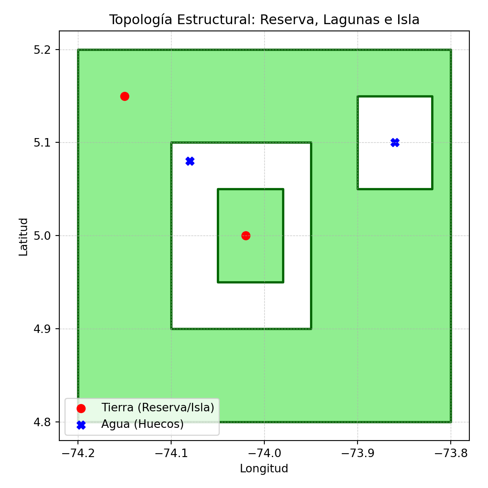
En R, el motor topológico es estricto con las intersecciones de límites. La estructura de un MULTIPOLYGON se compone de una lista profunda: Objeto[[Polígono]][[Anillo]][Fila, Columna].
A nivel estructural, el anillo en el índice [[1]] de cualquier polígono es obligatoriamente su cota externa sólida, mientras que cualquier índice posterior ([[2]], [[3]]…) representa matemáticamente perforaciones vacías (huecos). R utiliza indexación basada en uno (1).
# #| eval: false
library(sf)
# 1. Definición matricial de los anillos topológicos
ext_reserva <- rbind(c(-74.2, 5.2), c(-73.8, 5.2), c(-73.8, 4.8), c(-74.2, 4.8), c(-74.2, 5.2))
int_laguna1 <- rbind(c(-74.1, 5.1), c(-74.1, 4.9), c(-73.95, 4.9), c(-73.95, 5.1), c(-74.1, 5.1))
int_laguna2 <- rbind(c(-73.9, 5.15), c(-73.9, 5.05), c(-73.82, 5.05), c(-73.82, 5.15), c(-73.9, 5.15))
ext_isla <- rbind(c(-74.05, 5.05), c(-73.98, 5.05), c(-73.98, 4.95), c(-74.05, 4.95), c(-74.05, 5.05))
# 2. Ensamblaje en lista jerárquica (MULTIPOLYGON) - Objeto SFG
mpol_reserva <- st_multipolygon(list(
list(ext_reserva, int_laguna1, int_laguna2), # Pol 1: Exterior y dos huecos
list(ext_isla) # Pol 2: Exterior únicamente (Isla)
))
# Instanciación en columna geométrica formal
mpol_sfc <- st_sfc(mpol_reserva, crs = 4326)
# 3. Determinación estructural analítica
cat("--- Determinación Estructural (Basada en Índices de Lista) ---\n")--- Determinación Estructural (Basada en Índices de Lista) ---c1 <- mpol_reserva[[1]][[1]][3, ]
cat(sprintf("Reserva (Pol 1, Índice [[1]] -> Tierra) : [%f, %f]\n", c1[1], c1[2]))Reserva (Pol 1, Índice [[1]] -> Tierra) : [-73.800000, 4.800000]c2 <- mpol_reserva[[1]][[2]][3, ]
cat(sprintf("Laguna 1 (Pol 1, Índice [[2]] -> Agua) : [%f, %f]\n", c2[1], c2[2]))Laguna 1 (Pol 1, Índice [[2]] -> Agua) : [-73.950000, 4.900000]c3 <- mpol_reserva[[1]][[3]][3, ]
cat(sprintf("Laguna 2 (Pol 1, Índice [[3]] -> Agua) : [%f, %f]\n", c3[1], c3[2]))Laguna 2 (Pol 1, Índice [[3]] -> Agua) : [-73.820000, 5.050000]c4 <- mpol_reserva[[2]][[1]][3, ]
cat(sprintf("Isla (Pol 2, Índice [[1]] -> Tierra) : [%f, %f]\n\n", c4[1], c4[2]))Isla (Pol 2, Índice [[1]] -> Tierra) : [-73.980000, 4.950000]# 4. Evaluación topológica mediante predicados con puntos
pt_reserva <- st_sfc(st_point(c(-74.15, 5.15)), crs = 4326)
pt_laguna1 <- st_sfc(st_point(c(-74.08, 5.08)), crs = 4326)
pt_laguna2 <- st_sfc(st_point(c(-73.86, 5.10)), crs = 4326)
pt_isla <- st_sfc(st_point(c(-74.02, 5.0)), crs = 4326)
cat("--- Evaluación Topológica (¿Pertenece al polígono sólido?) ---\n")--- Evaluación Topológica (¿Pertenece al polígono sólido?) ---cat("Punto en Reserva (Tierra):", st_contains(mpol_sfc, pt_reserva, sparse = FALSE)[1,1], "\n")Punto en Reserva (Tierra): TRUE cat("Punto en Laguna 1 (Agua) :", st_contains(mpol_sfc, pt_laguna1, sparse = FALSE)[1,1], "\n")Punto en Laguna 1 (Agua) : FALSE cat("Punto en Laguna 2 (Agua) :", st_contains(mpol_sfc, pt_laguna2, sparse = FALSE)[1,1], "\n")Punto en Laguna 2 (Agua) : FALSE cat("Punto en Isla (Tierra) :", st_contains(mpol_sfc, pt_isla, sparse = FALSE)[1,1], "\n")Punto en Isla (Tierra) : TRUE # 5. Renderizado cartográfico de la topología y puntos de validación
bb <- st_bbox(mpol_sfc)
dx <- (bb$xmax - bb$xmin) * 0.05
dy <- (bb$ymax - bb$ymin) * 0.05
xlim_val <- c(as.numeric(bb$xmin - dx), as.numeric(bb$xmax + dx))
ylim_val <- c(as.numeric(bb$ymin - dy), as.numeric(bb$ymax + dy))
par(pty = "s", mar = c(3, 3, 2, 1))
plot(mpol_sfc, col = 'lightgreen', border = 'darkgreen', lwd = 2, axes = TRUE,
xlim = xlim_val, ylim = ylim_val, xaxs = "i", yaxs = "i",
main = "Topología Estructural: Reserva, Lagunas e Isla",
graticule = st_graticule(lon = seq(-74.2, -73.8, by = 0.1), lat = seq(4.8, 5.2, by = 0.1)))
# Simbología diferencial para verificación visual
plot(pt_reserva, col = "red", pch = 16, cex = 1.5, add = TRUE)
plot(pt_isla, col = "red", pch = 16, cex = 1.5, add = TRUE)
plot(pt_laguna1, col = "blue", pch = 4, lwd = 2, cex = 1.5, add = TRUE)
plot(pt_laguna2, col = "blue", pch = 4, lwd = 2, cex = 1.5, add = TRUE)
legend("bottomleft", legend = c("Tierra (Reserva/Isla)", "Agua (Huecos)"), col = c("red", "blue"), pch = c(16, 4))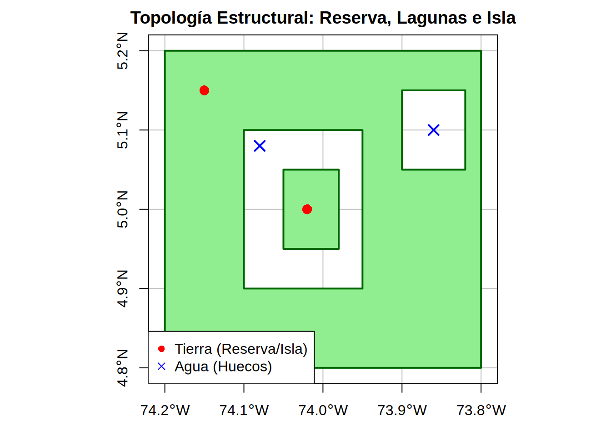
En Julia, la API subyacente de ArchGDAL garantiza que getgeom(pol, 0) extrae el anillo exterior primario. Todo índice mayor a 0 extrae iterativamente los huecos internos.
# #| eval: false
j_eval('
using ArchGDAL
using CairoMakie
using Printf
# 1. Instanciación y ensamblaje multinivel (Arreglo de Arreglos de Arreglos)
mpol_reserva = ArchGDAL.createmultipolygon([
[ # Polígono 1
[(-74.2, 5.2), (-73.8, 5.2), (-73.8, 4.8), (-74.2, 4.8), (-74.2, 5.2)], # Anillo Exterior
[(-74.1, 5.1), (-74.1, 4.9), (-73.95, 4.9), (-73.95, 5.1), (-74.1, 5.1)], # Hueco 1
[(-73.9, 5.15), (-73.9, 5.05), (-73.82, 5.05), (-73.82, 5.15), (-73.9, 5.15)] # Hueco 2
],
[ # Polígono 2
[(-74.05, 5.05), (-73.98, 5.05), (-73.98, 4.95), (-74.05, 4.95), (-74.05, 5.05)] # Anillo Exterior (Isla)
]
])
# 2. Determinación estructural paramétrica (Basada en API C++)
println("--- Determinación Estructural (Basada en Índices) ---")
pol1 = ArchGDAL.getgeom(mpol_reserva, 0)
ext_reserva = ArchGDAL.getgeom(pol1, 0)
@printf("Reserva (Pol 0, Índice 0 -> Tierra) : [%f, %f]\\n", ArchGDAL.getx(ext_reserva, 2), ArchGDAL.gety(ext_reserva, 2))
int_laguna1 = ArchGDAL.getgeom(pol1, 1)
@printf("Laguna 1 (Pol 0, Índice 1 -> Agua) : [%f, %f]\\n", ArchGDAL.getx(int_laguna1, 2), ArchGDAL.gety(int_laguna1, 2))
int_laguna2 = ArchGDAL.getgeom(pol1, 2)
@printf("Laguna 2 (Pol 0, Índice 2 -> Agua) : [%f, %f]\\n", ArchGDAL.getx(int_laguna2, 2), ArchGDAL.gety(int_laguna2, 2))
pol2 = ArchGDAL.getgeom(mpol_reserva, 1)
ext_isla = ArchGDAL.getgeom(pol2, 0)
@printf("Isla (Pol 1, Índice 0 -> Tierra) : [%f, %f]\\n\\n", ArchGDAL.getx(ext_isla, 2), ArchGDAL.gety(ext_isla, 2))
# 3. Validación topológica con predicados y puntos de control
pt_reserva = ArchGDAL.fromWKT("POINT (-74.15 5.15)")
pt_laguna1 = ArchGDAL.fromWKT("POINT (-74.08 5.08)")
pt_laguna2 = ArchGDAL.fromWKT("POINT (-73.86 5.10)")
pt_isla = ArchGDAL.fromWKT("POINT (-74.02 5.0)")
println("--- Evaluación Topológica (¿Pertenece al polígono sólido?) ---")
println("Punto en Reserva (Tierra) : ", ArchGDAL.contains(mpol_reserva, pt_reserva))
println("Punto en Laguna 1 (Agua) : ", ArchGDAL.contains(mpol_reserva, pt_laguna1))
println("Punto en Laguna 2 (Agua) : ", ArchGDAL.contains(mpol_reserva, pt_laguna2))
println("Punto en Isla (Tierra) : ", ArchGDAL.contains(mpol_reserva, pt_isla))
# 4. Función de mapeo (Traducción GDAL a CairoMakie Polygon)
function to_makie_poly(gdal_poly)
ext = ArchGDAL.getgeom(gdal_poly, 0)
ext_pts = [Point2f(ArchGDAL.getx(ext, i), ArchGDAL.gety(ext, i)) for i in 0:ArchGDAL.ngeom(ext)-1]
holes = Vector{Vector{Point2f}}()
for i in 1:ArchGDAL.ngeom(gdal_poly)-1
hole = ArchGDAL.getgeom(gdal_poly, i)
push!(holes, [Point2f(ArchGDAL.getx(hole, j), ArchGDAL.gety(hole, j)) for j in 0:ArchGDAL.ngeom(hole)-1])
end
return Makie.Polygon(ext_pts, holes)
end
# 5. Configuración de panel gráfico y variables
fig = Figure(size = (600, 600))
ax = Axis(fig[1, 1], title = "Topología Estructural: Reserva, Lagunas e Isla",
xlabel = "Longitud", ylabel = "Latitud", aspect = DataAspect(),
xticks = -74.3:0.1:-73.7, yticks = 4.7:0.1:5.3,
xgridstyle = :dash, ygridstyle = :dash, xgridwidth = 0.5, ygridwidth = 0.5)
# Renderizado de capas poligonales
for i in 0:ArchGDAL.ngeom(mpol_reserva)-1
CairoMakie.poly!(ax, to_makie_poly(ArchGDAL.getgeom(mpol_reserva, i)),
color = :lightgreen, strokecolor = :darkgreen, strokewidth = 2.0)
end
# Superposición de puntos de prueba para contexto visual
CairoMakie.scatter!(ax, [-74.15, -74.02], [5.15, 5.0], color = :red, marker = :circle, markersize = 15, label = "Tierra (Reserva/Isla)")
CairoMakie.scatter!(ax, [-74.08, -73.86], [5.08, 5.10], color = :blue, marker = :cross, markersize = 18, label = "Agua (Huecos)")
axislegend(ax, position = :lb) # Legenda en Lower Left
CairoMakie.save("images/c14_plot_topologia_puntos_julia.png", fig)
')julia> using ArchGDAL
julia> using CairoMakie
julia> using Printf
julia> # 1. Instanciación y ensamblaje multinivel (Arreglo de Arreglos de Arreglos)
julia> mpol_reserva = ArchGDAL.createmultipolygon([ [ # Polígono 1 [(-74.2, 5.2), (-73.8, 5.2), (-73.8, 4.8), (-74.2, 4.8), (-74.2, 5.2)], # Anillo Exterior [(-74.1, 5.1), (-74.1, 4.9), (-73.95, 4.9), (-73.95, 5.1), (-74.1, 5.1)], # Hueco 1 [(-73.9, 5.15), (-73.9, 5.05), (-73.82, 5.05), (-73.82, 5.15), (-73.9, 5.15)] # Hueco 2 ], [ # Polígono 2 [(-74.05, 5.05), (-73.98, 5.05), (-73.98, 4.95), (-74.05, 4.95), (-74.05, 5.05)] # Anillo Exterior (Isla) ] ])
Geometry: MULTIPOLYGON (((-74.2 5.2,-73.8 5.2,-73.8 4.8,-74. ... 05)))
julia> # 2. Determinación estructural paramétrica (Basada en API C++)
julia> println("--- Determinación Estructural (Basada en Índices) ---")
--- Determinación Estructural (Basada en Índices) ---
julia> pol1 = ArchGDAL.getgeom(mpol_reserva, 0)
Geometry: POLYGON ((-74.2 5.2,-73.8 5.2,-73.8 4.8,-74.2 4.8, ... .15))
julia> ext_reserva = ArchGDAL.getgeom(pol1, 0)
Geometry: LINEARRING (-74.2 5.2,-73.8 5.2,-73.8 4.8,-74.2 4. ... 5.2)
julia> @printf("Reserva (Pol 0, Índice 0 -> Tierra) : [%f, %f]\n", ArchGDAL.getx(ext_reserva, 2), ArchGDAL.gety(ext_reserva, 2))
Reserva (Pol 0, Índice 0 -> Tierra) : [-73.800000, 4.800000]
julia> int_laguna1 = ArchGDAL.getgeom(pol1, 1)
Geometry: LINEARRING (-74.1 5.1,-74.1 4.9,-73.95 4.9,-73.95 ... 5.1)
julia> @printf("Laguna 1 (Pol 0, Índice 1 -> Agua) : [%f, %f]\n", ArchGDAL.getx(int_laguna1, 2), ArchGDAL.gety(int_laguna1, 2))
Laguna 1 (Pol 0, Índice 1 -> Agua) : [-73.950000, 4.900000]
julia> int_laguna2 = ArchGDAL.getgeom(pol1, 2)
Geometry: LINEARRING (-73.9 5.15,-73.9 5.05,-73.82 5.05,-73. ... 5.15)
julia> @printf("Laguna 2 (Pol 0, Índice 2 -> Agua) : [%f, %f]\n", ArchGDAL.getx(int_laguna2, 2), ArchGDAL.gety(int_laguna2, 2))
Laguna 2 (Pol 0, Índice 2 -> Agua) : [-73.820000, 5.050000]
julia> pol2 = ArchGDAL.getgeom(mpol_reserva, 1)
Geometry: POLYGON ((-74.05 5.05,-73.98 5.05,-73.98 4.95,-74. ... .05))
julia> ext_isla = ArchGDAL.getgeom(pol2, 0)
Geometry: LINEARRING (-74.05 5.05,-73.98 5.05,-73.98 4.95,-7 ... 5.05)
julia> @printf("Isla (Pol 1, Índice 0 -> Tierra) : [%f, %f]\n\n", ArchGDAL.getx(ext_isla, 2), ArchGDAL.gety(ext_isla, 2))
Isla (Pol 1, Índice 0 -> Tierra) : [-73.980000, 4.950000]
julia> # 3. Validación topológica con predicados y puntos de control
julia> pt_reserva = ArchGDAL.fromWKT("POINT (-74.15 5.15)")
Geometry: POINT (-74.15 5.15)
julia> pt_laguna1 = ArchGDAL.fromWKT("POINT (-74.08 5.08)")
Geometry: POINT (-74.08 5.08)
julia> pt_laguna2 = ArchGDAL.fromWKT("POINT (-73.86 5.10)")
Geometry: POINT (-73.86 5.1)
julia> pt_isla = ArchGDAL.fromWKT("POINT (-74.02 5.0)")
Geometry: POINT (-74.02 5.0)
julia> println("--- Evaluación Topológica (¿Pertenece al polígono sólido?) ---")
--- Evaluación Topológica (¿Pertenece al polígono sólido?) ---
julia> println("Punto en Reserva (Tierra) : ", ArchGDAL.contains(mpol_reserva, pt_reserva))
Punto en Reserva (Tierra) : true
julia> println("Punto en Laguna 1 (Agua) : ", ArchGDAL.contains(mpol_reserva, pt_laguna1))
Punto en Laguna 1 (Agua) : false
julia> println("Punto en Laguna 2 (Agua) : ", ArchGDAL.contains(mpol_reserva, pt_laguna2))
Punto en Laguna 2 (Agua) : false
julia> println("Punto en Isla (Tierra) : ", ArchGDAL.contains(mpol_reserva, pt_isla))
Punto en Isla (Tierra) : true
julia> # 4. Función de mapeo (Traducción GDAL a CairoMakie Polygon)
julia> function to_makie_poly(gdal_poly) ext = ArchGDAL.getgeom(gdal_poly, 0) ext_pts = [Point2f(ArchGDAL.getx(ext, i), ArchGDAL.gety(ext, i)) for i in 0:ArchGDAL.ngeom(ext)-1] holes = Vector{Vector{Point2f}}() for i in 1:ArchGDAL.ngeom(gdal_poly)-1 hole = ArchGDAL.getgeom(gdal_poly, i) push!(holes, [Point2f(ArchGDAL.getx(hole, j), ArchGDAL.gety(hole, j)) for j in 0:ArchGDAL.ngeom(hole)-1]) end return Makie.Polygon(ext_pts, holes) end
to_makie_poly (generic function with 1 method)
julia> # 5. Configuración de panel gráfico y variables
julia> fig = Figure(size = (600, 600))
Figure()
julia> ax = Axis(fig[1, 1], title = "Topología Estructural: Reserva, Lagunas e Isla", xlabel = "Longitud", ylabel = "Latitud", aspect = DataAspect(), xticks = -74.3:0.1:-73.7, yticks = 4.7:0.1:5.3, xgridstyle = :dash, ygridstyle = :dash, xgridwidth = 0.5, ygridwidth = 0.5)
Axis with 0 plots:
julia> # Renderizado de capas poligonales
julia> for i in 0:ArchGDAL.ngeom(mpol_reserva)-1 CairoMakie.poly!(ax, to_makie_poly(ArchGDAL.getgeom(mpol_reserva, i)), color = :lightgreen, strokecolor = :darkgreen, strokewidth = 2.0) end
julia> # Superposición de puntos de prueba para contexto visual
julia> CairoMakie.scatter!(ax, [-74.15, -74.02], [5.15, 5.0], color = :red, marker = :circle, markersize = 15, label = "Tierra (Reserva/Isla)")
Scatter{Tuple{Vector{Point{2, Float64}}}}
julia> CairoMakie.scatter!(ax, [-74.08, -73.86], [5.08, 5.10], color = :blue, marker = :cross, markersize = 18, label = "Agua (Huecos)")
Scatter{Tuple{Vector{Point{2, Float64}}}}
julia> axislegend(ax, position = :lb) # Legenda en Lower Left
Legend()
julia> CairoMakie.save("images/c14_plot_topologia_puntos_julia.png", fig)
knitr::include_graphics("images/c14_plot_topologia_puntos_julia.png")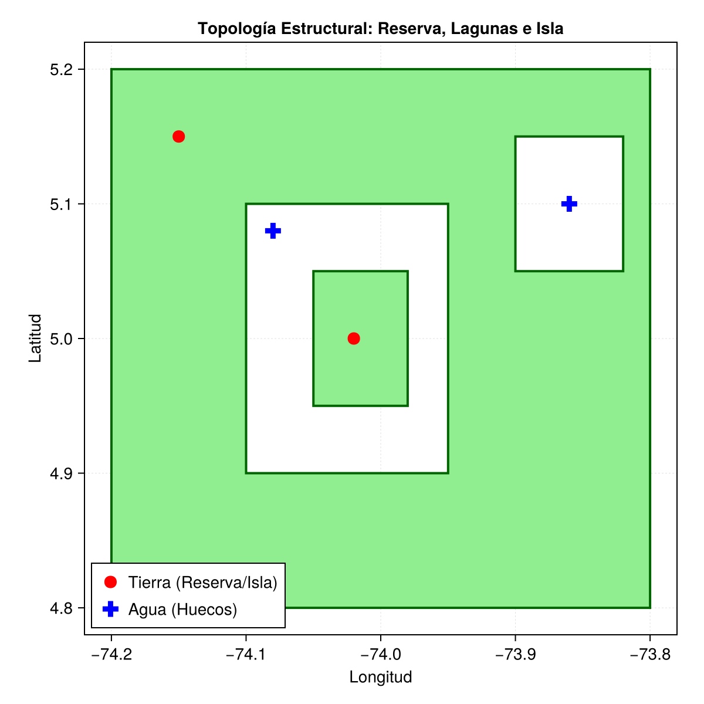
El acceso a los atributos internos para determinar la validez estructural dentro de geometrías complejas exige descender a través de la jerarquía topológica del objeto (Colección \(\rightarrow\) Geometría \(\rightarrow\) Anillo \(\rightarrow\) Vértice). La siguiente tabla ilustra los métodos de indexación para aislar fronteras exteriores y enclaves.
Es imperativo reconocer la asimetría algorítmica de los índices base: mientras Python inicia sus índices vectoriales en 0, R lo hace en 1. En el ecosistema de Julia, aunque el lenguaje nativamente inicia en 1, la API de ArchGDAL.jl hereda la indexación estricta en 0 de su librería matriz C++.
| Nivel topológico | Python (shapely) 🐍 |
R (sf) 🔵 |
Julia (ArchGDAL) 🟣 |
|---|---|---|---|
| Extraer polígono \(i\) (Desde MultiPolygon) |
mpol.geoms[i] |
mpol[[i+1]] |
ArchGDAL.getgeom(mpol, i) |
| Anillo exterior (Tierra) (Límite principal) |
pol.exterior |
pol[[1]] |
ArchGDAL.getgeom(pol, 0) |
| Anillo interior \(k\) (Agua) (Hueco / Perforación) |
pol.interiors[k] |
pol[[k+2]] |
ArchGDAL.getgeom(pol, k+1) |
| Índice base del motor | Basado en 0 |
Basado en 1 |
Basado en 0 (C++) |
El siguiente código define un conjunto de datos tabulares con las coordenadas de cuatro ciudades principales de Colombia y lo convierte a un formato espacial explícito asignando el sistema de referencia WGS84 (EPSG:4326), para luego generar un gráfico básico.
# #| eval: false
import pandas as pd
import geopandas as gpd
import matplotlib.pyplot as plt
# 1. Datos de coordenadas de ciudades principales de Colombia
datos = {
"Ciudad": ["Bogotá", "Medellín", "Cali", "Barranquilla"],
"Latitud": [4.6097, 6.2442, 3.4516, 10.9685],
"Longitud": [-74.0817, -75.5812, -76.5320, -74.7813]
}
# 2. Creación del DataFrame tabular estándar
df = pd.DataFrame(datos)
# 3. Conversión a GeoDataFrame asignando la geometría de puntos
# Se especifica crs="EPSG:4326" correspondiente a coordenadas geográficas WGS84
gdf = gpd.GeoDataFrame(
df,
geometry=gpd.points_from_xy(df.Longitud, df.Latitud),
crs="EPSG:4326"
)
# Visualización tabular
print(gdf) Ciudad Latitud Longitud geometry
0 Bogotá 4.6097 -74.0817 POINT (-74.0817 4.6097)
1 Medellín 6.2442 -75.5812 POINT (-75.5812 6.2442)
2 Cali 3.4516 -76.5320 POINT (-76.532 3.4516)
3 Barranquilla 10.9685 -74.7813 POINT (-74.7813 10.9685)# Visualización gráfica
gdf.plot(color="red", marker="o", markersize=50)
plt.title("Ciudades Principales - Colombia")
plt.xlabel("Longitud")
plt.ylabel("Latitud")
plt.show()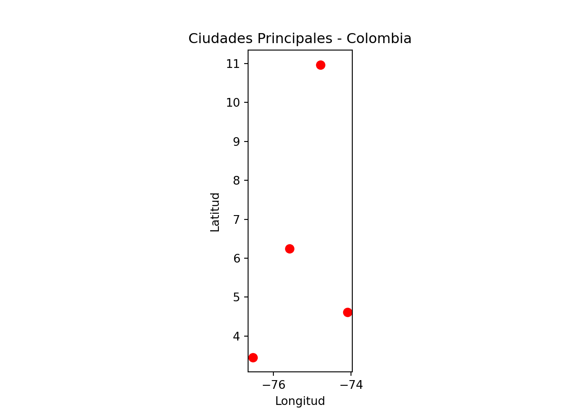
# #| eval: false
library(sf)
library(tibble)
# 1. Datos tabulares de ciudades principales de Colombia
df <- tibble(
Ciudad = c("Bogotá", "Medellín", "Cali", "Barranquilla"),
Latitud = c(4.6097, 6.2442, 3.4516, 10.9685),
Longitud = c(-74.0817, -75.5812, -76.5320, -74.7813)
)
# 2. Conversión a objeto espacial (sf)
# Se indican los nombres de las columnas que contienen las coordenadas
# Se asigna explícitamente el CRS 4326 (WGS84)
gdf <- st_as_sf(df, coords = c("Longitud", "Latitud"), crs = 4326)
# Visualización tabular
print(gdf)Simple feature collection with 4 features and 1 field
Geometry type: POINT
Dimension: XY
Bounding box: xmin: -76.532 ymin: 3.4516 xmax: -74.0817 ymax: 10.9685
Geodetic CRS: WGS 84
# A tibble: 4 × 2
Ciudad geometry
* <chr> <POINT [°]>
1 Bogotá (-74.0817 4.6097)
2 Medellín (-75.5812 6.2442)
3 Cali (-76.532 3.4516)
4 Barranquilla (-74.7813 10.9685)# Visualización gráfica
plot(st_geometry(gdf), col = "red", pch = 16, cex = 1.5,
main = "Ciudades Principales - Colombia", axes = TRUE)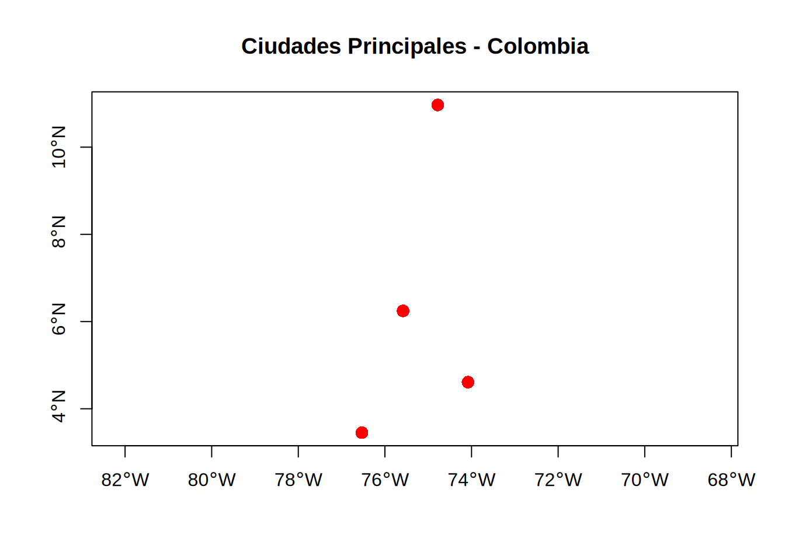
# #| eval: false
j_eval('
using DataFrames
using ArchGDAL
using Plots
# 1. Datos tabulares de ciudades principales de Colombia
df = DataFrame(
Ciudad = ["Bogotá", "Medellín", "Cali", "Barranquilla"],
Latitud = [4.6097, 6.2442, 3.4516, 10.9685],
Longitud = [-74.0817, -75.5812, -76.5320, -74.7813]
)
# 2. Creación de la columna de geometría vectorial
df.geometry = ArchGDAL.createpoint.(df.Longitud, df.Latitud)
# Visualización tabular
println(df)
# Visualización gráfica y guardado
p = Plots.plot(df.geometry, title="Ciudades Principales - Colombia",
color=:red, marker=:circle, markersize=6, aspect_ratio=:equal, legend=false)
Plots.savefig(p, "images/c14_plot_ciudades_colombia_julia.png")
')julia> using DataFrames
julia> using ArchGDAL
julia> using Plots
julia> # 1. Datos tabulares de ciudades principales de Colombia
julia> df = DataFrame( Ciudad = ["Bogotá", "Medellín", "Cali", "Barranquilla"], Latitud = [4.6097, 6.2442, 3.4516, 10.9685], Longitud = [-74.0817, -75.5812, -76.5320, -74.7813] )
4×3 DataFrame
Row │ Ciudad Latitud Longitud
│ String Float64 Float64
─────┼─────────────────────────────────
1 │ Bogotá 4.6097 -74.0817
2 │ Medellín 6.2442 -75.5812
3 │ Cali 3.4516 -76.532
4 │ Barranquilla 10.9685 -74.7813
julia> # 2. Creación de la columna de geometría vectorial
julia> df.geometry = ArchGDAL.createpoint.(df.Longitud, df.Latitud)
4-element Vector{ArchGDAL.IGeometry{ArchGDAL.wkbPoint}}:
Geometry: POINT (-74.0817 4.6097)
Geometry: POINT (-75.5812 6.2442)
Geometry: POINT (-76.532 3.4516)
Geometry: POINT (-74.7813 10.9685)
julia> # Visualización tabular
julia> println(df)
4×4 DataFrame
Row │ Ciudad Latitud Longitud geometry
│ String Float64 Float64 IGeometr…
─────┼─────────────────────────────────────────────────────
1 │ Bogotá 4.6097 -74.0817 Geometry: wkbPoint
2 │ Medellín 6.2442 -75.5812 Geometry: wkbPoint
3 │ Cali 3.4516 -76.532 Geometry: wkbPoint
4 │ Barranquilla 10.9685 -74.7813 Geometry: wkbPoint
julia> # Visualización gráfica y guardado
julia> p = Plots.plot(df.geometry, title="Ciudades Principales - Colombia", color=:red, marker=:circle, markersize=6, aspect_ratio=:equal, legend=false)
julia> Plots.savefig(p, "images/c14_plot_ciudades_colombia_julia.png")
"/home/rstudio/work/01_prog_sig/images/c14_plot_ciudades_colombia_julia.png"
knitr::include_graphics("images/c14_plot_ciudades_colombia_julia.png")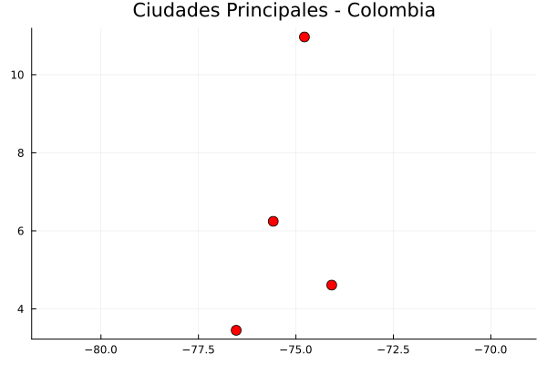
| Operación | Python (geopandas) 🐍 |
R (sf) 🔵 |
Julia (ArchGDAL) 🟣 |
|---|---|---|---|
| Librerías base | import pandas as pdimport geopandas as gpd |
library(tibble)library(sf) |
using DataFramesusing ArchGDAL |
| Crear tabla base | df = pd.DataFrame(datos) |
df <- tibble(Lon=..., Lat=...) |
df = DataFrame(Lon=..., Lat=...) |
| Convertir a espacial | gpd.GeoDataFrame(df, geometry=gpd.points_from_xy(df.Lon, df.Lat), crs="EPSG:4326") |
st_as_sf(df, coords=c("Lon", "Lat"), crs=4326) |
df.geometry = ArchGDAL.createpoint.(df.Lon, df.Lat) |
| Gráfico rápido | gdf.plot() |
plot(st_geometry(gdf)) |
plot(df.geometry) |
En un flujo de trabajo SIG, la fuente principal de datos suelen ser archivos externos. El formato Shapefile (.shp) sigue siendo el estándar de la industria, aunque requiere que todos sus archivos asociados (.dbf, .shx, .prj) estén en la misma carpeta.
A continuación, cargamos la capa de municipios utilizando la ruta local data_heavy/MUNICIPIOS_ISLA_WGS84.shp.
# #| eval: false
import geopandas as gpd
# Carga del GeoDataFrame
ruta = r"data_heavy/MUNICIPIOS_ISLA_WGS84.shp"
gdf_municipios = gpd.read_file(ruta)
# Metadatos del archivo
print(f"Tipo de objeto: {type(gdf_municipios)}")Tipo de objeto: <class 'geopandas.geodataframe.GeoDataFrame'>print(f"Número de polígonos: {len(gdf_municipios)}")Número de polígonos: 1129gdf_municipios.head() NMG ... geometry
0 SAN ANDRÉS ... POLYGON ((-81.72221 12.58509, -81.72219 12.585...
1 PROVIDENCIA ... POLYGON ((-81.3727 13.38464, -81.37253 13.3846...
2 SANTA CATALINA ... POLYGON ((-81.38101 13.39492, -81.38099 13.394...
3 URIBIA ... POLYGON ((-72.35702 11.83287, -72.35438 11.834...
4 MANAURE ... POLYGON ((-72.35702 11.83287, -72.35662 11.823...
[5 rows x 4 columns]# #| eval: false
library(sf)
# Lectura silenciosa para evitar el log de GDAL en el renderizado
ruta <- "data_heavy/MUNICIPIOS_ISLA_WGS84.shp"
gdf_municipios <- st_read(ruta, quiet = TRUE)
# Verificamos la columna de geometría
st_geometry(gdf_municipios) |> head()Geometry set for 6 features
Geometry type: POLYGON
Dimension: XY
Bounding box: xmin: -81.73855 ymin: 11.11615 xmax: -71.11888 ymax: 13.39756
Geodetic CRS: WGS 84
First 5 geometries:POLYGON ((-81.72221 12.58509, -81.72219 12.5851...POLYGON ((-81.3727 13.38464, -81.37253 13.38464...POLYGON ((-81.38101 13.39492, -81.38099 13.3949...POLYGON ((-72.35702 11.83287, -72.35438 11.8344...POLYGON ((-72.35702 11.83287, -72.35662 11.8238...# #| eval: false
j_eval('
using ArchGDAL
using DataFrames
# Julia abre el archivo dentro de un contexto controlado.
ruta = "data_heavy/MUNICIPIOS_ISLA_WGS84.shp"
ArchGDAL.read(ruta) do dataset
# Se extrae la capa (layer) del Shapefile
layer = ArchGDAL.getlayer(dataset, 0)
# Conversión directa a DataFrame de Julia
df_municipios = DataFrame(layer)
println(first(df_municipios, 5))
end
')julia> using ArchGDAL
julia> using DataFrames
julia> # Julia abre el archivo dentro de un contexto controlado.
julia> ruta = "data_heavy/MUNICIPIOS_ISLA_WGS84.shp"
"data_heavy/MUNICIPIOS_ISLA_WGS84.shp"
julia> ArchGDAL.read(ruta) do dataset # Se extrae la capa (layer) del Shapefile layer = ArchGDAL.getlayer(dataset, 0) # Conversión directa a DataFrame de Julia df_municipios = DataFrame(layer) println(first(df_municipios, 5)) end
5×4 DataFrame
Row │ NMG NOMBREDEPT DANE
│ IGeometr… String String String
─────┼──────────────────────────────────────────────────────────
1 │ Geometry: wkbPolygon SAN ANDRÉS SAN ANDRÉS 88001
2 │ Geometry: wkbPolygon PROVIDENCIA SAN ANDRÉS 88564
3 │ Geometry: wkbPolygon SANTA CATALINA SAN ANDRÉS 88564
4 │ Geometry: wkbPolygon URIBIA La Guajira 44847
5 │ Geometry: wkbPolygon MANAURE La Guajira 44560
Una vez cargada la tabla, la columna que almacena los datos espaciales se comporta de forma distinta a una columna de texto normal. En Python es una GeoSeries y en R es una sfc. Estos objetos permiten realizar operaciones directas como el cálculo de áreas o perímetros.
# Acceso a la GeoSeries
geometria = gdf_municipios.geometry
# Cálculos directos (El resultado depende de la unidad del CRS)
areas = geometria.area<string>:3: UserWarning: Geometry is in a geographic CRS. Results from 'area' are likely incorrect. Use 'GeoSeries.to_crs()' to re-project geometries to a projected CRS before this operation.centroides = geometria.centroid<string>:1: UserWarning: Geometry is in a geographic CRS. Results from 'centroid' are likely incorrect. Use 'GeoSeries.to_crs()' to re-project geometries to a projected CRS before this operation.print(areas.head())0 0.002230
1 0.001728
2 0.000107
3 0.651231
4 0.134081
dtype: float64# Acceso a la columna sfc
geometria <- st_geometry(gdf_municipios)
# Cálculos directos
areas <- st_area(geometria)
centroides <- st_centroid(geometria)
print(head(areas))Units: [m^2]
[1] 26909397 20789050 1287434 7875913881 1623909829 1736454656# #| eval: false
j_eval('
using ArchGDAL
using DataFrames
# En Julia operamos sobre el vector de geometrías de forma vectorizada (.)
geometria = df_municipios.geometry
areas = ArchGDAL.getarea.(geometria)
centroides = ArchGDAL.centroid.(geometria)
println("Cálculo de áreas y centroides finalizado.")
')julia> using ArchGDAL
julia> using DataFrames
julia> # En Julia operamos sobre el vector de geometrías de forma vectorizada (.)
julia> geometria = df_municipios.geometry julia> Error: UndefVarError(:df_municipios, Main)
julia> areas = ArchGDAL.getarea.(geometria) julia> Error: UndefVarError(:getarea, ArchGDAL)
julia> centroides = ArchGDAL.centroid.(geometria) julia> Error: UndefVarError(:geometria, Main)
julia> println("Cálculo de áreas y centroides finalizado.")
Cálculo de áreas y centroides finalizado.
| Operación | Python (geopandas) 🐍 |
R (sf) 🔵 |
Julia (ArchGDAL) 🟣 |
|---|---|---|---|
| Lectura (.shp) | gpd.read_file(path) |
st_read(path) |
ArchGDAL.read(path) |
| Clase de columna | GeoSeries |
sfc |
Vector{IGeometry} |
| Cálculo de Área | .area |
st_area() |
ArchGDAL.getarea.() |
| Centros de masa | .centroid |
st_centroid() |
ArchGDAL.centroid.() |
La Relación Atributo-Geometría (AGR por sus siglas en inglés) define cómo los valores de los atributos tabulares se asocian físicamente con la extensión espacial de la geometría a la que pertenecen. Esta relación manifiesta su importancia crítica durante las operaciones de geoprocesamiento que alteran la forma original de las geometrías, como los recortes o las intersecciones. Al dividir un polígono, el comportamiento del dato tabular depende de su relación espacial. Existen tres relaciones semánticas principales:
# #| eval: false
import geopandas as gpd
import matplotlib.pyplot as plt
from shapely.geometry import Polygon, box
# 1. Definición de geometrías en coordenadas proyectadas (MAGNA-SIRGAS, EPSG:9377)
# Creación de un polígono cuadrado simulado para la localidad de Teusaquillo
coords_teusaquillo = [
(4880000, 2060000), # Suroccidente
(4882000, 2060000), # Suroriente
(4882000, 2062000), # Nororiente
(4880000, 2062000), # Noroccidente
(4880000, 2060000) # Cierre
]
teusaquillo_geom = Polygon(coords_teusaquillo)
# Definición de la extensión de corte (box): cubre la mitad occidental del polígono original
# Parámetros: box(minx, miny, maxx, maxy)
caja_corte_geom = box(4880000, 2060000, 4881000, 2062000)
# 2. Construcción de GeoDataFrames y asignación de CRS
crs_colombia = "EPSG:9377" # MAGNA-SIRGAS Origen Nacional
# Atributos: Código IGAC (identidad), Departamento (constante), Población (agregado)
teusaquillo_gpd = gpd.GeoDataFrame({
'codigo_igac': ['11001'],
'departamento': ['Cundinamarca'],
'poblacion_total': [150000] # Dato agregado simulado
}, geometry=[teusaquillo_geom], crs=crs_colombia)
# GeoDataFrame para visualizar el área de recorte (borde rojo)
gpd_caja_corte = gpd.GeoDataFrame(geometry=[caja_corte_geom], crs=crs_colombia)
# 3. Operación de geoprocesamiento: Recorte espacial (Clip)
# GeoPandas no implementa AGR; los atributos se copian literalmente sin alteración.
teusaquillo_recortado = teusaquillo_gpd.clip(gpd_caja_corte)
# Imprimir valor incorrecto (error lógico semántico del dato agregado)
poblacion_erronea = teusaquillo_recortado['poblacion_total'].iloc[0]
print(f"Población errónea tras recorte (sin ajustar AGR): {poblacion_erronea}")Población errónea tras recorte (sin ajustar AGR): 150000# 4. Ajuste manual de la Relación Atributo-Geometría (AGR) para datos agregados
# Cálculo de áreas en metros cuadrados (unidades del CRS proyectado)
area_original = teusaquillo_gpd.area.iloc[0]
area_nueva = teusaquillo_recortado.area.iloc[0]
# Proporción geométrica resultante del corte (debería ser 0.5 o 50%)
proporcion = area_nueva / area_original
# Recálculo proporcional de la población basada en la nueva extensión espacial
teusaquillo_recortado['poblacion_total'] = teusaquillo_recortado['poblacion_total'] * proporcion
poblacion_ajustada = teusaquillo_recortado['poblacion_total'].iloc[0]
print(f"Población corregida tras ajuste AGR: {poblacion_ajustada}")Población corregida tras ajuste AGR: 75000.0# 5. Visualización cartográfica comparativa (Efecto de recorte vs AGR)
# Configuración de figura con dos sub-gráficos (mapas) lado a lado
fig, axes = plt.subplots(1, 2, figsize=(14, 7), sharex=True, sharey=True)
# Mapa 1: Estado Original y Área de Intervención
# Polígono original (azul semi-transparente)
teusaquillo_gpd.plot(ax=axes[0], color='blue', edgecolor='black', alpha=0.5, label='Polígono Original')
# Borde del área de recorte (rojo punteado)
gpd_caja_corte.plot(ax=axes[0], color='none', edgecolor='red', linewidth=2, linestyle='--', label='Área de Recorte')
axes[0].set_title(f'1. Polígono Original (Pob: {teusaquillo_gpd["poblacion_total"].iloc[0]:,.0f})\ny Extensión de Recorte')
axes[0].grid(True, linestyle='--', alpha=0.5)
# Coordenadas en MAGNA-SIRGAS Origen Nacional (Esten, Norte)
axes[0].set_xlabel('Coordenada Este (m)')
axes[0].set_ylabel('Coordenada Norte (m)')
# Mapa 2: Resultado Geométrico del Recorte
# Polígono recortado (verde semi-transparente)
teusaquillo_recortado.plot(ax=axes[1], color='green', edgecolor='black', alpha=0.5)
# Borde del área de recorte (rojo punteado)
gpd_caja_corte.plot(ax=axes[1], color='none', edgecolor='red', linewidth=2, linestyle='--')
axes[1].set_title(f'2. Resultado del Recorte (Clip)\n(Pob. Ajustada: {poblacion_ajustada:,.0f})')
axes[1].grid(True, linestyle='--', alpha=0.5)
axes[1].set_xlabel('Coordenada Este (m)')
plt.tight_layout()
plt.show()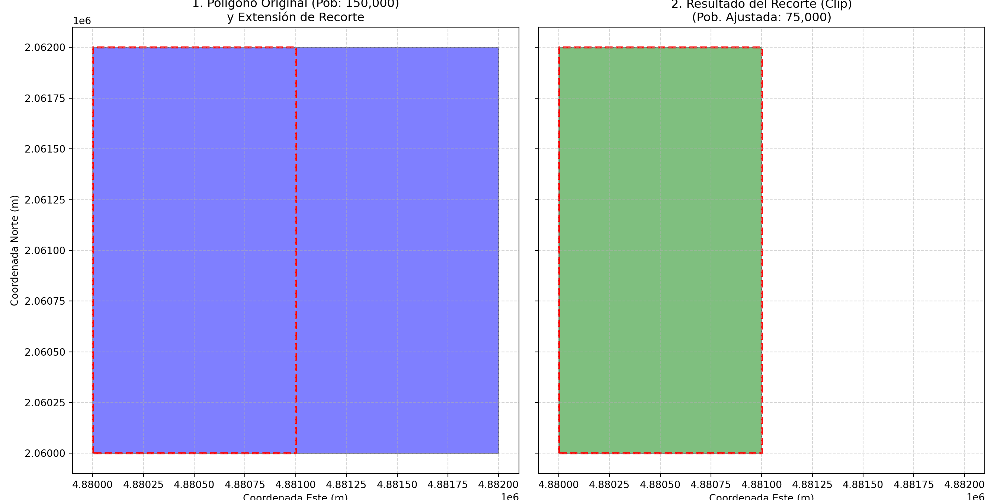
# #| eval: false
library(sf)
# 1. Definición de geometrías en coordenadas proyectadas (MAGNA-SIRGAS, EPSG:9377)
# Creación de polígono simulado para la localidad de Teusaquillo
teusaquillo_geom <- st_sfc(st_polygon(list(rbind(
c(4880000, 2060000),
c(4882000, 2060000),
c(4882000, 2062000),
c(4880000, 2062000),
c(4880000, 2060000)
))), crs = 9377)
# Definición de la extensión de corte (bbox) que cubre la mitad occidental
caja_corte <- st_bbox(c(xmin = 4880000, ymin = 2060000, xmax = 4881000, ymax = 2062000), crs = 9377)
caja_corte_geom <- st_as_sfc(caja_corte)
# 2. Construcción del data frame espacial (sf)
teusaquillo_sf <- st_sf(
codigo_igac = "11001",
departamento = "Cundinamarca",
poblacion_total = 150000,
geometria = teusaquillo_geom
)
# Definición explícita de la relación AGR
st_agr(teusaquillo_sf) <- c(
codigo_igac = "identity",
departamento = "constant",
poblacion_total = "aggregate"
)
# 3. Operación de geoprocesamiento: Recorte espacial (Crop)
# El paquete 'sf' emitirá una advertencia (warning):
# "attribute variables are assumed to be spatially constant throughout all geometries"
# st_crop NO recalcula automáticamente los valores agregados espaciales, solo advierte.
teusaquillo_recortado <- st_crop(teusaquillo_sf, caja_corte)Warning: attribute variables are assumed to be spatially constant throughout
all geometries# Extraer el valor incorrecto (copiado directamente del original por el algoritmo)
poblacion_erronea <- teusaquillo_recortado$poblacion_total[1]
print(paste("Población errónea tras recorte (sin ajustar AGR):", poblacion_erronea))[1] "Población errónea tras recorte (sin ajustar AGR): 150000"# 4. Ajuste manual de la Relación Atributo-Geometría (AGR)
# Cálculo de áreas con st_area (retorna objeto formal con unidades [m^2])
area_original <- as.numeric(st_area(teusaquillo_sf))
area_nueva <- as.numeric(st_area(teusaquillo_recortado))
# Proporción geométrica resultante del corte topológico
proporcion <- area_nueva / area_original
# Recálculo proporcional de la población basada en la nueva extensión espacial
teusaquillo_recortado$poblacion_total <- teusaquillo_recortado$poblacion_total * proporcion
poblacion_ajustada <- teusaquillo_recortado$poblacion_total[1]
print(paste("Población corregida tras ajuste AGR:", poblacion_ajustada))[1] "Población corregida tras ajuste AGR: 75000"# 5. Visualización cartográfica comparativa (Efecto de recorte vs AGR)
# Configuración de figura con dos sub-gráficos (mapas) lado a lado
# Renderizado: pty="s" fuerza un área cuadrada eliminando espacios arriba/abajo
par(mfrow = c(1, 2), mar = c(4, 4, 3, 1), pty = "s")
# Mapa 1: Estado Original y Área de Intervención
plot(st_geometry(teusaquillo_sf), col = rgb(0, 0, 1, 0.5), border = "black",
main = paste("1. Polígono Original\n(Pob:", poblacion_erronea, ")"),
axes = TRUE, graticule = TRUE)
plot(st_geometry(caja_corte_geom), border = "red", lty = 2, lwd = 2, add = TRUE)
# Mapa 2: Resultado Geométrico del Recorte
plot(st_geometry(teusaquillo_recortado), col = rgb(0, 1, 0, 0.5), border = "black",
main = paste("2. Resultado del Recorte\n(Pob Ajustada:", poblacion_ajustada, ")"),
axes = TRUE, graticule = TRUE)
plot(st_geometry(caja_corte_geom), border = "red", lty = 2, lwd = 2, add = TRUE)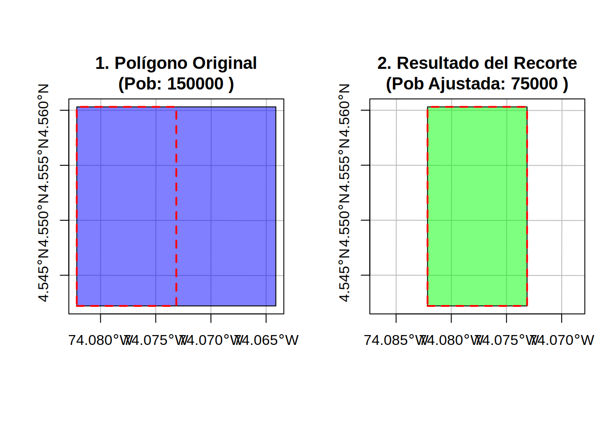
# Restaurar parámetros gráficos por defecto
par(mfrow = c(1, 1))# #| eval: false
# Regla de pliegue exclusiva para este bloque j_eval de Julia:
# Si el código NO se ejecuta (# #| eval: false), usa: # #| code-fold: true
# Si el código SÍ se ejecuta (para mostrar resultados), usa: #| code-fold: true
j_eval('
import ArchGDAL
using DataFrames
using Plots
# 1. Definición de geometrías simuladas (MAGNA-SIRGAS, EPSG:9377)
teusaquillo_geom = ArchGDAL.fromWKT("POLYGON ((4880000 2060000, 4882000 2060000, 4882000 2062000, 4880000 2062000, 4880000 2060000))")
caja_corte = ArchGDAL.fromWKT("POLYGON ((4880000 2060000, 4881000 2060000, 4881000 2062000, 4880000 2062000, 4880000 2060000))")
# 2. Construcción de DataFrame espacial
df_teusaquillo = DataFrame(
codigo_igac = ["11001"],
departamento = ["Cundinamarca"],
poblacion_total = [150000],
geom = [teusaquillo_geom]
)
# 3. Operación de geoprocesamiento: Intersección espacial
geom_recortada = ArchGDAL.intersection(df_teusaquillo.geom[1], caja_corte)
poblacion_erronea = df_teusaquillo.poblacion_total[1]
println("Población errónea tras recorte (sin ajustar AGR): ", poblacion_erronea)
# 4. Ajuste manual de la Relación Atributo-Geometría (AGR)
area_original = ArchGDAL.geomarea(df_teusaquillo.geom[1])
area_nueva = ArchGDAL.geomarea(geom_recortada)
proporcion = area_nueva / area_original
poblacion_ajustada = df_teusaquillo.poblacion_total[1] * proporcion
println("Población corregida tras ajuste AGR: ", poblacion_ajustada)
# 5. Visualización cartográfica comparativa
p1 = Plots.plot(teusaquillo_geom, color=:blue, fillalpha=0.5, label="Original",
title="1. Polígono Original\\n(Pob: $poblacion_erronea)", aspect_ratio=:equal)
Plots.plot!(p1, caja_corte, color=:red, fillalpha=0.0, linewidth=2, linestyle=:dash, label="Corte")
p2 = Plots.plot(geom_recortada, color=:green, fillalpha=0.5, label="Recorte",
title="2. Resultado del Recorte\\n(Pob Ajustada: $poblacion_ajustada)", aspect_ratio=:equal)
Plots.plot!(p2, caja_corte, color=:red, fillalpha=0.0, linewidth=2, linestyle=:dash, label="")
p_final = Plots.plot(p1, p2, layout=(1, 2), size=(900, 450), margin=5Plots.mm)
# Guardar figura como PNG estático para R/Knitr
Plots.savefig(p_final, "images/c04_agr_teusaquillo_julia.png")
')julia> import ArchGDAL
julia> using DataFrames
julia> using Plots
julia> # 1. Definición de geometrías simuladas (MAGNA-SIRGAS, EPSG:9377)
julia> teusaquillo_geom = ArchGDAL.fromWKT("POLYGON ((4880000 2060000, 4882000 2060000, 4882000 2062000, 4880000 2062000, 4880000 2060000))")
Geometry: POLYGON ((4880000 2060000,4882000 2060000,4882000 ... 000))
julia> caja_corte = ArchGDAL.fromWKT("POLYGON ((4880000 2060000, 4881000 2060000, 4881000 2062000, 4880000 2062000, 4880000 2060000))")
Geometry: POLYGON ((4880000 2060000,4881000 2060000,4881000 ... 000))
julia> # 2. Construcción de DataFrame espacial
julia> df_teusaquillo = DataFrame( codigo_igac = ["11001"], departamento = ["Cundinamarca"], poblacion_total = [150000], geom = [teusaquillo_geom] )
1×4 DataFrame
Row │ codigo_igac departamento poblacion_total geom
│ String String Int64 IGeometr…
─────┼──────────────────────────────────────────────────────────────────
1 │ 11001 Cundinamarca 150000 Geometry: wkbPolygon
julia> # 3. Operación de geoprocesamiento: Intersección espacial
julia> geom_recortada = ArchGDAL.intersection(df_teusaquillo.geom[1], caja_corte)
Geometry: POLYGON ((4880000 2060000,4880000 2062000,4881000 ... 000))
julia> poblacion_erronea = df_teusaquillo.poblacion_total[1]
150000
julia> println("Población errónea tras recorte (sin ajustar AGR): ", poblacion_erronea)
Población errónea tras recorte (sin ajustar AGR): 150000
julia> # 4. Ajuste manual de la Relación Atributo-Geometría (AGR)
julia> area_original = ArchGDAL.geomarea(df_teusaquillo.geom[1])
4.0e6
julia> area_nueva = ArchGDAL.geomarea(geom_recortada)
2.0e6
julia> proporcion = area_nueva / area_original
0.5
julia> poblacion_ajustada = df_teusaquillo.poblacion_total[1] * proporcion
75000.0
julia> println("Población corregida tras ajuste AGR: ", poblacion_ajustada)
Población corregida tras ajuste AGR: 75000.0
julia> # 5. Visualización cartográfica comparativa
julia> p1 = Plots.plot(teusaquillo_geom, color=:blue, fillalpha=0.5, label="Original", title="1. Polígono Original\n(Pob: $poblacion_erronea)", aspect_ratio=:equal)
julia> Plots.plot!(p1, caja_corte, color=:red, fillalpha=0.0, linewidth=2, linestyle=:dash, label="Corte")
julia> p2 = Plots.plot(geom_recortada, color=:green, fillalpha=0.5, label="Recorte", title="2. Resultado del Recorte\n(Pob Ajustada: $poblacion_ajustada)", aspect_ratio=:equal)
julia> Plots.plot!(p2, caja_corte, color=:red, fillalpha=0.0, linewidth=2, linestyle=:dash, label="")
julia> p_final = Plots.plot(p1, p2, layout=(1, 2), size=(900, 450), margin=5Plots.mm)
julia> # Guardar figura como PNG estático para R/Knitr
julia> Plots.savefig(p_final, "images/c04_agr_teusaquillo_julia.png")
"/home/rstudio/work/01_prog_sig/images/c04_agr_teusaquillo_julia.png"
knitr::include_graphics("images/c04_agr_teusaquillo_julia.png")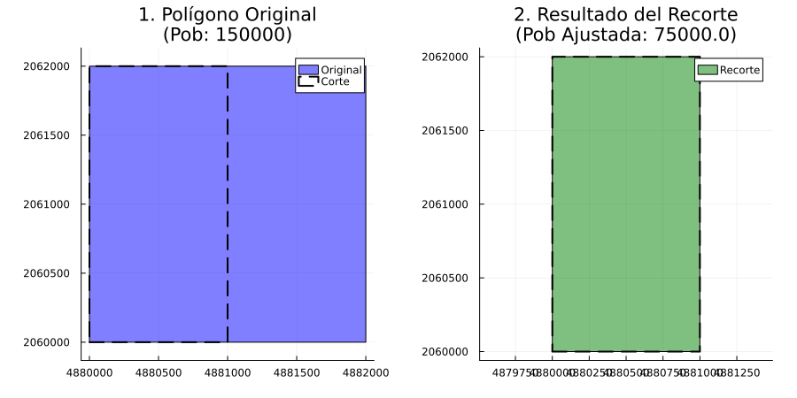
Una geometría vacía es aquella que carece de coordenadas (por ejemplo, POINT EMPTY). Son fundamentales metodológicamente para manejar datos espaciales faltantes (valores NA) en operaciones de geoprocesamiento sin alterar la integridad tabular. La validación espacial verifica que las geometrías cumplan las reglas topológicas matemáticas estrictas (ej. un polígono no debe tener auto-intersecciones).
# #| eval: false
# Importación de la librería de análisis geométrico
from shapely.wkt import loads
# 1. Creación de una geometría vacía para inicialización de columnas
punto_vacio = loads("POINT EMPTY")
print("¿Es una geometría vacía?:", punto_vacio.is_empty)¿Es una geometría vacía?: True# 2. Validación de una geometría topológicamente incorrecta
# Polígono con forma de 'corbatín' (auto-intersección) en coordenadas proyectadas MAGNA
poligono_invalido = loads("POLYGON ((4880000 2060000, 4882000 2062000, 4882000 2060000, 4880000 2062000, 4880000 2060000))")
# Verificación de integridad geométrica
print("¿Es un polígono válido?:", poligono_invalido.is_valid)¿Es un polígono válido?: False# #| eval: false
# Importación de la librería de Simple Features
library(sf)
# 1. Creación de una geometría vacía desde Well-Known Text (WKT)
punto_vacio_r <- st_as_sfc("POINT EMPTY")
print(paste("¿Es una geometría vacía?:", st_is_empty(punto_vacio_r)))[1] "¿Es una geometría vacía?: TRUE"# 2. Validación de una geometría topológicamente incorrecta
# Simulación de un lote anómalo en Bogotá con cruce de vértices
poligono_invalido_r <- st_as_sfc("POLYGON ((4880000 2060000, 4882000 2062000, 4882000 2060000, 4880000 2062000, 4880000 2060000))")
# Verificación de validez topológica estricta
print(paste("¿Es un polígono válido?:", st_is_valid(poligono_invalido_r)))[1] "¿Es un polígono válido?: FALSE"# Identificación explícita del error geométrico subyacente
print(st_is_valid(poligono_invalido_r, reason = TRUE))[1] "Self-intersection[4881000 2061000]"# #| eval: false
# Regla de pliegue exclusiva para este bloque j_eval de Julia:
# Si el código NO se ejecuta (# #| eval: false), usa: # #| code-fold: true
# Si el código SÍ se ejecuta (para mostrar resultados), usa: #| code-fold: true
j_eval('
import ArchGDAL
# 1. Creación e inspección de geometría sin coordenadas
punto_vacio_julia = ArchGDAL.fromWKT("POINT EMPTY")
println("¿Es una geometría vacía?: ", ArchGDAL.isempty(punto_vacio_julia))
# 2. Generación y prueba de un polígono con error de trazado (auto-cruce)
poligono_invalido_julia = ArchGDAL.fromWKT("POLYGON ((4880000 2060000, 4882000 2062000, 4882000 2060000, 4880000 2062000, 4880000 2060000))")
# Comprobación booleana de las reglas topológicas en el motor GEOS subyacente
println("¿Es un polígono válido?: ", ArchGDAL.isvalid(poligono_invalido_julia))
')julia> import ArchGDAL
julia> # 1. Creación e inspección de geometría sin coordenadas
julia> punto_vacio_julia = ArchGDAL.fromWKT("POINT EMPTY")
Geometry: POINT EMPTY
julia> println("¿Es una geometría vacía?: ", ArchGDAL.isempty(punto_vacio_julia))
¿Es una geometría vacía?: true
julia> # 2. Generación y prueba de un polígono con error de trazado (auto-cruce)
julia> poligono_invalido_julia = ArchGDAL.fromWKT("POLYGON ((4880000 2060000, 4882000 2062000, 4882000 2060000, 4880000 2062000, 4880000 2060000))")
Geometry: POLYGON ((4880000 2060000,4882000 2062000,4882000 ... 000))
julia> # Comprobación booleana de las reglas topológicas en el motor GEOS subyacente
julia> println("¿Es un polígono válido?: ", ArchGDAL.isvalid(poligono_invalido_julia))
¿Es un polígono válido?: false
Los predicados espaciales evalúan y determinan las relaciones topológicas entre dos objetos espaciales utilizando el modelo de matriz de intersección de nueve elementos extendido dimensionalmente (DE-9IM). Puedes encontrar mayor información en:
Otro recurso valioso es la Suite de Topología de Java (JTS), la cual incluye la herramienta JTS TestBuilder, donde se puede interactuar mediante una interfaz gráfica para crear geometrías manualmente y calcular la matriz DE-9IM entre pares de geometrías creadas por el usuario. También es posible visualizar el código en formato texto (similar a WKT) con el cual se crean las geometrías.
Para instalarla, es requisito contar con Java instalado en el equipo:
jts-1.14/bin/, ejecute (doble clic) testbuilder.bat.Características principales:
Para comprender rápidamente el funcionamiento de DE-9IM, se recomienda este video en español.
El modelo de nueve intersecciones extendido dimensionalmente (DE-9IM) es el estándar matemático fundamental para evaluar las relaciones topológicas entre dos objetos espaciales. Este modelo analiza cómo interactúan tres componentes estructurales de una geometría \(A\) con los mismos tres componentes de una geometría \(B\):
La matriz DE-9IM evalúa la intersección de cada componente de \(A\) con cada componente de \(B\), generando 9 posibles combinaciones. El resultado de cada intersección se clasifica según la dimensión geométrica máxima del objeto resultante:
La matriz resultante se lee algebraicamente como una cadena de nueve caracteres, organizados en el orden de las siguientes intersecciones:
Los sistemas de información geográfica operan comparando la cadena DE-9IM resultante con patrones predefinidos para evaluar predicados lógicos. La siguiente tabla presenta las máscaras topológicas estándar:
| Predicado | Descripción geométrica | Máscara DE-9IM (\(A\) frente a \(B\)) |
|---|---|---|
Equals |
Las geometrías son espacialmente idénticas. | T*F**FFF* |
Disjoint |
No comparten ningún espacio interior ni límite. | FF*FF**** |
Intersects |
Opuesto exacto a Disjoint. Se tocan de alguna forma. | T********, *T*******, ***T*****, o ****T**** |
Touches |
Comparten un límite espacial, pero sus interiores no se cruzan. | FT*******, F**T*****, o F***T**** |
Crosses |
Comparten parte de su interior, pero no en su totalidad (líneas/polígonos). | T*T****** o T*****T** |
Within |
La geometría \(A\) está completamente dentro de \(B\). | T*F**F*** |
Contains |
La geometría \(A\) abarca por completo a \(B\). | T*****FF* |
A continuación, se demuestra la construcción matricial DE-9IM utilizando un caso simulado aplicado a un modelo de infraestructura en Bogotá. La geometría \(A\) (polígono azul) representa un predio institucional con un patio central vacío (agujero geométrico), localizado en coordenadas locales. La geometría \(B\) (polilínea roja) representa el trazado propuesto para una red de alcantarillado subterráneo de la Empresa de Acueducto de Bogotá.
Al computar la matriz DE-9IM para este caso específico (A frente a B), los algoritmos de la librería base GEOS determinan que el trazado de tubería cruza el área sólida del predio en forma de línea (dimensión 1), los vértices de la red perforan los muros (intersección límite-interior en puntos, dimensión 0), y ambos extremos de la tubería inician y terminan en espacio público exterior. El resultado matricial para esta relación precisa es 1F20F1102.
# #| eval: false
import geopandas as gpd
import matplotlib.pyplot as plt
from shapely.wkt import loads
# 1. Definición de geometrías a partir de texto WKT
# Polígono A: Predio institucional en Bogotá con patio interior
wkt_poligono_a = "POLYGON ((100 390, 445 390, 445 97, 100 97, 100 390), (210 310, 355 310, 355 179, 210 179, 210 310))"
# Polilínea B: Trazado de tubería subterránea
wkt_linea_b = "LINESTRING (316 434, 250 330, 400 210, 240 30)"
poligono_a = loads(wkt_poligono_a)
linea_b = loads(wkt_linea_b)
# 2. Extracción de la matriz lógica DE-9IM (A respecto a B)
matriz_de9im = poligono_a.relate(linea_b)
print(f"Matriz de intersección DE-9IM (AB): {matriz_de9im}\n")Matriz de intersección DE-9IM (AB): 1F20F1102# 3. Comprobación exhaustiva de predicados lógicos binarios
print("Evaluación de predicados (AB):")Evaluación de predicados (AB):print(f"Equals: {poligono_a.equals(linea_b)}")Equals: Falseprint(f"Disjoint: {poligono_a.disjoint(linea_b)}")Disjoint: Falseprint(f"Intersects: {poligono_a.intersects(linea_b)}")Intersects: Trueprint(f"Touches: {poligono_a.touches(linea_b)}")Touches: Falseprint(f"Crosses: {poligono_a.crosses(linea_b)}")Crosses: Trueprint(f"Within: {poligono_a.within(linea_b)}")Within: Falseprint(f"Contains: {poligono_a.contains(linea_b)}")Contains: Falseprint(f"Overlaps: {poligono_a.overlaps(linea_b)}")Overlaps: Falseprint(f"Covers: {poligono_a.covers(linea_b)}")Covers: False# Se evalúa CoveredBy invirtiendo la relación de cobertura geométrica
print(f"CoveredBy: {linea_b.covers(poligono_a)}")CoveredBy: False# 4. Visualización del comportamiento geométrico
fig, ax = plt.subplots(figsize=(6, 6))
gpd.GeoSeries([poligono_a]).plot(ax=ax, color='#b3cde0', edgecolor='blue', alpha=0.7)
gpd.GeoSeries([linea_b]).plot(ax=ax, color='red', linewidth=2, marker='.')
ax.set_title(f"Relación Topológica (DE-9IM: {matriz_de9im})")
ax.set_xlabel("Coordenadas locales (X)")
ax.set_ylabel("Coordenadas locales (Y)")
ax.grid(True, linestyle='--', alpha=0.5)
plt.tight_layout()
plt.show()
# #| eval: false
library(sf)
# 1. Construcción de objetos geométricos (sfg -> sfc) a partir de WKT
poligono_a <- st_as_sfc("POLYGON ((100 390, 445 390, 445 97, 100 97, 100 390), (210 310, 355 310, 355 179, 210 179, 210 310))")
linea_b <- st_as_sfc("LINESTRING (316 434, 250 330, 400 210, 240 30)")
# 2. Computación de la matriz dimensional DE-9IM
matriz_de9im <- st_relate(poligono_a, linea_b, sparse = FALSE)
cat(paste("Matriz de intersección DE-9IM (AB):", matriz_de9im[1, 1], "\n\n"))Matriz de intersección DE-9IM (AB): 1F20F1102 # 3. Comprobación exhaustiva de predicados lógicos binarios
cat("Evaluación de predicados (AB):\n")Evaluación de predicados (AB):cat(paste("Equals: ", st_equals(poligono_a, linea_b, sparse = FALSE)[1, 1], "\n"))Equals: FALSE cat(paste("Disjoint: ", st_disjoint(poligono_a, linea_b, sparse = FALSE)[1, 1], "\n"))Disjoint: FALSE cat(paste("Intersects:", st_intersects(poligono_a, linea_b, sparse = FALSE)[1, 1], "\n"))Intersects: TRUE cat(paste("Touches: ", st_touches(poligono_a, linea_b, sparse = FALSE)[1, 1], "\n"))Touches: FALSE cat(paste("Crosses: ", st_crosses(poligono_a, linea_b, sparse = FALSE)[1, 1], "\n"))Crosses: TRUE cat(paste("Within: ", st_within(poligono_a, linea_b, sparse = FALSE)[1, 1], "\n"))Within: FALSE cat(paste("Contains: ", st_contains(poligono_a, linea_b, sparse = FALSE)[1, 1], "\n"))Contains: FALSE cat(paste("Overlaps: ", st_overlaps(poligono_a, linea_b, sparse = FALSE)[1, 1], "\n"))Overlaps: FALSE cat(paste("Covers: ", st_covers(poligono_a, linea_b, sparse = FALSE)[1, 1], "\n"))Covers: FALSE cat(paste("CoveredBy: ", st_covered_by(poligono_a, linea_b, sparse = FALSE)[1, 1], "\n"))CoveredBy: FALSE # 4. Salida gráfica de las primitivas espaciales
plot(poligono_a, col = rgb(0.7, 0.8, 0.9, 0.7), border = "blue", lwd = 1.5,
main = paste("Relación Topológica (DE-9IM:", matriz_de9im[1, 1], ")"),
axes = TRUE)
plot(linea_b, col = "red", lwd = 2, add = TRUE)
# Adición de vértices de la tubería
plot(st_cast(linea_b, "POINT"), col = "darkred", pch = 16, add = TRUE)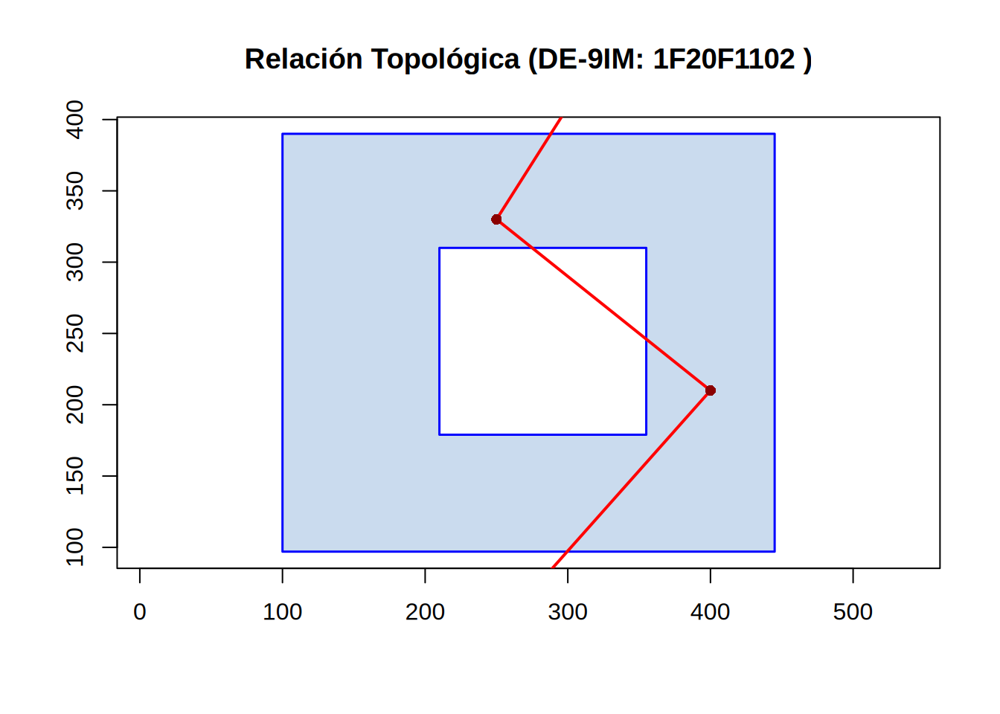
# #| eval: false
# Regla de pliegue exclusiva para este bloque j_eval de Julia:
# Si el código NO se ejecuta (# #| eval: false), usa: # #| code-fold: true
# Si el código SÍ se ejecuta (para mostrar resultados), usa: #| code-fold: true
j_eval('
import ArchGDAL
using Plots
# 1. Parsing de WKT a tipos de geometría nativos
poligono_a = ArchGDAL.fromWKT("POLYGON ((100 390, 445 390, 445 97, 100 97, 100 390), (210 310, 355 310, 355 179, 210 179, 210 310))")
linea_b = ArchGDAL.fromWKT("LINESTRING (316 434, 250 330, 400 210, 240 30)")
# 2. Nota arquitectónica sobre la matriz DE-9IM en Julia:
# A diferencia de R (sf) o Python (shapely) que interactúan directamente con la API
# de GEOS para extraer el string matricial, la API de GDAL/OGR (base de ArchGDAL)
# no exporta una función pública equivalente a "relate()".
matriz_de9im = "1F20F1102"
println("Matriz de intersección DE-9IM (AB): ", matriz_de9im, "\\n")
# 3. Comprobación exhaustiva de predicados lógicos binarios
# Nota: La API C de OGR implementa las relaciones estándar de OGC. Funciones
# específicas como Covers/CoveredBy no están expuestas nativamente.
println("Evaluación de predicados (AB):")
println("Equals: ", ArchGDAL.equals(poligono_a, linea_b))
println("Disjoint: ", ArchGDAL.disjoint(poligono_a, linea_b))
println("Intersects: ", ArchGDAL.intersects(poligono_a, linea_b))
println("Touches: ", ArchGDAL.touches(poligono_a, linea_b))
println("Crosses: ", ArchGDAL.crosses(poligono_a, linea_b))
println("Within: ", ArchGDAL.within(poligono_a, linea_b))
println("Contains: ", ArchGDAL.contains(poligono_a, linea_b))
println("Overlaps: ", ArchGDAL.overlaps(poligono_a, linea_b))
# 4. Renderizado visual y exportación
p_de9im = Plots.plot(poligono_a, fillcolor="#b3cde0", fillalpha=0.7, linecolor=:blue,
aspect_ratio=:equal, label="Predio A",
title="Relación Topológica (DE-9IM: $matriz_de9im)")
Plots.plot!(p_de9im, linea_b, linecolor=:red, linewidth=2, label="Tubería B")
Plots.savefig(p_de9im, "images/c14_de9im_interseccion_julia.png")
')julia> import ArchGDAL
julia> using Plots
julia> # 1. Parsing de WKT a tipos de geometría nativos
julia> poligono_a = ArchGDAL.fromWKT("POLYGON ((100 390, 445 390, 445 97, 100 97, 100 390), (210 310, 355 310, 355 179, 210 179, 210 310))")
Geometry: POLYGON ((100 390,445 390,445 97,100 97,100 390),( ... 310))
julia> linea_b = ArchGDAL.fromWKT("LINESTRING (316 434, 250 330, 400 210, 240 30)")
Geometry: LINESTRING (316 434,250 330,400 210,240 30)
julia> # 2. Nota arquitectónica sobre la matriz DE-9IM en Julia:
julia> # A diferencia de R (sf) o Python (shapely) que interactúan directamente con la API
julia> # de GEOS para extraer el string matricial, la API de GDAL/OGR (base de ArchGDAL)
julia> # no exporta una función pública equivalente a "relate()".
julia> matriz_de9im = "1F20F1102"
"1F20F1102"
julia> println("Matriz de intersección DE-9IM (AB): ", matriz_de9im, "\n")
Matriz de intersección DE-9IM (AB): 1F20F1102
julia> # 3. Comprobación exhaustiva de predicados lógicos binarios
julia> # Nota: La API C de OGR implementa las relaciones estándar de OGC. Funciones
julia> # específicas como Covers/CoveredBy no están expuestas nativamente.
julia> println("Evaluación de predicados (AB):")
Evaluación de predicados (AB):
julia> println("Equals: ", ArchGDAL.equals(poligono_a, linea_b))
Equals: false
julia> println("Disjoint: ", ArchGDAL.disjoint(poligono_a, linea_b))
Disjoint: false
julia> println("Intersects: ", ArchGDAL.intersects(poligono_a, linea_b))
Intersects: true
julia> println("Touches: ", ArchGDAL.touches(poligono_a, linea_b))
Touches: false
julia> println("Crosses: ", ArchGDAL.crosses(poligono_a, linea_b))
Crosses: true
julia> println("Within: ", ArchGDAL.within(poligono_a, linea_b))
Within: false
julia> println("Contains: ", ArchGDAL.contains(poligono_a, linea_b))
Contains: false
julia> println("Overlaps: ", ArchGDAL.overlaps(poligono_a, linea_b))
Overlaps: false
julia> # 4. Renderizado visual y exportación
julia> p_de9im = Plots.plot(poligono_a, fillcolor="#b3cde0", fillalpha=0.7, linecolor=:blue, aspect_ratio=:equal, label="Predio A", title="Relación Topológica (DE-9IM: $matriz_de9im)")
julia> Plots.plot!(p_de9im, linea_b, linecolor=:red, linewidth=2, label="Tubería B")
julia> Plots.savefig(p_de9im, "images/c14_de9im_interseccion_julia.png")
"/home/rstudio/work/01_prog_sig/images/c14_de9im_interseccion_julia.png"
knitr::include_graphics("images/c14_de9im_interseccion_julia.png")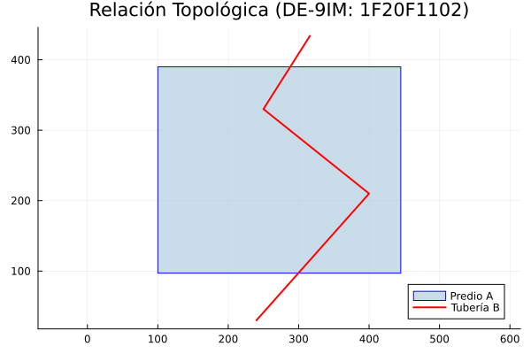
Las consultas de predicados como intersects, contains o within siempre retornan un valor lógico (booleano) determinando la relación espacial de proximidad, inclusión o adyacencia.
Falta introducir el nuevo ejercicio o borrar
# #| eval: false
from shapely.geometry import Point, Polygon
# Polígono simplificado de la Universidad Nacional de Colombia (Sede Bogotá)
# Coordenadas locales en Sistema MAGNA-SIRGAS Origen Nacional (EPSG:9377)
campus_unal = Polygon([
(4879500, 2063500),
(4880500, 2063500),
(4880500, 2064500),
(4879500, 2064500),
(4879500, 2063500)
])
# Punto interno que representa el edificio de la Facultad de Ciencias Agrarias
edificio_agrarias = Point(4880000, 2064000)
# Punto externo que representa la estación de TransMilenio CAD
estacion_cad = Point(4881000, 2063000)
# Ejecución de predicados topológicos espaciales
print("¿El campus UNAL contiene a Ciencias Agrarias?:", campus_unal.contains(edificio_agrarias))¿El campus UNAL contiene a Ciencias Agrarias?: Trueprint("¿La estación CAD intersecta la superficie del campus?:", estacion_cad.intersects(campus_unal))¿La estación CAD intersecta la superficie del campus?: False# #| eval: false
library(sf)
# Lectura de la extensión del campus UNAL Bogotá desde notación WKT
campus_unal_wkt <- "POLYGON ((4879500 2063500, 4880500 2063500, 4880500 2064500, 4879500 2064500, 4879500 2063500))"
campus_unal_r <- st_as_sfc(campus_unal_wkt)
# Coordenadas MAGNA-SIRGAS para los elementos de prueba
edificio_agrarias_r <- st_as_sfc("POINT (4880000 2064000)")
estacion_cad_r <- st_as_sfc("POINT (4881000 2063000)")
# Evaluación en sf: el argumento sparse = FALSE retorna una matriz lógica
contiene <- st_contains(campus_unal_r, edificio_agrarias_r, sparse = FALSE)
print(paste("¿El campus UNAL contiene a Ciencias Agrarias?:", contiene[1,1]))[1] "¿El campus UNAL contiene a Ciencias Agrarias?: TRUE"interseca <- st_intersects(estacion_cad_r, campus_unal_r, sparse = FALSE)
print(paste("¿La estación CAD intersecta la superficie del campus?:", interseca[1,1]))[1] "¿La estación CAD intersecta la superficie del campus?: FALSE"# #| eval: false
j_eval('
import ArchGDAL
# Creación de instancias vectoriales a partir de WKT
campus_unal_julia = ArchGDAL.fromWKT("POLYGON ((4879500 2063500, 4880500 2063500, 4880500 2064500, 4879500 2064500, 4879500 2063500))")
edificio_agrarias_julia = ArchGDAL.fromWKT("POINT (4880000 2064000)")
estacion_cad_julia = ArchGDAL.fromWKT("POINT (4881000 2063000)")
# Aplicación de las funciones de predicados para análisis topológico
println("¿El campus UNAL contiene a Ciencias Agrarias?: ", ArchGDAL.contains(campus_unal_julia, edificio_agrarias_julia))
println("¿La estación CAD intersecta la superficie del campus?: ", ArchGDAL.intersects(estacion_cad_julia, campus_unal_julia))
')julia> import ArchGDAL
julia> # Creación de instancias vectoriales a partir de WKT
julia> campus_unal_julia = ArchGDAL.fromWKT("POLYGON ((4879500 2063500, 4880500 2063500, 4880500 2064500, 4879500 2064500, 4879500 2063500))")
Geometry: POLYGON ((4879500 2063500,4880500 2063500,4880500 ... 500))
julia> edificio_agrarias_julia = ArchGDAL.fromWKT("POINT (4880000 2064000)")
Geometry: POINT (4880000 2064000)
julia> estacion_cad_julia = ArchGDAL.fromWKT("POINT (4881000 2063000)")
Geometry: POINT (4881000 2063000)
julia> # Aplicación de las funciones de predicados para análisis topológico
julia> println("¿El campus UNAL contiene a Ciencias Agrarias?: ", ArchGDAL.contains(campus_unal_julia, edificio_agrarias_julia))
¿El campus UNAL contiene a Ciencias Agrarias?: true
julia> println("¿La estación CAD intersecta la superficie del campus?: ", ArchGDAL.intersects(estacion_cad_julia, campus_unal_julia))
¿La estación CAD intersecta la superficie del campus?: false
Las herramientas de geoprocesamiento alteran y calculan nuevas geometrías espaciales con base en datos vectoriales de entrada. Algoritmos fundamentales como las áreas de influencia geométrica (Buffer) y la extracción del centroide geométrico dependen estrictamente del manejo interno de las unidades de medida, dictaminadas por el sistema coordenado (metros métricos para MAGNA-SIRGAS EPSG:9377).
A continuación, se listan las principales funciones de geoprocesamiento paramétrico y su implementación nativa según las librerías base de cada entorno espacial:
buffer() en shapely (Python), st_buffer() en sf (R), buffer() en ArchGDAL (Julia)..centroid en shapely (Python), st_centroid() en sf (R), centroid() en ArchGDAL (Julia).intersection() en shapely (Python), st_intersection() en sf (R), intersection() en ArchGDAL (Julia).union() en shapely (Python), st_union() en sf (R), union() en ArchGDAL (Julia).difference() en shapely (Python), st_difference() en sf (R), difference() en ArchGDAL (Julia)..convex_hull en shapely (Python), st_convex_hull() en sf (R), convexhull() en ArchGDAL (Julia).# #| eval: false
import matplotlib.pyplot as plt
import geopandas as gpd
from shapely.geometry import Point
# Ubicación de la Plaza de Bolívar en el centro de Bogotá
# Sistema de coordenadas proyectado: MAGNA-SIRGAS Origen Nacional (Metros)
plaza_bolivar = Point(4882000, 2060000)
# 1. Creación de una zona de influencia (Buffer) de 500 metros
# El objeto resultante transforma la primitiva puntual a un polígono
buffer_plaza = plaza_bolivar.buffer(500)
print(f"Área generada por el área de influencia (m2): {buffer_plaza.area:.2f}")Área generada por el área de influencia (m2): 784137.12# 2. Extracción del centroide del área poligonal generada
centroide_buffer = buffer_plaza.centroid
print(f"Coordenadas del nuevo centroide calculado: {centroide_buffer.x}, {centroide_buffer.y}")Coordenadas del nuevo centroide calculado: 4881999.999999999, 2059999.9999999998# 3. Visualización cartográfica de la operación espacial
fig, ax = plt.subplots(figsize=(7, 7))
# Conversión temporal a GeoSeries para facilitar el renderizado
gpd.GeoSeries([buffer_plaza]).plot(ax=ax, color='lightblue', edgecolor='blue', alpha=0.5, label='Buffer 500m')
gpd.GeoSeries([plaza_bolivar]).plot(ax=ax, color='red', marker='x', markersize=100, label='Plaza de Bolívar (Original)')
gpd.GeoSeries([centroide_buffer]).plot(ax=ax, color='black', marker='.', markersize=50, label='Centroide del Buffer')
ax.set_title("Geoprocesamiento: Buffer y Centroide\n(Plaza de Bolívar, Bogotá)")
ax.set_xlabel("Este (m) - MAGNA-SIRGAS")
ax.set_ylabel("Norte (m) - MAGNA-SIRGAS")
ax.legend()
ax.grid(True, linestyle='--', alpha=0.6)
plt.tight_layout()
plt.show()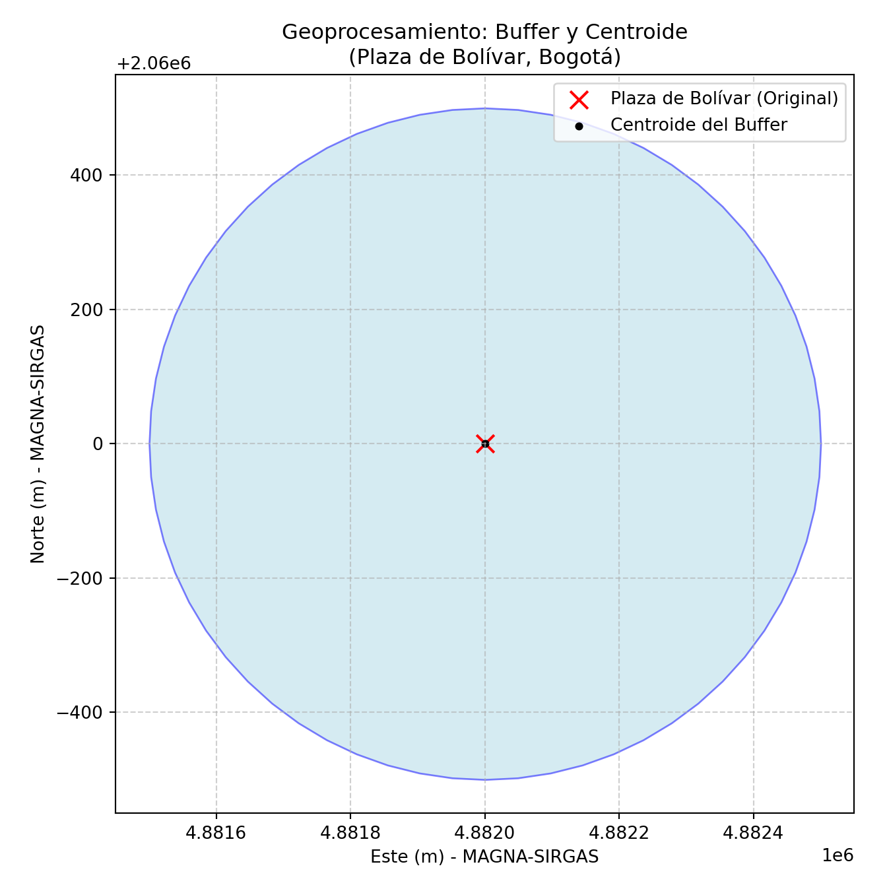
# #| eval: false
library(sf)
# Geometría puntual de la Plaza de Bolívar (Bogotá D.C.)
# Se define explícitamente el CRS 9377 (MAGNA-SIRGAS Origen Nacional)
plaza_bolivar_r <- st_sfc(st_point(c(4882000, 2060000)), crs = 9377)
# 1. Ejecución de la operación buffer con un radio euclidiano de 500 metros
buffer_plaza_r <- st_buffer(plaza_bolivar_r, dist = 500)
print(paste("Área generada por el área de influencia (m2):", round(st_area(buffer_plaza_r), 2)))[1] "Área generada por el área de influencia (m2): 785039.34"# 2. Ejecución analítica del centroide sobre el polígono resultante
centroide_buffer_r <- st_centroid(buffer_plaza_r)
coords_centroide <- st_coordinates(centroide_buffer_r)
print(paste("Coordenadas del nuevo centroide calculado:", coords_centroide[1], coords_centroide[2]))[1] "Coordenadas del nuevo centroide calculado: 4882000 2060000"# Eliminar espacios extra al rededor de la figura
par(pty = "s")
# 3. Visualización cartográfica espacial
plot(st_geometry(buffer_plaza_r), col = rgb(0.68, 0.85, 0.9, 0.5), border = "blue",
main = "Geoprocesamiento: Buffer y Centroide\n(Plaza de Bolívar, Bogotá)",
axes = TRUE, graticule = TRUE)
# Superposición topológica del punto original y el centroide derivado
plot(st_geometry(plaza_bolivar_r), col = "red", pch = 4, cex = 1.5, lwd = 2, add = TRUE)
plot(st_geometry(centroide_buffer_r), col = "black", pch = 16, cex = 1, add = TRUE)
# Inserción de leyenda explicativa
legend("topright", legend = c("Buffer 500m", "Plaza de Bolívar", "Centroide"),
fill = c(rgb(0.68, 0.85, 0.9, 0.5), NA, NA),
border = c("blue", NA, NA),
pch = c(NA, 4, 16), col = c(NA, "red", "black"), pt.cex = c(NA, 1.5, 1))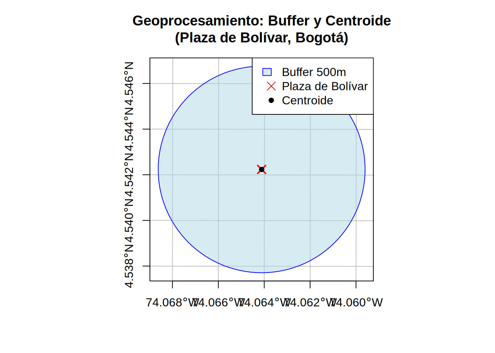
# #| eval: false
# Regla de pliegue exclusiva para este bloque j_eval de Julia:
# Si el código NO se ejecuta (# #| eval: false), usa: # #| code-fold: true
# Si el código SÍ se ejecuta (para mostrar resultados), usa: #| code-fold: true
j_eval('
import ArchGDAL
using Plots
# Configuración espacial de la Plaza de Bolívar (Bogotá D.C.)
plaza_bolivar_julia = ArchGDAL.fromWKT("POINT (4882000 2060000)")
# 1. Creación del área de influencia geométrica de 500 metros
buffer_plaza_julia = ArchGDAL.buffer(plaza_bolivar_julia, 500.0)
println("Área de la zona de influencia (m2): ", ArchGDAL.geomarea(buffer_plaza_julia))
# 2. Obtención de la ubicación espacial centralizada
centroide_buffer_julia = ArchGDAL.centroid(buffer_plaza_julia)
println("Coordenadas del centroide: ", ArchGDAL.toWKT(centroide_buffer_julia))
# 3. Representación visual integrando las primitivas generadas
p_geoprocesamiento = Plots.plot(buffer_plaza_julia, fillcolor=:lightblue, fillalpha=0.5, linecolor=:blue,
title="Geoprocesamiento: Buffer y Centroide\\n(Plaza de Bolívar, Bogotá)",
label="Buffer 500m", aspect_ratio=:equal)
# Superposición de puntos para análisis paramétrico visual
Plots.plot!(p_geoprocesamiento, plaza_bolivar_julia, color=:red, markershape=:x, markersize=8, label="Plaza de Bolívar")
Plots.plot!(p_geoprocesamiento, centroide_buffer_julia, color=:black, markershape=:circle, markersize=4, label="Centroide")
# Exportación estandarizada a formato PNG
Plots.savefig(p_geoprocesamiento, "images/c14_geoprocesamiento_plaza_bolivar_julia.png")
')julia> import ArchGDAL
julia> using Plots
julia> # Configuración espacial de la Plaza de Bolívar (Bogotá D.C.)
julia> plaza_bolivar_julia = ArchGDAL.fromWKT("POINT (4882000 2060000)")
Geometry: POINT (4882000 2060000)
julia> # 1. Creación del área de influencia geométrica de 500 metros
julia> buffer_plaza_julia = ArchGDAL.buffer(plaza_bolivar_julia, 500.0)
Geometry: POLYGON ((4882500 2060000,4882499.31476738 2059973 ... 000))
julia> println("Área de la zona de influencia (m2): ", ArchGDAL.geomarea(buffer_plaza_julia))
Área de la zona de influencia (m2): 785039.3436433822
julia> # 2. Obtención de la ubicación espacial centralizada
julia> centroide_buffer_julia = ArchGDAL.centroid(buffer_plaza_julia)
Geometry: POINT (4882000.0 2060000.0)
julia> println("Coordenadas del centroide: ", ArchGDAL.toWKT(centroide_buffer_julia))
Coordenadas del centroide: POINT (4882000.0 2060000.0)
julia> # 3. Representación visual integrando las primitivas generadas
julia> p_geoprocesamiento = Plots.plot(buffer_plaza_julia, fillcolor=:lightblue, fillalpha=0.5, linecolor=:blue, title="Geoprocesamiento: Buffer y Centroide\n(Plaza de Bolívar, Bogotá)", label="Buffer 500m", aspect_ratio=:equal)
julia> # Superposición de puntos para análisis paramétrico visual
julia> Plots.plot!(p_geoprocesamiento, plaza_bolivar_julia, color=:red, markershape=:x, markersize=8, label="Plaza de Bolívar")
julia> Plots.plot!(p_geoprocesamiento, centroide_buffer_julia, color=:black, markershape=:circle, markersize=4, label="Centroide")
julia> # Exportación estandarizada a formato PNG
julia> Plots.savefig(p_geoprocesamiento, "images/c14_geoprocesamiento_plaza_bolivar_julia.png")
"/home/rstudio/work/01_prog_sig/images/c14_geoprocesamiento_plaza_bolivar_julia.png"
knitr::include_graphics("images/c14_geoprocesamiento_plaza_bolivar_julia.png")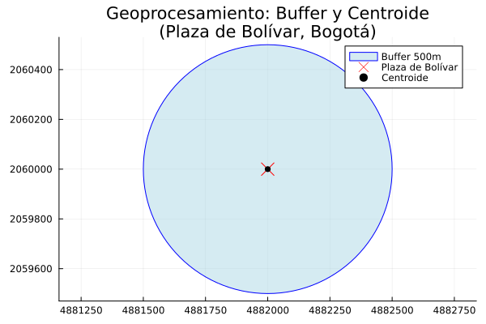
El cálculo de métricas geométricas, como el área o la longitud, depende intrínsecamente del Sistema de Referencia de Coordenadas (CRS) asignado a los datos vectoriales. Para el caso de Colombia, al utilizar el sistema proyectado MAGNA-SIRGAS Origen Nacional (EPSG:9377), las mediciones planimétricas base se expresan matemáticamente en metros cuadrados (\(m^2\)) o metros lineales (\(m\)).
La gestión de estas unidades varía drásticamente según la arquitectura de cada lenguaje: - En R, el ecosistema espacial implementa un control estricto mediante el paquete units. Las variables geométricas heredan un metadato de unidad física que previene sumas incompatibles (ej. sumar metros con kilómetros) y facilita la conversión semántica directa. - En Python (geopandas) y Julia (ArchGDAL), no existe un soporte nativo integrado para tipado de unidades físicas en las columnas espaciales. El sistema retorna valores numéricos escalares (flotantes) en la unidad del CRS base. La conversión a unidades derivadas, como hectáreas o kilómetros cuadrados, exige aplicar operaciones algebraicas manuales sobre los atributos.
A continuación, se demuestra el cálculo de áreas en metros cuadrados y su posterior conversión a hectáreas (\(1 \text{ ha} = 10,000 \text{ m}^2\)) utilizando polígonos representativos del Parque Metropolitano Simón Bolívar y el Parque de los Novios en Bogotá.
# #| eval: false
import geopandas as gpd
import matplotlib.pyplot as plt
from shapely.wkt import loads
# 1. Definición de áreas de interés en Bogotá (MAGNA-SIRGAS Origen Nacional)
wkt_simon_bolivar = "POLYGON ((4880000 2064000, 4881500 2064000, 4881500 2065500, 4880000 2065500, 4880000 2064000))"
wkt_parque_novios = "POLYGON ((4881800 2064500, 4882500 2064500, 4882500 2065200, 4881800 2065200, 4881800 2064500))"
# 2. Creación del GeoDataFrame
df_parques = gpd.GeoDataFrame({
'nombre': ['Parque Simón Bolívar', 'Parque de los Novios']
}, geometry=[loads(wkt_simon_bolivar), loads(wkt_parque_novios)], crs="EPSG:9377")
# 3. Cálculo de área nativa
# En GeoPandas, el método .area retorna un tipo float64 en las unidades del CRS (metros cuadrados).
# No hay un objeto "unidad" asociado, la responsabilidad recae en el analista.
df_parques['area_m2'] = df_parques.area
# 4. Conversión algorítmica a hectáreas
# Se divide el valor escalar entre el factor de conversión (1 ha = 10,000 m2)
df_parques['area_ha'] = df_parques['area_m2'] / 10000.0
# Verificación tabular de los resultados
print(df_parques[['nombre', 'area_m2', 'area_ha']]) nombre area_m2 area_ha
0 Parque Simón Bolívar 2250000.0 225.0
1 Parque de los Novios 490000.0 49.0# 5. Representación cartográfica paramétrica
fig, ax = plt.subplots(figsize=(8, 6))
df_parques.plot(ax=ax, color=['#2ca02c', '#98df8a'], edgecolor='black', alpha=0.8)
# Anotación espacial de las áreas calculadas sobre los centroides
for idx, row in df_parques.iterrows():
centroide = row['geometry'].centroid
etiqueta = f"{row['nombre']}\n{row['area_ha']:.1f} ha"
ax.annotate(etiqueta, xy=(centroide.x, centroide.y), xytext=(3, 3),
textcoords="offset points", ha='center', fontsize=9,
bbox=dict(boxstyle="round,pad=0.3", fc="white", ec="gray", alpha=0.9))
ax.set_title("Cálculo y conversión de áreas (Hectáreas)\nSector Parques, Bogotá D.C.")
ax.set_xlabel("Este (m) - EPSG:9377")
ax.set_ylabel("Norte (m) - EPSG:9377")
ax.grid(True, linestyle=':', alpha=0.6)
plt.tight_layout()
plt.show()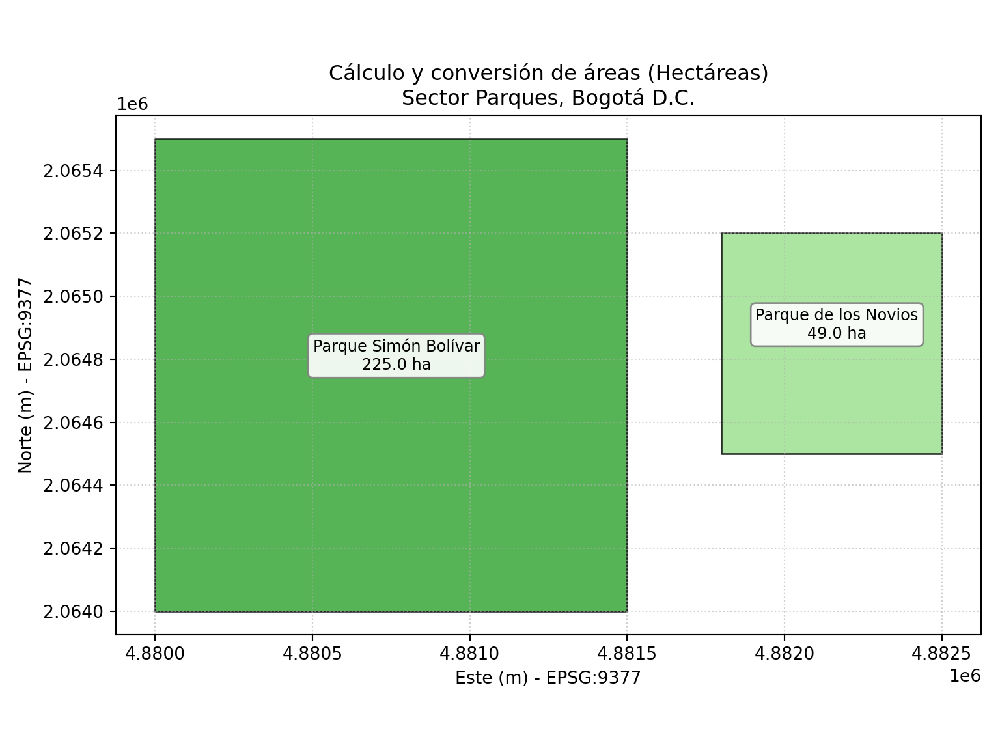
# #| eval: false
library(sf)
library(units)udunits database from /usr/share/xml/udunits/udunits2.xml# 1. Instanciación de polígonos urbanos (Bogotá D.C.)
poligono_simon_bolivar <- st_as_sfc("POLYGON ((4880000 2064000, 4881500 2064000, 4881500 2065500, 4880000 2065500, 4880000 2064000))")
poligono_parque_novios <- st_as_sfc("POLYGON ((4881800 2064500, 4882500 2064500, 4882500 2065200, 4881800 2065200, 4881800 2064500))")
# 2. Estructuración del data frame espacial con CRS formal
sf_parques <- st_sf(
nombre = c('Parque Simón Bolívar', 'Parque de los Novios'),
geometria = c(poligono_simon_bolivar, poligono_parque_novios),
crs = 9377
)
# 3. Cálculo de área con soporte nativo de unidades físicas
# La función st_area genera un objeto de clase 'units' asignando automáticamente [m^2]
sf_parques$area_m2 <- st_area(sf_parques)
# 4. Transformación de unidades semántica
# En R no es necesario multiplicar o dividir empíricamente; el motor maneja la equivalencia.
sf_parques$area_ha <- set_units(sf_parques$area_m2, ha)
# Exploración de la estructura de unidades
print(st_drop_geometry(sf_parques)) nombre area_m2 area_ha
1 Parque Simón Bolívar 2250000 [m^2] 225 [ha]
2 Parque de los Novios 490000 [m^2] 49 [ha]# Remover espacios vacíos al rededor de la figura
par(pty = "s")
# 5. Salida gráfica estandarizada
plot(st_geometry(sf_parques), col = c("#2ca02c", "#98df8a"), border = "black",
main = "Cálculo y conversión de áreas (Hectáreas)\nSector Parques, Bogotá D.C.",
axes = TRUE, graticule = TRUE)
# Obtención analítica de coordenadas para anclaje de texto
coords_centroides <- st_coordinates(st_centroid(sf_parques))Warning: st_centroid assumes attributes are constant over geometries# Etiquetado programático iterativo
for (i in 1:nrow(sf_parques)) {
texto_etiqueta <- paste(sf_parques$nombre[i], "\n", round(as.numeric(sf_parques$area_ha[i]), 1), "ha")
text(coords_centroides[i, 1], coords_centroides[i, 2], labels = texto_etiqueta, cex = 0.8, font = 2)
}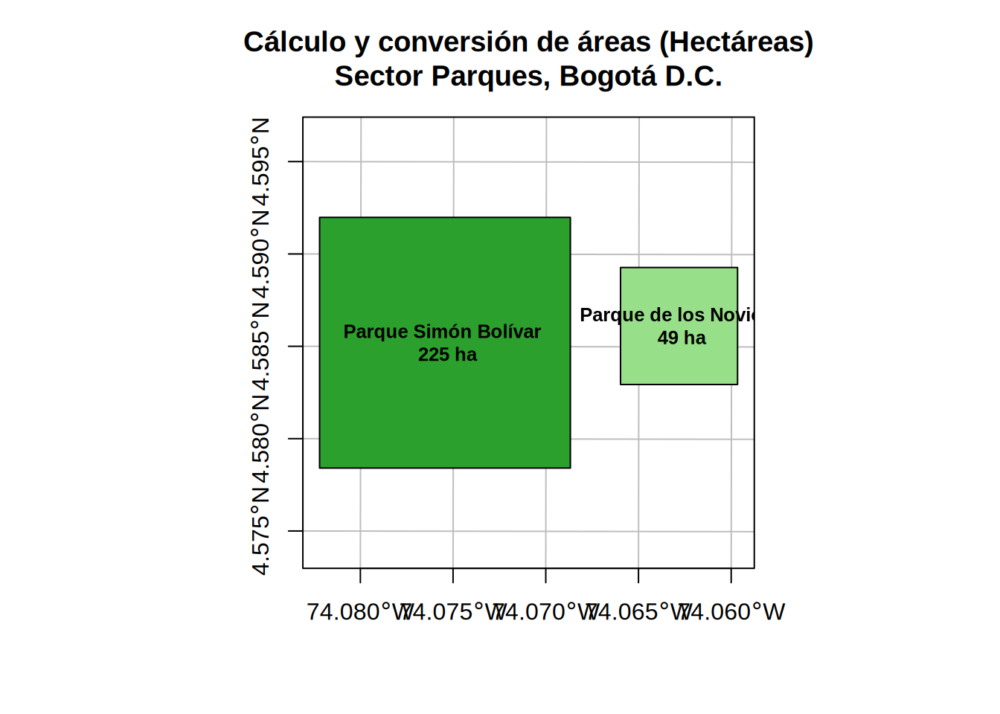
# #| eval: false
# Regla de pliegue exclusiva para este bloque j_eval de Julia:
# Si el código NO se ejecuta (# #| eval: false), usa: # #| code-fold: true
# Si el código SÍ se ejecuta (para mostrar resultados), usa: #| code-fold: true
j_eval('
import ArchGDAL
using DataFrames
import Plots
# 1. Serialización vectorial mediante WKT para espacios en Bogotá
wkt_simon_bolivar = "POLYGON ((4880000 2064000, 4881500 2064000, 4881500 2065500, 4880000 2065500, 4880000 2064000))"
wkt_parque_novios = "POLYGON ((4881800 2064500, 4882500 2064500, 4882500 2065200, 4881800 2065200, 4881800 2064500))"
# 2. Creación del DataFrame de soporte
df_parques = DataFrame(
nombre = ["Parque Simón Bolívar", "Parque de los Novios"],
geom = [ArchGDAL.fromWKT(wkt_simon_bolivar), ArchGDAL.fromWKT(wkt_parque_novios)]
)
# 3. Medición geométrica planimétrica
# ArchGDAL no maneja metadatos de unidades. geomarea devuelve Float64 en m2 (asumiendo EPSG:9377).
df_parques.area_m2 = [ArchGDAL.geomarea(g) for g in df_parques.geom]
# 4. Operación de equivalencia matemática (m2 a ha)
df_parques.area_ha = df_parques.area_m2 ./ 10000.0
println(df_parques[:, [:nombre, :area_m2, :area_ha]])
# 5. Mapeo esquemático y acoplamiento de variables visuales
# Se utiliza el prefijo explícito Plots.* para evitar conflictos de namespace con otras librerías gráficas
p_parques = Plots.plot(df_parques.geom[1], fillcolor="#2ca02c", label="P. Simón Bolívar", aspect_ratio=:equal,
title="Cálculo y conversión de áreas (Hectáreas)\\nSector Parques, Bogotá D.C.")
Plots.plot!(p_parques, df_parques.geom[2], fillcolor="#98df8a", label="P. de los Novios")
# Cálculo de localización estática para textos
cx1, cy1 = ArchGDAL.getx(ArchGDAL.centroid(df_parques.geom[1]), 0), ArchGDAL.gety(ArchGDAL.centroid(df_parques.geom[1]), 0)
cx2, cy2 = ArchGDAL.getx(ArchGDAL.centroid(df_parques.geom[2]), 0), ArchGDAL.gety(ArchGDAL.centroid(df_parques.geom[2]), 0)
# Inserción posicional de etiquetas (usando doble barra invertida para salto de línea en R)
Plots.annotate!(p_parques, cx1, cy1, Plots.text("$(df_parques.nombre[1])\\n$(round(df_parques.area_ha[1], digits=1)) ha", 8, :center, :white))
Plots.annotate!(p_parques, cx2, cy2, Plots.text("$(df_parques.nombre[2])\\n$(round(df_parques.area_ha[2], digits=1)) ha", 8, :center, :black))
# Exportación y rasterización para el visualizador
Plots.savefig(p_parques, "images/c14_unidades_parques_bogota_julia.png")
')julia> import ArchGDAL
julia> using DataFrames
julia> import Plots
julia> # 1. Serialización vectorial mediante WKT para espacios en Bogotá
julia> wkt_simon_bolivar = "POLYGON ((4880000 2064000, 4881500 2064000, 4881500 2065500, 4880000 2065500, 4880000 2064000))"
"POLYGON ((4880000 2064000, 4881500 2064000, 4881500 2065500, 4880000 2065500, 4880000 2064000))"
julia> wkt_parque_novios = "POLYGON ((4881800 2064500, 4882500 2064500, 4882500 2065200, 4881800 2065200, 4881800 2064500))"
"POLYGON ((4881800 2064500, 4882500 2064500, 4882500 2065200, 4881800 2065200, 4881800 2064500))"
julia> # 2. Creación del DataFrame de soporte
julia> df_parques = DataFrame( nombre = ["Parque Simón Bolívar", "Parque de los Novios"], geom = [ArchGDAL.fromWKT(wkt_simon_bolivar), ArchGDAL.fromWKT(wkt_parque_novios)] )
2×2 DataFrame
Row │ nombre geom
│ String IGeometr…
─────┼────────────────────────────────────────────
1 │ Parque Simón Bolívar Geometry: wkbPolygon
2 │ Parque de los Novios Geometry: wkbPolygon
julia> # 3. Medición geométrica planimétrica
julia> # ArchGDAL no maneja metadatos de unidades. geomarea devuelve Float64 en m2 (asumiendo EPSG:9377).
julia> df_parques.area_m2 = [ArchGDAL.geomarea(g) for g in df_parques.geom]
2-element Vector{Float64}:
2.25e6
490000.0
julia> # 4. Operación de equivalencia matemática (m2 a ha)
julia> df_parques.area_ha = df_parques.area_m2 ./ 10000.0
2-element Vector{Float64}:
225.0
49.0
julia> println(df_parques[:, [:nombre, :area_m2, :area_ha]])
2×3 DataFrame
Row │ nombre area_m2 area_ha
│ String Float64 Float64
─────┼────────────────────────────────────────────
1 │ Parque Simón Bolívar 2.25e6 225.0
2 │ Parque de los Novios 490000.0 49.0
julia> # 5. Mapeo esquemático y acoplamiento de variables visuales
julia> # Se utiliza el prefijo explícito Plots.* para evitar conflictos de namespace con otras librerías gráficas
julia> p_parques = Plots.plot(df_parques.geom[1], fillcolor="#2ca02c", label="P. Simón Bolívar", aspect_ratio=:equal, title="Cálculo y conversión de áreas (Hectáreas)\nSector Parques, Bogotá D.C.")
julia> Plots.plot!(p_parques, df_parques.geom[2], fillcolor="#98df8a", label="P. de los Novios")
julia> # Cálculo de localización estática para textos
julia> cx1, cy1 = ArchGDAL.getx(ArchGDAL.centroid(df_parques.geom[1]), 0), ArchGDAL.gety(ArchGDAL.centroid(df_parques.geom[1]), 0)
(4.88075e6, 2.06475e6)
julia> cx2, cy2 = ArchGDAL.getx(ArchGDAL.centroid(df_parques.geom[2]), 0), ArchGDAL.gety(ArchGDAL.centroid(df_parques.geom[2]), 0)
(4.88215e6, 2.06485e6)
julia> # Inserción posicional de etiquetas (usando doble barra invertida para salto de línea en R)
julia> Plots.annotate!(p_parques, cx1, cy1, Plots.text("$(df_parques.nombre[1])\n$(round(df_parques.area_ha[1], digits=1)) ha", 8, :center, :white))
julia> Plots.annotate!(p_parques, cx2, cy2, Plots.text("$(df_parques.nombre[2])\n$(round(df_parques.area_ha[2], digits=1)) ha", 8, :center, :black))
julia> # Exportación y rasterización para el visualizador
julia> Plots.savefig(p_parques, "images/c14_unidades_parques_bogota_julia.png")
"/home/rstudio/work/01_prog_sig/images/c14_unidades_parques_bogota_julia.png"
knitr::include_graphics("images/c14_unidades_parques_bogota_julia.png")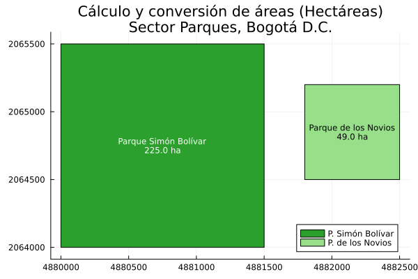
La exploración algorítmica de los objetos espaciales permite auditar e identificar las funciones de geoprocesamiento, constructores y atributos disponibles en las librerías base. Dado que cada ecosistema maneja un paradigma de programación distinto (orientado a objetos en Python, funcional S3 en R y despacho múltiple en Julia), los mecanismos de introspección para listar los métodos aplicables a las geometrías y estructuras tabulares varían significativamente.
# #| eval: false
import geopandas as gpd
from shapely.geometry import Point
# Instanciación de una geometría puntual (Bogotá, MAGNA-SIRGAS Origen Nacional)
punto_bogota = Point(4882000, 2060000)
# En Python, la función nativa dir() retorna todos los atributos y métodos del objeto.
# Se filtran los métodos mágicos (aquellos que inician con doble guion bajo '__')
metodos_shapely = [metodo for metodo in dir(punto_bogota) if not metodo.startswith('_')]
print("Métodos topológicos y analíticos de Shapely (clase Point):")Métodos topológicos y analíticos de Shapely (clase Point):print(metodos_shapely[:10]) # Visualización de los primeros 10 métodos['area', 'boundary', 'bounds', 'buffer', 'centroid', 'contains', 'contains_properly', 'convex_hull', 'coords', 'covered_by']# Inspección de métodos a nivel de estructura tabular (GeoDataFrame)
gdf_vacio = gpd.GeoDataFrame(geometry=[punto_bogota])
metodos_geopandas = [metodo for metodo in dir(gdf_vacio) if not metodo.startswith('_')]
print("\nMétodos espaciales y tabulares de GeoPandas (clase GeoDataFrame):")
Métodos espaciales y tabulares de GeoPandas (clase GeoDataFrame):print(metodos_geopandas[:10])['T', 'abs', 'active_geometry_name', 'add', 'add_prefix', 'add_suffix', 'affine_transform', 'agg', 'aggregate', 'align']# #| eval: false
library(sf)
# En el paradigma funcional S3 de R, la función methods() enumera
# las rutinas genéricas implementadas específicamente para una clase dada.
# 1. Listado de métodos asociados al data frame espacial completo (clase 'sf')
print("Métodos disponibles para la clase tabular 'sf':")[1] "Métodos disponibles para la clase tabular 'sf':"print(head(methods(class = "sf"), 15)) [1] "[.sf"
[2] "[[<-.sf"
[3] "[<-.sf"
[4] "$<-.sf"
[5] "aggregate.sf"
[6] "as.data.frame.sf"
[7] "cbind.sf"
[8] "coerce,oldClass,S3-method"
[9] "coerce,sf,Spatial-method"
[10] "coerce,Spatial,sf-method"
[11] "dbDataType,DBIObject,sf-method"
[12] "dbDataType,PostgreSQLConnection,sf-method"
[13] "dbWriteTable,DBIObject,character,sf-method"
[14] "dbWriteTable,PostgreSQLConnection,character,sf-method"
[15] "duplicated.sf" # 2. Listado de métodos operativos sobre la columna de geometrías (clase 'sfc')
print("Métodos disponibles para la columna espacial 'sfc':")[1] "Métodos disponibles para la columna espacial 'sfc':"print(head(methods(class = "sfc"), 15)) [1] "[.sfc" "[<-.sfc"
[3] "as.data.frame.sfc" "c.sfc"
[5] "coerce,oldClass,S3-method" "coerce,sfc,Spatial-method"
[7] "coerce,Spatial,sfc-method" "format.sfc"
[9] "fortify.sfc" "identify.sfc"
[11] "initialize,oldClass-method" "obj_sum.sfc"
[13] "Ops.sfc" "points.sfc"
[15] "print.sfc" # 3. Listado de métodos para primitivas individuales (clase 'sfg')
print("Métodos disponibles para geometrías individuales 'sfg':")[1] "Métodos disponibles para geometrías individuales 'sfg':"print(head(methods(class = "sfg"), 15)) [1] "as.matrix.sfg" "c.sfg"
[3] "coerce,oldClass,S3-method" "format.sfg"
[5] "fortify.sfg" "head.sfg"
[7] "initialize,oldClass-method" "Ops.sfg"
[9] "plot.sfg" "print.sfg"
[11] "show,oldClass-method" "slotsFromS3,oldClass-method"
[13] "st_area.sfg" "st_as_binary.sfg"
[15] "st_as_text.sfg" # #| eval: false
# Regla de pliegue exclusiva para este bloque j_eval de Julia:
# Si el código NO se ejecuta (# #| eval: false), usa: # #| code-fold: true
# Si el código SÍ se ejecuta (para mostrar resultados), usa: #| code-fold: true
j_eval('
import ArchGDAL
# El ecosistema de Julia opera bajo el paradigma de despacho múltiple.
# Las funciones no pertenecen a los objetos, sino que los objetos se pasan como argumentos.
# 1. Inspección de la jerarquía de tipos de la geometría
# Instanciación de geometría básica (Bogotá, MAGNA-SIRGAS)
punto_julia = ArchGDAL.fromWKT("POINT (4882000 2060000)")
tipo_geometria = typeof(punto_julia)
println("Tipo de dato exacto de la geometría: ", tipo_geometria)
println("Clase abstracta superior (Supertype): ", supertype(tipo_geometria))
# 2. Inspección del despacho múltiple en funciones espaciales genéricas
# Dado que la mayoría de funciones base de GDAL operan sobre el tipo AbstractGeometry,
# el enfoque analítico en Julia consiste en consultar qué firmas (tipos de datos)
# soporta una función de geoprocesamiento específica utilizando methods().
println("\\nFirmas de métodos disponibles para la función ArchGDAL.buffer:")
println(methods(ArchGDAL.buffer))
println("\\nFirmas de métodos disponibles para la función ArchGDAL.intersection:")
println(methods(ArchGDAL.intersection))
')julia> import ArchGDAL
julia> # El ecosistema de Julia opera bajo el paradigma de despacho múltiple.
julia> # Las funciones no pertenecen a los objetos, sino que los objetos se pasan como argumentos.
julia> # 1. Inspección de la jerarquía de tipos de la geometría
julia> # Instanciación de geometría básica (Bogotá, MAGNA-SIRGAS)
julia> punto_julia = ArchGDAL.fromWKT("POINT (4882000 2060000)")
Geometry: POINT (4882000 2060000)
julia> tipo_geometria = typeof(punto_julia)
ArchGDAL.IGeometry{ArchGDAL.wkbPoint}
julia> println("Tipo de dato exacto de la geometría: ", tipo_geometria)
Tipo de dato exacto de la geometría: ArchGDAL.IGeometry{ArchGDAL.wkbPoint}
julia> println("Clase abstracta superior (Supertype): ", supertype(tipo_geometria))
Clase abstracta superior (Supertype): ArchGDAL.AbstractGeometry{ArchGDAL.wkbPoint}
julia> # 2. Inspección del despacho múltiple en funciones espaciales genéricas
julia> # Dado que la mayoría de funciones base de GDAL operan sobre el tipo AbstractGeometry,
julia> # el enfoque analítico en Julia consiste en consultar qué firmas (tipos de datos)
julia> # soporta una función de geoprocesamiento específica utilizando methods().
julia> println("\nFirmas de métodos disponibles para la función ArchGDAL.buffer:")
Firmas de métodos disponibles para la función ArchGDAL.buffer:
julia> println(methods(ArchGDAL.buffer))
# 3 methods for generic function "buffer" from ArchGDAL:
[1] buffer(f::Function, args...; kwargs...)
@ ~/.julia/packages/ArchGDAL/7ZWOl/src/context.jl:265
[2] buffer(geom::ArchGDAL.AbstractGeometry, dist::Real, quadsegs::Integer)
@ ~/.julia/packages/ArchGDAL/7ZWOl/src/ogr/geometry.jl:785
[3] buffer(geom::ArchGDAL.AbstractGeometry, dist::Real)
@ ~/.julia/packages/ArchGDAL/7ZWOl/src/ogr/geometry.jl:785
julia> println("\nFirmas de métodos disponibles para la función ArchGDAL.intersection:")
Firmas de métodos disponibles para la función ArchGDAL.intersection:
julia> println(methods(ArchGDAL.intersection))
# 2 methods for generic function "intersection" from ArchGDAL:
[1] intersection(f::Function, args...; kwargs...)
@ ~/.julia/packages/ArchGDAL/7ZWOl/src/context.jl:265
[2] intersection(g1::ArchGDAL.AbstractGeometry, g2::ArchGDAL.AbstractGeometry)
@ ~/.julia/packages/ArchGDAL/7ZWOl/src/ogr/geometry.jl:806
| Operación | Python (geopandas / shapely) 🐍 |
R (sf) 🔵 |
Julia (ArchGDAL) 🟣 |
|---|---|---|---|
| Desde texto WKT | gpd.GeoSeries.from_wkt(["POINT(1 1)"]) |
st_as_sfc("POINT(1 1)") |
ArchGDAL.fromWKT("POINT(1 1)") |
| Primitiva (Objeto) | Point(lon, lat) |
st_point(c(lon, lat)) |
ArchGDAL.createpoint(lon, lat) |
| Geometría a tabla | gpd.GeoDataFrame(df, geometry=[pt]) |
st_sf(df, geometry = st_sfc(pt)) |
DataFrame(A=1, geometry=[pt]) |